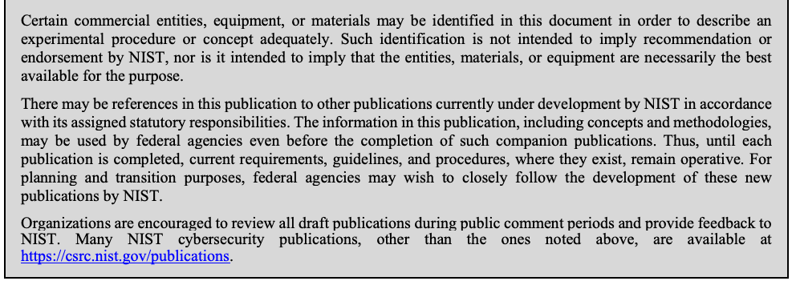

NIST SP 800-52 Rev. 2 日本語訳
英語タイトル : Guidelines for the Selection, Configuration, and Use of Transport Layer Security (TLS) Implementations日本語タイトル : Transport Layer Security（TLS）実装の選択、設定、使用に関するガイドライン
公開日 : 2019-08-29
原文URL : https://csrc.nist.gov/pubs/sp/800/52/r2/final
翻訳編集 : 自動生成（有志による非公式の日本語訳）, 原文取得日 : 2026-10-01, 訳文 : 889 / 889 ブロック
[要約] SP 800-52 Rev. 2 は、Transport Layer Security（TLS）実装の選択、設定、使用に関するガイドラインを示します。TLSの概要とセキュリティサービスを説明したうえで、サーバーとクライアントそれぞれの最小要件として、プロトコルバージョン、鍵と証明書、暗号技術、拡張などを定めます。TLSは機微なデータを電子的な配布の際に保護する仕組みと位置付けられ、OMB Circular A-130の要求を背景に、TLSの歴史と適用範囲も述べます。
NIST Special Publication 800-52
NIST Special Publication 800-52
Revision 2
第2版
Guidelines for the Selection,
Transport Layer Security（TLS）実装の選択、
Configuration, and Use of Transport Layer Security (TLS) Implementations
設定、使用に関するガイドライン
Kerry A. McKay David A. Cooper
Kerry A. McKay David A. Cooper
This publication is available free of charge from: https://doi.org/10.6028/NIST.SP.800-52r2
本出版物は次のURLから無料で入手できます：https://doi.org/10.6028/NIST.SP.800-52r2
C O M P U T E R S E C U R I T Y
コンピュータセキュリティ
［NIST のロゴ。公的な標章のため、この非公式サイトには掲載していません。原本 PDF を参照してください。］
NIST Special Publication 800-52
NIST Special Publication 800-52
Revision 2
第2版
Guidelines for the Selection,
Transport Layer Security（TLS）実装の選択、
Configuration, and Use of Transport Layer Security (TLS) Implementations
設定、使用に関するガイドライン
Kerry A. McKay David A. Cooper
Kerry A. McKay David A. Cooper
Computer Security Division Information Technology Laboratory
コンピュータセキュリティ部門 情報技術研究所
This publication is available free of charge from: https://doi.org/10.6028/NIST.SP.800-52r2
本出版物は次のURLから無料で入手できます：https://doi.org/10.6028/NIST.SP.800-52r2
August 2019
2019年8月
U.S. Department of Commerce Wilbur L. Ross, Jr., Secretary
米国商務省 Wilbur L. Ross, Jr.、長官
National Institute of Standards and Technology
米国国立標準技術研究所
Walter Copan, NIST Director and Under Secretary of Commerce for Standards and Technology
Walter Copan、NIST所長兼商務省標準技術担当次官
Authority
権限
This publication has been developed by NIST in accordance with its statutory responsibilities under the Federal Information Security Modernization Act (FISMA) of 2014, 44 U.S.C. § 3551 et seq., Public Law (P.L.) 113-283. NIST is responsible for developing information security standards and guidelines, including minimum requirements for federal information systems, but such standards and guidelines shall not apply to national security systems without the express approval of appropriate federal officials exercising policy authority over such systems. This guideline is consistent with the requirements of the Office of Management and Budget (OMB) Circular A-130.
本出版物は、2014年連邦情報セキュリティ近代化法（FISMA）、44 U.S.C. § 3551 et seq.、Public Law（P.L.）113-283に基づく法定責務に従い、NISTが策定しました。NISTは、連邦情報システムの最低要件を含む情報セキュリティ標準およびガイドラインの策定を担います。ただし、そのような標準およびガイドラインは、当該システムに関する政策権限を行使する適切な連邦当局者の明示的な承認がない限り、国家安全保障システムに適用してはなりません（shall）。本ガイドラインは、Office of Management and Budget（OMB）Circular A-130の要件に整合しています。
Nothing in this publication should be taken to contradict the standards and guidelines made mandatory and binding on federal agencies by the Secretary of Commerce under statutory authority. Nor should these guidelines be interpreted as altering or superseding the existing authorities of the Secretary of Commerce, Director of the OMB, or any other federal official. This publication may be used by nongovernmental organizations on a voluntary basis and is not subject to copyright in the United States. Attribution would, however, be appreciated by NIST.
本出版物のいかなる記述も、法定権限に基づき商務長官が連邦機関に義務付け、拘束力を持たせた標準およびガイドラインに反するものと解釈してはなりません（should）。また、本ガイドラインは、商務長官、OMB長官、その他の連邦当局者の既存の権限を変更または置き換えるものと解釈してはなりません（should）。本出版物は非政府組織が任意で使用でき、米国内では著作権の対象となりません。ただし、NISTの出典表示をしていただければ幸いです。
National Institute of Standards and Technology Special Publication 800-52 Revision 2 Natl. Inst. Stand. Technol. Spec. Publ. 800-52 Rev. 2, 72 pages (August 2019) CODEN: NSPUE2
National Institute of Standards and Technology Special Publication 800-52 Revision 2 Natl. Inst. Stand. Technol. Spec. Publ. 800-52 Rev. 2, 72ページ（2019年8月） CODEN: NSPUE2
This publication is available free of charge from: https://doi.org/10.6028/NIST.SP.800-52r2
本出版物は次のURLから無料で入手できます：https://doi.org/10.6028/NIST.SP.800-52r2
Certain commercial entities, equipment, or materials may be identified in this document in order to describe an experimental procedure or concept adequately. Such identification is not intended to imply recommendation or endorsement by NIST, nor is it intended to imply that the entities, materials, or equipment are necessarily the best available for the purpose.
原本PDFの抜粋画像

実験手順または概念を十分に説明するため、本書では特定の商業事業者、機器または材料に言及している場合があります。このような言及は、NISTによる推奨または承認を意味するものではなく、それらの事業者、材料または機器が目的に適した入手可能な最良のものであることを意味するものでもありません。
There may be references in this publication to other publications currently under development by NIST in accordance with its assigned statutory responsibilities. The information in this publication, including concepts and methodologies, may be used by federal agencies even before the completion of such companion publications. Thus, until each publication is completed, current requirements, guidelines, and procedures, where they exist, remain operative. For planning and transition purposes, federal agencies may wish to closely follow the development of these new publications by NIST.
本刊行物には、NISTが割り当てられた法定責任に従って現在策定中の他の刊行物への言及が含まれる場合があります。本刊行物の情報（概念および方法論を含む）は、関連する刊行物が完成する前であっても、連邦機関が利用してもよいです。したがって、各刊行物が完成するまでは、既存の要件、ガイドラインおよび手順がある場合、それらは引き続き有効です。計画および移行にあたり、連邦機関はNISTによる新たな刊行物の策定状況を注視してもよいです。
Organizations are encouraged to review all draft publications during public comment periods and provide feedback to NIST. Many NIST cybersecurity publications, other than the ones noted above, are available at https://csrc.nist.gov/publications.
組織には、すべての草案をパブリックコメント期間中に確認し、NISTに意見を提出することを推奨します。上記以外の多くのNISTサイバーセキュリティ刊行物は、https://csrc.nist.gov/publications で入手できます。
Comments on this publication may be submitted to:
本刊行物に対するコメントの送付先：
National Institute of Standards and Technology Attn: Computer Security Division, Information Technology Laboratory 100 Bureau Drive (Mail Stop 8930) Gaithersburg, MD 20899-8930 Email: sp80052-comments@nist.gov
National Institute of Standards and Technology Attn: Computer Security Division, Information Technology Laboratory 100 Bureau Drive (Mail Stop 8930) Gaithersburg, MD 20899-8930 Email: sp80052-comments@nist.gov
All comments are subject to release under the Freedom of Information Act (FOIA).
すべてのコメントは、情報公開法（FOIA）に基づく公開の対象となります。
Reports on Computer Systems Technology
コンピュータシステム技術に関する報告書
The Information Technology Laboratory (ITL) at the National Institute of Standards and Technology (NIST) promotes the U.S. economy and public welfare by providing technical leadership for the Nation’s measurement and standards infrastructure. ITL develops tests, test methods, reference data, proof of concept implementations, and technical analyses to advance the development and productive use of information technology. ITL’s responsibilities include the development of management, administrative, technical, and physical standards and guidelines for the cost-effective security and privacy of other than national security-related information in federal information systems. The Special Publication 800-series reports on ITL’s research, guidelines, and outreach efforts in information system security, and its collaborative activities with industry, government, and academic organizations.
National Institute of Standards and Technology（NIST）のInformation Technology Laboratory（ITL）は、国の計測および標準インフラストラクチャに技術的リーダーシップを提供することで、米国経済と公共福祉を促進しています。ITLは、情報技術の発展と生産的な利用を促進するため、テスト、テスト方法、参照データ、概念実証実装、技術分析を開発します。ITLの責務には、国家安全保障関連以外の情報を扱う連邦情報システムの費用対効果の高いセキュリティおよびプライバシーのための管理、運用、技術、物理的な標準およびガイドラインの策定が含まれます。Special Publication 800シリーズは、情報システムセキュリティに関するITLの研究、ガイドライン、普及活動、および産業界、政府、学術機関との協力活動を報告します。
Abstract
要約
Transport Layer Security (TLS) provides mechanisms to protect data during electronic dissemination across the Internet. This Special Publication provides guidance to the selection and configuration of TLS protocol implementations while making effective use of Federal Information Processing Standards (FIPS) and NIST-recommended cryptographic algorithms. It requires that TLS 1.2 configured with FIPS-based cipher suites be supported by all government TLS servers and clients and requires support for TLS 1.3 by January 1, 2024. This Special Publication also provides guidance on certificates and TLS extensions that impact security.
Transport Layer Security（TLS）は、インターネットを介して電子的に配布されるデータを保護する仕組みを提供します。本Special Publicationは、Federal Information Processing Standards（FIPS）およびNISTが推奨する暗号アルゴリズムを効果的に活用しながら、TLSプロトコル実装を選択および構成するためのガイダンスを示します。すべての政府機関のTLSサーバーおよびクライアントに対し、FIPSベースの暗号スイートで構成されたTLS 1.2のサポートを求め、2024年1月1日までにTLS 1.3をサポートすることを求めます。本Special Publicationは、セキュリティに影響する証明書およびTLS拡張に関するガイダンスも示します。
Keywords
キーワード
information security; network security; SSL; TLS; Transport Layer Security
情報セキュリティ；ネットワークセキュリティ；SSL；TLS；Transport Layer Security
Acknowledgements
謝辞
The authors, Kerry McKay and David Cooper of the National Institute of Standards and Technology (NIST), would like to thank the many people who assisted with the development of this document. In particular, we would like to acknowledge Tim Polk of NIST and Santosh Chokhani of CygnaCom Solutions, who were co-authors on the first revision of this document. We would also like to acknowledge Matthew J. Fanto and C. Michael Chernick of NIST and Charles Edington III and Rob Rosenthal of Booz Allen Hamilton who wrote the initial published version of this document.
著者であるNational Institute of Standards and Technology（NIST）のKerry McKayおよびDavid Cooperは、本書の策定を支援した多くの人々に謝意を表します。特に、本書の初回改訂版の共著者であるNISTのTim PolkおよびCygnaCom SolutionsのSantosh Chokhaniに謝意を表します。また、本書の初版を執筆したNISTのMatthew J. FantoおよびC. Michael Chernick、ならびにBooz Allen HamiltonのCharles Edington IIIおよびRob Rosenthalにも謝意を表します。
Audience
対象読者
This document assumes that the reader of these guidelines is familiar with TLS protocols and public-key infrastructure concepts, including, for example, X.509 certificates.
本ガイドラインの読者は、TLSプロトコルおよび公開鍵基盤の概念（例：X.509証明書）に精通していることを前提とします。
The guidelines in this document are specifically targeted towards U.S. federal departments and agencies. While these guidelines will generally be of use to other readers, information about recommended cryptographic algorithms may not apply to non-federal readers if it is inconsistent with the policies of the readers’ organizations.
本書のガイドラインは、米国連邦省庁を対象としています。一般に他の読者にも有用ですが、推奨暗号アルゴリズムに関する情報が読者の所属組織の方針と矛盾する場合、連邦政府以外の読者には適用されないことがあります。
Executive Summary
エグゼクティブサマリー
Office of Management and Budget (OMB) Circular A-130, Managing Information as a Strategic Resource, requires managers of public-facing information repositories or dissemination systems that contain sensitive but unclassified data to ensure that sensitive data is protected commensurate with the risk and magnitude of the harm that would result from the loss, misuse, or unauthorized access to or modification of such data. Given the nature of interconnected networks and the use of the Internet to share information, the protection of this sensitive data can become difficult if proper mechanisms are not employed to protect the data. Transport Layer Security (TLS) provides such a mechanism to protect sensitive data during electronic dissemination across the Internet.
行政管理予算局（OMB）Circular A-130『Managing Information as a Strategic Resource』は、機微だが非機密のデータを含む、一般公開された情報リポジトリまたは配布システムの管理者に対し、当該データの紛失、不正使用、不正アクセス、改変によって生じる被害のリスクと大きさに見合った形で、機微なデータが保護されるようにすることを求めています。ネットワークが相互接続され、インターネットが情報共有に使われている状況では、適切な仕組みを用いなければ、この機微なデータの保護が困難になり得ます。Transport Layer Security（TLS）は、インターネットを介した電子的な配布の際に機微なデータを保護するための、そのような仕組みを提供します。
TLS is a protocol created to provide authentication, confidentiality, and data integrity protection between two communicating applications. TLS is based on a precursor protocol called the Secure Sockets Layer Version 3.0 (SSL 3.0) and is considered to be an improvement to SSL 3.0. SSL 3.0 is specified in [32]. The Transport Layer Security version 1 (TLS 1.0) is specified in Request for Comments (RFC) 2246 [23]. Each document specifies a similar protocol that provides security services over the Internet. TLS 1.0 has been revised to version 1.1, as documented in RFC 4346 [24], and TLS 1.1 has been further revised to version 1.2, as documented in RFC 5246 [25]. In addition, some extensions have been defined to mitigate some of the known security vulnerabilities in implementations using TLS versions 1.0, 1.1, and 1.2. TLS 1.3, described in RFC 8446 [57], is a significant update to previous versions that includes protections against security concerns that arose in previous versions of TLS.
TLSは、通信する2つのアプリケーション間で、認証、機密性、およびデータ完全性の保護を提供するために作られたプロトコルです。TLSは、Secure Sockets Layer Version 3.0（SSL 3.0）という前身のプロトコルに基づいており、SSL 3.0の改良版とみなされています。SSL 3.0は [32] で規定されています。Transport Layer Security version 1（TLS 1.0）は、Request for Comments（RFC）2246 [23] で規定されています。それぞれの文書は、インターネット上でセキュリティ・サービスを提供する類似のプロトコルを規定しています。TLS 1.0はバージョン1.1に改訂され、RFC 4346 [24] に文書化されており、TLS 1.1はさらにバージョン1.2に改訂され、RFC 5246 [25] に文書化されています。加えて、TLSバージョン1.0、1.1、1.2を用いた実装における既知のセキュリティ脆弱性の一部を緩和するため、いくつかの拡張が定義されています。RFC 8446 [57] に記述されているTLS 1.3は、従来のバージョンを大幅に更新したものであり、従来のTLSバージョンで生じたセキュリティ上の懸念に対する保護を含んでいます。
This Special Publication provides guidance on the selection and configuration of TLS protocol implementations while making effective use of NIST-approved cryptographic schemes and algorithms. In particular, it requires that TLS 1.2 be configured with cipher suites using NIST-approved schemes and algorithms as the minimum appropriate secure transport protocol and requires support for TLS 1.3 by January 1, 2024.1 When interoperability with non-government systems is required, TLS 1.1 and TLS 1.0 may be supported. This Special Publication also identifies TLS extensions for which mandatory support must be provided and also identifies other recommended extensions.
本Special Publicationは、NIST承認の暗号方式およびアルゴリズムを効果的に活用しながら、TLSプロトコル実装を選択し構成するためのガイダンスを示します。特に、最低限適切なセキュアトランスポートプロトコルとして、NIST承認の方式とアルゴリズムを用いる暗号スイートでTLS 1.2を構成することを求め、2024年1月1日までにTLS 1.3をサポートすることを求めます。1 非政府システムとの相互運用性が必要な場合は、TLS 1.1およびTLS 1.0をサポートしてもよいです。本Special Publicationはまた、サポートの提供が必須となるTLS拡張を特定し、そのほかの推奨される拡張も特定します。
The use of the recommendations provided in this Special Publication are intended to promote:
本Special Publicationで示す推奨事項の利用は、次のことを促進することを意図しています。
•More consistent use of authentication, confidentiality, and integrity mechanisms for the protection of information transported across the Internet;
•インターネット上で転送される情報を保護するための認証、機密性、完全性メカニズムを、より一貫して使用すること。
•Consistent use of the recommended cipher suites that encompass NIST-approved algorithms and open standards;
•推奨暗号スイート（NIST承認済みアルゴリズムとオープン標準を含む）の一貫した使用;
•Protection against known and anticipated attacks on the TLS protocol; and
•TLSプロトコルに対する既知および予想される攻撃からの保護。
•Informed decisions by system administrators and managers in the integration of TLS implementations.
•TLS実装の統合において、システム管理者およびマネージャーが情報に基づいた判断を行えるようにすること。
While these guidelines are primarily designed for federal users and system administrators to adequately protect sensitive but unclassified U.S. Federal Government data against serious threats on the Internet, they may also be used within closed network environments to segregate data. (The client-server model and security services discussed also apply in these situations). This Special Publication supersedes NIST Special Publication 800-52 Revision 1. This Special Publication should be used in conjunction with existing policies and procedures.
本ガイドラインは、主に連邦政府の利用者およびシステム管理者が、インターネット上の深刻な脅威から、機微ではあるものの未機密扱いの米国連邦政府データを十分に保護できるよう設計されていますが、データを分離するために閉鎖ネットワーク環境で使用することもできます（ここで説明するクライアント・サーバーモデルとセキュリティサービスは、そのような状況にも適用されます）。本Special Publicationは、NIST Special Publication 800-52 Revision 1に取って代わります。本Special Publicationは、既存のポリシーおよび手順と併せて使用すべきです。
Table of Contents
目次
List of Appendices
付録一覧
1 Introduction
1 はじめに
Transport Layer Security (TLS) protocols are used to secure communications in a wide variety of online transactions, such as financial transactions (e.g., banking, trading stocks, e-commerce), healthcare transactions (e.g., viewing medical records or scheduling medical appointments), and social transactions (e.g., email or social networking). Any network service that handles sensitive or valuable data, whether it is personally identifiable information (PII), financial data, or login information, needs to adequately protect that data. TLS provides a protected channel for sending data between a server and a client. The client is often, but not always, a web browser. Memorandum M-15-132 requires that all publicly accessible federal websites and web services only provide service through a secure connection.3 The initiative to secure connections will enhance privacy and prevent modification of the data from government sites in transit.
Transport Layer Security（TLS）プロトコルは、金融取引（例：銀行取引、株式売買、電子商取引）、医療取引（例：医療記録の閲覧、診療予約）、社会的なやり取り（例：電子メール、ソーシャルネットワーキング）など、幅広いオンライン取引の通信を保護するために使用されています。個人識別情報（PII）、金融データ、ログイン情報など、機微または価値の高いデータを扱うネットワークサービスは、いずれもそのデータを適切に保護する必要があります。TLSは、サーバーとクライアントの間でデータを送信するための保護されたチャネルを提供します。クライアントは多くの場合ウェブブラウザーですが、必ずしもそうとは限りません。覚書M-15-132は、一般にアクセス可能な連邦政府のすべてのウェブサイトおよびウェブサービスに対し、安全な接続を介してのみサービスを提供するよう求めている3。接続の安全性を高めるこの取り組みにより、プライバシーが向上し、政府サイトから送信されるデータが転送中に改変されることを防止できます。
TLS is a layered protocol that runs on top of a reliable transport protocol—typically the Transmission Control Protocol (TCP). Application protocols, such as the Hypertext Transfer Protocol (HTTP) and the Internet Message Access Protocol (IMAP), can run above TLS. TLS is application-independent and used to provide security to any two communicating applications that transmit data over a network via an application protocol.
TLSは、信頼性のあるトランスポートプロトコル、通常はTransmission Control Protocol（TCP）の上で動作する階層化プロトコルです。Hypertext Transfer Protocol（HTTP）やInternet Message Access Protocol（IMAP）などのアプリケーションプロトコルは、TLSの上で動作できます。TLSはアプリケーションに依存せず、アプリケーションプロトコルを介してネットワーク上でデータを送信する、通信中の任意の2つのアプリケーションにセキュリティを提供するために使用されます。
1.1 History of TLS
1.1 TLSの歴史
The Secure Sockets Layer (SSL) protocol was designed by the Netscape Corporation to meet the security needs of client and server applications. Version 1 of SSL was never released. SSL 2.0 was released in 1995 but had well-known security vulnerabilities, which were addressed by the 1996 release of SSL 3.0. During this timeframe, the Microsoft Corporation released a protocol known as Private Communications Technology (PCT) and later released a higher-performance protocol known as the Secure Transport Layer Protocol (STLP). PCT and STLP never commanded the market share that SSL 2.0 and SSL 3.0 commanded. The Internet Engineering Task Force (IETF), a technical working group responsible for developing Internet standards to ensure communications compatibility across different implementations, attempted to resolve security engineering and protocol incompatibility issues between the protocols as best it could. The IETF standards track Transport Layer Security protocol Version 1.0 (TLS 1.0) emerged and was codified by the IETF as Request for Comments (RFC) 2246 [23]. While TLS 1.0 is based on SSL 3.0, and the differences between them are not dramatic, they are significant enough that TLS 1.0 and SSL 3.0 do not interoperate.
Secure Sockets Layer（SSL）プロトコルは、クライアントアプリケーションとサーバーアプリケーションのセキュリティ要件を満たすため、Netscape Corporationによって設計されました。SSLバージョン1は公開されなかった。SSL 2.0は1995年に公開されましたが、よく知られたセキュリティ脆弱性があり、これらは1996年に公開されたSSL 3.0で対処されました。この時期、Microsoft CorporationはPrivate Communications Technology（PCT）と呼ばれるプロトコルを公開し、その後、より高性能なSecure Transport Layer Protocol（STLP）を公開しました。PCTおよびSTLPが獲得した市場シェアは、SSL 2.0およびSSL 3.0の規模には達しませんでした。異なる実装間の通信互換性を確保するインターネット標準の策定を担う技術作業部会であるInternet Engineering Task Force（IETF）は、これらのプロトコル間のセキュリティ設計上の問題や互換性の問題を可能な限り解決しようとしました。その結果、IETFの標準化過程においてTransport Layer Securityプロトコルバージョン1.0（TLS 1.0）が生まれ、IETFによってRequest for Comments（RFC）2246 [23]として標準化されました。TLS 1.0はSSL 3.0を基礎とし、両者の違いは大きくありませんが、相互運用できない程度には重要な差異があります。
TLS 1.1, specified in RFC 4346 [24], was developed to address weaknesses discovered in TLS 1.0, primarily in the areas of initialization vector selection and padding error processing. Initialization vectors were made explicit4 to prevent a certain class of attacks on the Cipher
TLS 1.1はRFC 4346 [24]で規定され、TLS 1.0で判明した弱点、とりわけ初期化ベクトルの選択とパディングエラー処理に関する弱点に対処するために開発されました。暗号ブロック連鎖（CBC）動作モード（TLSで使用される）に対する特定の種類の攻撃を防ぐため、初期化ベクトルは明示的にされた4。
Block Chaining (CBC) mode of operation used by TLS. The handling of padding errors was altered to treat a padding error as a bad message authentication code rather than a decryption failure. In addition, the TLS 1.1 RFC acknowledges attacks on CBC mode that rely on the time to compute the message authentication code (MAC). The TLS 1.1 specification states that to defend against such attacks, an implementation must process records in the same manner regardless of whether padding errors exist. Further implementation considerations for CBC modes (which were not included in RFC 4346 [24]) are discussed in Section 3.3.2.
パディングエラーの扱いは、復号失敗ではなく不正なメッセージ認証コードとして扱うよう変更されました。さらに、TLS 1.1のRFCは、メッセージ認証コード（MAC）の計算時間に依存するCBCモードへの攻撃を認識しています。このような攻撃を防ぐため、実装はパディングエラーの有無にかかわらず、レコードを同じ方法で処理しなければならないとTLS 1.1仕様に記載されています。RFC 4346 [24]に含まれていなかったCBCモードの追加的な実装上の考慮事項については、セクション3.3.2で説明します。
TLS 1.2, specified in RFC 5246 [25], made several cryptographic enhancements, particularly in the area of hash functions, with the ability to use or specify the SHA-2 family of algorithms for hash, MAC, and Pseudorandom Function (PRF) computations. TLS 1.2 also adds authenticated encryption with associated data (AEAD) cipher suites.
RFC 5246 [25]で規定されたTLS 1.2では、暗号技術に複数の機能強化が加えられました。特にハッシュ関数の分野では、ハッシュ、MAC、疑似乱数関数（PRF）の計算にSHA-2ファミリーのアルゴリズムを使用または指定できるようになりました。また、TLS 1.2では、関連データ付き認証暗号（AEAD）の暗号スイートが追加されました。
TLS 1.3, specified in RFC 8446 [57], represents a significant change to TLS that aims to address threats that have arisen over the years. Among the changes are a new handshake protocol, a new key derivation process that uses the HMAC-based Extract-and-Expand Key Derivation Function (HKDF) [37], and the removal of cipher suites that use RSA key transport or static Diffie-Hellman (DH) key exchanges, the CBC mode of operation, or SHA-1. Many extensions defined for use with TLS 1.2 and previous versions cannot be used with TLS 1.3.
RFC 8446 [57]で規定されたTLS 1.3は、長年にわたって生じた脅威に対処することを目指し、TLSに大きな変更を加えています。変更点には、新しいハンドシェイクプロトコル、HMACベースの抽出・拡張鍵導出関数（HKDF）[37]を使用する新しい鍵導出プロセス、RSA鍵転送または静的Diffie-Hellman（DH）鍵交換、CBC動作モード、SHA-1を使用する暗号スイートの削除が含まれます。TLS 1.2以前のバージョン向けに定義された多くの拡張機能は、TLS 1.3では使用できません。
1.2 Scope
1.2 適用範囲
Security is not a single property that is (or is not) possessed by a protocol. Rather, security includes a complex set of related properties that together provide the required information assurance characteristics and information protection services. Security requirements are usually derived from a risk assessment of the threats or attacks that an adversary is likely to mount against a system. The adversary is likely to take advantage of implementation vulnerabilities found in many system components, including computer operating systems, application software systems, and the computer networks that interconnect them. Thus, in order to secure a system against a myriad of threats, security must be judiciously placed in the various systems and network layers.
セキュリティとは、プロトコルが単一の性質を備えているかどうかで決まるものではありません。セキュリティは、相互に関連する複数の性質から成り、それらが組み合わさって必要な情報保証特性と情報保護サービスを提供します。セキュリティ要件は通常、攻撃者がシステムに対して行う可能性の高い脅威や攻撃をリスク評価し、そこから導出されます。攻撃者は、コンピューターのオペレーティングシステム、アプリケーションソフトウェア、これらを相互接続するコンピューターネットワークなど、多くのシステムコンポーネントに存在する実装上の脆弱性を悪用する可能性があります。そのため、多様な脅威からシステムを保護するには、さまざまなシステム層およびネットワーク層にセキュリティを適切に配置しなければなりません。
These guidelines focus only on network security, and they focus directly on the small portion of the network communications stack that is referred to as the transport layer. Several other NIST publications address security requirements in the other parts of the system and network layers. Adherence to these guidelines only protects the data in transit. Other applicable NIST standards and guidelines should be used to ensure protection of systems and stored data.
本ガイドラインはネットワークセキュリティのみを対象とし、特に、ネットワーク通信スタックのうちトランスポート層と呼ばれる小さな部分に焦点を当てています。システム層およびネットワーク層の他の部分におけるセキュリティ要件については、他のNIST刊行物が扱っています。本ガイドラインに従うことで保護されるのは転送中のデータのみです。システムおよび保存データの保護を確実にするため、該当する他のNIST標準およびガイドラインも使用すべきです。
These guidelines focus on the common use cases where clients and servers must interoperate with a wide variety of implementations, and authentication is performed using public-key certificates. To promote interoperability, implementations often support a wide array of cryptographic options. However, there are much more constrained TLS implementations where security is needed but broad interoperability is not required, and the cost of implementing unused features may be prohibitive. For example, minimal servers are often implemented in embedded controllers and network infrastructure devices, such as routers, and then used with browsers to remotely configure and manage the devices. There are also cases where both the client and server for an application’s TLS connection are under the control of the same entity, and therefore allowing a variety of options for interoperability is not necessary. The use of an appropriate subset of the capabilities specified in these guidelines may be acceptable in such cases.
本ガイドラインは、クライアントとサーバーが多様な実装と相互運用する必要があり、公開鍵証明書を使って認証を行う一般的な利用状況を対象とします。相互運用性を高めるため、実装は多様な暗号方式をサポートすることがよくあります。一方、幅広い相互運用性は必要ないもののセキュリティを必要とし、使用しない機能の実装コストが過大になる場合がある、より制約の厳しいTLS実装もあります。たとえば、最小限のサーバーは組み込みコントローラーやルーターなどのネットワークインフラ機器に実装され、ブラウザーから機器を遠隔で設定・管理するために使用されることがよくあります。また、アプリケーションのTLS接続におけるクライアントとサーバーの両方を同じ主体が管理しているため、相互運用性のために多様な選択肢を許可する必要がない場合もあります。そのような場合は、本ガイドラインで規定する機能の適切な一部を使用してもかまいません。
The scope is further limited to TLS when used in conjunction with TCP/IP. For example, Datagram TLS (DTLS), which operates over datagram protocols, is outside the scope of these guidelines. NIST may issue separate guidelines for DTLS at a later date.
適用範囲は、TCP/IPと組み合わせて使用するTLSにさらに限定されます。たとえば、データグラムプロトコル上で動作するDatagram TLS（DTLS）は、本ガイドラインの適用範囲外です。NISTは、将来、DTLSについて別のガイドラインを発行する可能性があります。
1.2.1 Alternative Configurations
1.2.1 代替構成
TLS may be used to secure the communications of a wide variety of applications in a diverse set of operating environments. As such, there is not a single configuration that will work well for all scenarios. These guidelines attempt to provide general-use recommendations. However, the needs of an agency or application may differ from general needs. Deviations from these guidelines are acceptable, provided that agencies and system administrators assess and accept the risks associated with alternative configurations in terms of both security and interoperability.
TLSは、多様な運用環境にある幅広いアプリケーションの通信を保護するために使用できます。そのため、あらゆる状況に適した単一の構成はありません。本ガイドラインは、一般的な用途向けの推奨事項を示すことを目指しています。ただし、政府機関やアプリケーション固有のニーズは、一般的なニーズと異なる場合があります。政府機関およびシステム管理者が、代替構成に伴うセキュリティと相互運用性の両面のリスクを評価し、受容することを条件として、本ガイドラインからの逸脱は許容されます。
1.3 Document Conventions
1.3 文書の表記規則
Throughout this document, key words are used to identify requirements. The key words “shall,” “shall not,” “should,” and “should not” are used. These words are a subset of the IETF Request for Comments (RFC) 2119 key words, and have been chosen based on convention in other normative documents [15]. In addition to the key words, the words “need,” “can,” and “may” are used in this document but are not intended to be normative. The key words “NIST-approved” and “NIST-recommended” are used to indicate that a scheme or algorithm is described in a Federal Information Processing Standard (FIPS) or is recommended by NIST in a Special Publication (SP).
本書では、要件を示すためにキーワードを使用します。使用するキーワードは「shall」「shall not」「should」「should not」です。これらはIETF Request for Comments（RFC）2119のキーワードの一部であり、他の規範文書[15]の慣例に基づいて選ばれています。これらのキーワードに加えて、本書では「need」「can」「may」も使用しますが、規範的な意味を意図していません。「NIST-approved」および「NIST-recommended」は、方式またはアルゴリズムが連邦情報処理標準（FIPS）に記載されているか、NISTが特別刊行物（SP）で推奨していることを示すために使用します。
The recommendations in this document are grouped by server recommendations and client recommendations. Section 3 provides detailed guidance for the selection and configuration of TLS servers. Section 4 provides detailed guidance for the selection, configuration, and use of TLS clients.
本書の推奨事項は、サーバー向けとクライアント向けに分けて記載しています。セクション3では、TLSサーバーの選択と構成に関する詳細なガイダンスを示します。セクション4では、TLSクライアントの選択、構成、使用に関する詳細なガイダンスを示します。
2 TLS Overview
2 TLSの概要
TLS exchanges records via the TLS record protocol. A TLS record contains several fields, including version information, application protocol data, and the higher-level protocol used to process the application data. TLS protects the application data by using a set of cryptographic algorithms to ensure the confidentiality, integrity, and authenticity of exchanged application data. TLS defines several protocols for connection management that sit on top of the record protocol, where each protocol has its own record type. These protocols, discussed in Section 2.1, are used to establish and change security parameters and to communicate error and warning conditions to the server and client. Sections 2.2 through 2.6 describe the security services provided by the TLS protocol and how those security services are provisioned. Section 2.7 discusses key management.
TLSは、TLSレコードプロトコルを介してレコードを交換します。TLSレコードには、バージョン情報、アプリケーションプロトコルデータ、アプリケーションデータの処理に使用する上位プロトコルなど、複数のフィールドが含まれます。TLSは、暗号アルゴリズム群を用いて、交換されるアプリケーションデータの機密性、完全性、真正性を確保し、そのデータを保護します。TLSには、レコードプロトコルの上位で接続を管理する複数のプロトコルが定義されており、それぞれに固有のレコード型があります。セクション2.1で説明するこれらのプロトコルは、セキュリティパラメーターの確立・変更、およびエラーや警告状態のサーバーとクライアントへの通知に使用されます。セクション2.2から2.6では、TLSプロトコルが提供するセキュリティサービスと、そのサービスを提供する方法を説明します。セクション2.7では鍵管理を扱います。
2.1 TLS Subprotocols
2.1 TLSサブプロトコル
There are three subprotocols in the TLS protocol that are used to control the session connection: the handshake, change cipher spec, and alert protocols. The TLS handshake protocol is used to negotiate the session parameters. The alert protocol is used to notify the other party of an error condition. The change cipher spec protocol is used in TLS 1.0, 1.1, and 1.2 to change the cryptographic parameters of a session. In addition, the client and the server exchange application data that is protected by the security services provisioned by the negotiated cipher suite. These security services are negotiated and established with the handshake.
TLSプロトコルには、セッション接続を制御する3つのサブプロトコル、すなわちハンドシェイク、Change Cipher Spec、アラートがあります。TLSハンドシェイクプロトコルは、セッションパラメーターのネゴシエーションに使用されます。アラートプロトコルは、エラー状態を相手側に通知するために使用されます。Change Cipher Specプロトコルは、TLS 1.0、1.1、1.2でセッションの暗号パラメーターを変更するために使用されます。さらに、クライアントとサーバーは、ネゴシエートされた暗号スイートが提供するセキュリティサービスで保護されたアプリケーションデータを交換します。これらのセキュリティサービスは、ハンドシェイクによってネゴシエートされ、確立されます。
The handshake protocol consists of a series of message exchanges between the client and the server. The handshake protocol initializes both the client and server to use cryptographic capabilities by negotiating a cipher suite of algorithms and functions, including key establishment, digital signature, confidentiality, and integrity algorithms. Clients and servers can be configured so that one or more of the following security services are negotiated during the handshake: confidentiality, message integrity, authentication, and replay protection. A confidentiality service provides assurance that data is kept secret, preventing eavesdropping. A message integrity service provides confirmation that unauthorized data modification is detected, thus preventing undetected deletion, addition, or modification of data. An authentication service provides assurance of the sender or receiver’s identity, thereby detecting forgery. Replay protection ensures that an unauthorized user does not capture and successfully replay previous data. In order to comply with these guidelines, both the client and the server must be configured for data confidentiality and integrity services.
ハンドシェイクプロトコルは、クライアントとサーバーの間で交換される一連のメッセージから成ります。このプロトコルは、鍵確立、デジタル署名、機密性、完全性を実現するアルゴリズムや関数を含む暗号スイートをネゴシエートし、クライアントとサーバーが暗号機能を使用できるように初期化します。クライアントとサーバーは、ハンドシェイク中に次のセキュリティサービスの1つ以上をネゴシエートするよう設定できる：機密性、メッセージ完全性、認証、リプレイ保護。機密性サービスはデータの秘密を保ち、盗聴を防止します。メッセージ完全性サービスは、権限のないデータ変更を検出し、検出されない削除、追加、変更を防止します。認証サービスは送信者または受信者の識別情報を保証し、なりすましを検出します。リプレイ保護は、権限のない利用者が過去のデータを取得し、それを再送して成功させることを防ぎます。本ガイドラインに準拠するには、クライアントとサーバーの両方を、データの機密性および完全性サービスを提供するよう設定する必要があります。
The handshake protocol is used to optionally exchange X.509 public-key certificates5 to authenticate the server to the client and may be used to authenticate the client to the server as well.
ハンドシェイクプロトコルでは、サーバーをクライアントに対して認証するため、X.509公開鍵証明書5を任意に交換します。また、クライアントをサーバーに対して認証するためにも使用できます。
The handshake protocol is responsible for establishing the session parameters. The client and server negotiate algorithms for authentication, confidentiality, and integrity, as well as derive symmetric keys and establish other session parameters, such as extensions. The negotiated set of cryptographic algorithms is called the cipher suite.
ハンドシェイクプロトコルは、セッションパラメーターの確立を担います。クライアントとサーバーは、認証、機密性、完全性のためのアルゴリズムをネゴシエートし、共通鍵を導出するとともに、拡張機能などの他のセッションパラメーターを確立します。ネゴシエートされた暗号アルゴリズムの組み合わせを暗号スイートと呼びます。
Alerts are used to convey information about the session, such as errors or warnings. For example, an alert can be used to signal a decryption error (decrypt_error) or that access has been denied (access_denied). Some alerts are used for warnings, and others are considered fatal and lead to immediate termination of the session. A close_notify alert message is used to signal the normal termination of a session. Like all other messages after the handshake protocol is completed, alert messages are encrypted (and optionally compressed in TLS versions prior to TLS 1.3).
アラートは、エラーや警告など、セッションに関する情報を伝えるために使用されます。たとえば、復号エラー（decrypt_error）やアクセス拒否（access_denied）を通知できます。警告として扱われるアラートもあれば、致命的とみなされ、セッションを直ちに終了させるアラートもあります。close_notifyアラートメッセージは、セッションの正常な終了を通知します。ハンドシェイクプロトコルの完了後に交換される他のすべてのメッセージと同様に、アラートメッセージは暗号化されます（TLS 1.3より前のバージョンでは、さらに圧縮される場合もあります）。
Details of the handshake, change cipher spec (in TLS versions prior to 1.3), and alert protocols are outside the scope of these guidelines; they are described in RFC 5246 [25] and RFC 8446 [57].
ハンドシェイク、Change Cipher Spec（TLS 1.3より前のバージョン）、およびアラートの各プロトコルの詳細は、本ガイドラインの適用範囲外です。これらについてはRFC 5246 [25]およびRFC 8446 [57]で説明されています。
2.2 Shared Secret Negotiation
2.2 共有シークレットのネゴシエーション
The client and server establish keying material during the TLS handshake protocol. The derivation of the premaster secret depends on the key exchange method that is agreed upon and the version of TLS used. For example, when Diffie-Hellman is used as the key-exchange algorithm in TLS 1.2 and earlier versions, the client and server send each other their parameters, which are then used to compute the premaster secret. The premaster secret, along with random values exchanged by the client and server in the hello messages, is used in a pseudorandom function (PRF) to compute the master secret. In TLS 1.3, the master secret is derived by iteratively invoking an extract-then-expand function with previously derived secrets. The master secret is used to derive session keys, which are used by the negotiated security services to protect the data exchanged between the client and the server, thus providing a secure channel for the client and the server to communicate.
クライアントとサーバーは、TLSハンドシェイクプロトコル中に鍵素材を確立します。プレマスターシークレットの導出方法は、合意された鍵交換方式と使用するTLSのバージョンによって異なります。たとえば、TLS 1.2以前のバージョンでDiffie-Hellmanを鍵交換アルゴリズムとして使用する場合、クライアントとサーバーは互いにパラメーターを送信し、それらを用いてプレマスターシークレットを計算します。プレマスターシークレットと、クライアントとサーバーがhelloメッセージで交換した乱数値を疑似乱数関数（PRF）に入力し、マスターシークレットを計算します。TLS 1.3では、抽出してから拡張する関数を、先に導出したシークレットを用いて繰り返し実行し、マスターシークレットを導出します。マスターシークレットからセッション鍵を導出し、ネゴシエートされたセキュリティサービスでクライアントとサーバー間の交換データを保護することで、両者が安全に通信できるチャネルを提供します。
The establishment of these secrets is secure against eavesdroppers. When the TLS protocol is used in accordance with these guidelines, the application data, as well as the secrets, are not vulnerable to attackers who place themselves in the middle of the connection. The attacker cannot modify the handshake messages without being detected by the client and the server because the Finished message, which is exchanged after security parameter establishment, provides integrity protection for the entire exchange. In other words, an attacker cannot modify or downgrade the security of the connection by placing itself in the middle of the negotiation.
これらのシークレットの確立は盗聴者に対して安全です。本ガイドラインに従ってTLSプロトコルを使用する場合、アプリケーションデータとシークレットは、接続の中間に割り込む攻撃者に対して脆弱ではありません。セキュリティパラメーターの確立後に交換されるFinishedメッセージが交換全体の完全性を保護するため、攻撃者がクライアントとサーバーに検知されずにハンドシェイクメッセージを変更することはできません。つまり、攻撃者はネゴシエーションの中間に割り込んで接続のセキュリティを変更したり、格下げしたりすることはできません。
2.3 Confidentiality
2.3 機密性
Confidentiality is provided for a communication session by the negotiated encryption algorithm for the cipher suite and the encryption keys derived from the master secret and random values, one for encryption by the client (the client write key) and another for encryption by the server (the server write key). The sender of a message (client or server) encrypts the message using the appropriate derived encryption key; the receiver uses the same (independently derived) key to decrypt the message. Both the client and server know these keys and decrypt the messages using the same key that was used for encryption.
通信セッションの機密性は、ネゴシエートされた暗号スイートの暗号化アルゴリズムと、マスターシークレットおよび乱数値から導出される暗号鍵によって提供されます。一方はクライアントによる暗号化に用いるクライアント書き込み鍵、もう一方はサーバーによる暗号化に用いるサーバー書き込み鍵です。メッセージの送信者（クライアントまたはサーバー）は、対応する導出済み暗号鍵を使ってメッセージを暗号化します。受信者は、同じ鍵（独立して導出されたもの）を使ってメッセージを復号します。クライアントとサーバーはどちらもこれらの鍵を知っており、暗号化に用いたものと同じ鍵でメッセージを復号します。
2.4 Integrity
2.4 完全性
The keyed MAC algorithm, specified by the negotiated cipher suite, provides message integrity. As with confidentiality, there is a different key for each direction of communication. The sender of a message (client or server) calculates the MAC for the message using the appropriate MAC key (the client write MAC secret or the server write MAC secret). When the receiver processes the message, it calculates its own version of the MAC using the MAC algorithm and sender’s write MAC key. The receiver verifies that the MAC that it calculates matches the MAC received in the message from the sender.
ネゴシエートされた暗号スイートで指定される鍵付きMACアルゴリズムが、メッセージの完全性を提供します。機密性の場合と同様に、通信の各方向で異なる鍵が使われます。メッセージの送信者（クライアントまたはサーバー）は、対応するMAC鍵（クライアント書き込みMACシークレットまたはサーバー書き込みMACシークレット）を使ってメッセージのMACを計算します。受信者はメッセージを処理する際、MACアルゴリズムと送信者の書き込みMAC鍵を使ってMACを独自に計算します。受信者は、計算したMACが送信者からのメッセージに含まれるMACと一致することを検証します。
Two types of constructions are used for MAC algorithms in TLS. TLS versions 1.0, 1.1, and 1.2 support the use of the Keyed-Hash Message Authentication Code (HMAC) using the hash algorithm specified by the negotiated cipher suite. With HMAC, MACs for server-to-client messages are keyed by the server write MAC key, while MACs for client-to-server messages are keyed by the client write MAC key. These MAC keys are derived from the shared master secret.
TLSでは、MACアルゴリズムに2種類の構成方式を使用します。TLS 1.0、1.1、1.2では、ネゴシエートされた暗号スイートが指定するハッシュアルゴリズムを使った鍵付きハッシュメッセージ認証コード（HMAC）を使用できます。HMACでは、サーバーからクライアントへのメッセージのMACにはサーバー書き込みMAC鍵を、クライアントからサーバーへのメッセージのMACにはクライアント書き込みMAC鍵を使用します。これらのMAC鍵は、共有マスターシークレットから導出されます。
TLS 1.2 added AEAD cipher modes of operation, such as Counter with CBC-MAC (CCM) [41] and Galois Counter Mode (GCM) [56, 61], as an alternative way of providing integrity and confidentiality. In AEAD modes, the sender uses its write key for both encryption and integrity protection. The client and server write MAC keys are not used. The recipient decrypts the message and verifies the integrity information using the sender's write key. In TLS 1.3, only AEAD symmetric algorithms are used for confidentiality and integrity.
TLS 1.2では、完全性と機密性を提供する別の方式として、Counter with CBC-MAC（CCM）[41]やGalois Counter Mode（GCM）[56, 61]などのAEAD動作モードが追加されました。AEADモードでは、送信者は書き込み鍵を暗号化と完全性保護の両方に使用します。クライアントおよびサーバーの書き込みMAC鍵は使用しません。受信者は、送信者の書き込み鍵を使ってメッセージを復号し、完全性情報を検証します。TLS 1.3では、機密性と完全性にAEAD共通鍵アルゴリズムのみを使用します。
2.5 Authentication
2.5 認証
Server authentication is performed by the client using the server’s public-key certificate, which the server presents during the handshake. The exact nature of the cryptographic operation for server authentication is dependent on the negotiated security parameters and extensions. In many cases, authentication is performed explicitly by verifying digital signatures using public keys that are present in certificates or implicitly by the use of the server public key by the client during the establishment of the master secret. A successful Finished message implies that both parties calculated the same master secret, and thus, the server must have known the private key corresponding to the public key in the server’s certificate.
クライアントは、サーバーがハンドシェイク中に提示するサーバーの公開鍵証明書を使って、サーバーを認証します。サーバー認証に使う暗号操作の詳細は、ネゴシエートされたセキュリティパラメーターと拡張機能によって異なります。多くの場合、証明書に含まれる公開鍵を用いてデジタル署名を検証する明示的な方法か、マスターシークレットの確立時にクライアントがサーバーの公開鍵を使用する暗黙的な方法で認証を行います。Finishedメッセージが正常に完了すれば、両者が同じマスターシークレットを計算したことを意味します。したがって、サーバーは、サーバー証明書の公開鍵に対応する秘密鍵を知っていたはずです。
Client authentication is optional and only occurs at the server’s request. Client authentication is based on the client’s public-key certificate. The exact nature of the cryptographic operation for client authentication depends on the negotiated cipher suite’s key-exchange algorithm and the negotiated extensions. For example, when the client’s public-key certificate contains an RSA public key, the client signs a portion of the handshake message using the private key corresponding to that public key, and the server verifies the signature using the client's public key to authenticate the client.
クライアント認証は任意であり、サーバーの要求があった場合にのみ行われます。クライアント認証は、クライアントの公開鍵証明書に基づきます。クライアント認証に用いる暗号操作の詳細は、ネゴシエートされた暗号スイートの鍵交換アルゴリズムと拡張機能によって異なります。たとえば、クライアントの公開鍵証明書にRSA公開鍵が含まれる場合、クライアントはその公開鍵に対応する秘密鍵を使ってハンドシェイクメッセージの一部に署名し、サーバーはクライアントの公開鍵で署名を検証してクライアントを認証します。
2.6 Anti-Replay
2.6 リプレイ攻撃への対策
TLS provides inherent protection against replay attacks, except when 0-RTT data (optionally sent in the first flight of handshake messages) is sent in TLS 1.3.6 The integrity-protected envelope of the message contains a monotonically increasing sequence number. Once the message integrity is verified, the sequence number of the current message is compared with the sequence number of the previous message. The sequence number of the current message must be greater than the sequence number of the previous message in order to further process the message.
TLSは、TLS 1.3で0-RTTデータ（ハンドシェイクメッセージの最初の送信時に任意で送信されるデータ）を送信する場合を除き、リプレイ攻撃に対する保護を本質的に備えている6。完全性保護されたメッセージの包絡には、単調増加するシーケンス番号が含まれます。メッセージの完全性を検証した後、現在のメッセージのシーケンス番号を直前のメッセージの番号と比較します。メッセージをさらに処理するには、現在のシーケンス番号が直前のシーケンス番号より大きくなければなりません。
2.7 Key Management
2.7 鍵管理
The security of the server’s private key is critical to the security of TLS. If the server’s private key is weak or can be obtained by a third party, the third party can masquerade as the server to all clients. Similarly, if a third party can obtain a public-key certificate for a public key corresponding to its own private key in the name of a legitimate server from a certification authority (CA) trusted by the clients, the third party can masquerade as the server to the clients. Requirements and recommendations to mitigate these concerns are addressed later in these guidelines.
サーバーの秘密鍵の安全性は、TLSの安全性にとって不可欠です。サーバーの秘密鍵が弱い場合、または第三者に取得された場合、その第三者はすべてのクライアントに対してサーバーになりすますことができます。同様に、クライアントが信頼する認証局（CA）から、正規のサーバー名義で、第三者自身の秘密鍵に対応する公開鍵の証明書を取得できれば、その第三者はクライアントに対してサーバーになりすますことができます。こうした懸念を軽減するための要件および推奨事項は、本ガイドラインの後半で扱います。
Similar threats exist for clients. If a client’s private key is weak or can be obtained by a third party, the third party can masquerade as the client to a server. Similarly, if a third party can obtain a public-key certificate for a public key corresponding to his own private key in the name of a client from a CA trusted by the server, the third party can masquerade as that client to the server. Requirements and recommendations to mitigate these concerns are addressed later in these guidelines.
クライアントにも同様の脅威があります。クライアントの秘密鍵が弱い場合、または第三者に取得された場合、その第三者はサーバーに対してクライアントになりすますことができます。同様に、サーバーが信頼するCAから、クライアント名義で、第三者自身の秘密鍵に対応する公開鍵の証明書を取得できれば、その第三者はサーバーに対してそのクライアントになりすますことができます。こうした懸念を軽減するための要件および推奨事項は、本ガイドラインの後半で扱います。
Since the random numbers generated by the client and server contribute to the randomness of the session keys, the client and server must be capable of generating random numbers with at least 112 bits of security7 each. The various TLS session keys derived from these random values and other data are valid for the duration of the session. Because the session keys are only used to protect messages exchanged during an active TLS session and are not used to protect any data at rest, there is no requirement for recovering TLS session keys. However, all versions of TLS provide mechanisms to store a key related to a session, which allow sessions to be resumed in the future. Keys for a resumed session are derived during an abbreviated handshake that uses the stored key as a form of authentication.
クライアントとサーバーが生成する乱数はセッション鍵のランダム性に寄与するため、クライアントとサーバーはそれぞれ、少なくとも112ビットのセキュリティ強度を持つ乱数を生成できなければならない7。これらの乱数やその他のデータから導出される各種TLSセッション鍵は、セッションの継続中有効です。セッション鍵はアクティブなTLSセッション中に交換されるメッセージの保護だけに使用され、保存データの保護には使われないため、TLSセッション鍵を復元する要件はありません。ただし、すべてのTLSバージョンには、セッションに関連する鍵を保存し、後でセッションを再開するための仕組みがあります。再開セッションの鍵は、保存済みの鍵を認証の一形態として用いる短縮ハンドシェイク中に導出されます。
3 Minimum Requirements for TLS Servers
3 TLSサーバーの最小要件
This section provides a minimum set of requirements that a server must implement in order to meet these guidelines. Requirements are organized in the following sections: TLS protocol version support, server keys and certificates, cryptographic support, TLS extension support, client authentication, session resumption, compression methods, and operational considerations.
このセクションでは、本ガイドラインを満たすためにサーバーが実装する必要のある最小限の要件を示します。要件は、TLSプロトコルバージョンのサポート、サーバー鍵と証明書、暗号技術のサポート、TLS拡張のサポート、クライアント認証、セッション再開、圧縮方式、運用上の考慮事項に関する各セクションに整理されています。
Specific requirements are stated as either implementation requirements or configuration requirements. Implementation requirements indicate that federal agencies shall not procure TLS server implementations unless they include the required functionality or can be augmented with additional commercial products to meet the requirements. Configuration requirements indicate that TLS server administrators are required to verify that particular features are enabled or disabled, or in some cases, configured appropriately, if present.
具体的な要件は、実装要件または構成要件として示されます。実装要件とは、TLSサーバー実装が必要な機能を備えているか、または要件を満たすために追加の商用製品で拡張できる場合を除き、連邦政府機関がそのTLSサーバー実装を調達してはならない (shall not) ことを意味します。構成要件とは、該当する機能が存在する場合に、TLSサーバー管理者が特定の機能の有効・無効、または場合によっては適切な設定を確認する必要があることを意味します。
3.1 Protocol Version Support
3.1 プロトコルバージョンのサポート
Servers that support government-only applications8 shall be configured to use TLS 1.2 and should be configured to use TLS 1.3 as well. These servers should not be configured to use TLS 1.1 and shall not use TLS 1.0, SSL 3.0, or SSL 2.0. TLS versions 1.2 and 1.3 are represented by major and minor number tuples (3, 3) and (3, 4), respectively, and may appear in that format during configuration.9
政府機関専用アプリケーション8をサポートするサーバーは、TLS 1.2を使用するよう設定しなければなりません (shall)。また、TLS 1.3も使用するよう設定すべきです (should)。これらのサーバーはTLS 1.1を使用するよう設定すべきではなく (should not)、TLS 1.0、SSL 3.0、SSL 2.0を使用してはなりません (shall not)。TLSバージョン1.2および1.3は、それぞれメジャー番号とマイナー番号の組（3, 3）および（3, 4）で表され、設定時にこの形式で指定される場合がある9。
Servers that support citizen or business-facing applications (i.e., the client may not be part of a government IT system)10 shall be configured to negotiate TLS 1.2 and should be configured to negotiate TLS 1.3. The use of TLS versions 1.1 and 1.0 is generally discouraged, but these versions may be configured when necessary to enable interaction with citizens and businesses. See Appendix F for a discussion on determining whether to support TLS 1.0 and TLS 1.1. These servers shall not allow the use of SSL 2.0 or SSL 3.0.
市民または企業向けアプリケーション（つまり、クライアントが政府ITシステムの一部とは限らないアプリケーション）10をサポートするサーバーは、TLS 1.2をネゴシエートするよう設定しなければなりません (shall)。また、TLS 1.3をネゴシエートするよう設定すべきです (should)。TLS 1.1および1.0の使用は一般に推奨されませんが、市民や企業との通信を可能にするために必要な場合は、これらのバージョンを設定することもできます (may)。TLS 1.0およびTLS 1.1をサポートすべきかどうかの判断については、付録Fを参照されました。これらのサーバーはSSL 2.0またはSSL 3.0の使用を許可してはなりません (shall not)。
Agencies shall support TLS 1.3 by January 1, 2024. After this date, servers shall support TLS 1.3 for both government-only and citizen or business-facing applications. In general, servers that support TLS 1.3 should be configured to use TLS 1.2 as well. However, TLS 1.2 may be disabled on servers that support TLS 1.3 if it has been determined that TLS 1.2 is not needed for interoperability.
政府機関は2024年1月1日までにTLS 1.3をサポートしなければなりません (shall)。この日以降、サーバーは政府機関専用アプリケーションと市民・企業向けアプリケーションの両方でTLS 1.3をサポートしなければなりません (shall)。一般に、TLS 1.3をサポートするサーバーは、TLS 1.2も使用するよう設定すべきです (should)。ただし、相互運用性のためにTLS 1.2が不要と判断された場合は、TLS 1.3をサポートするサーバーでTLS 1.2を無効にしてもかまいません (may)。
Some server implementations are known to implement version negotiation incorrectly. For example, there are TLS 1.0 servers that terminate the connection when the client offers a version newer than TLS 1.0. Servers that incorrectly implement TLS version negotiation shall not be used.
一部のサーバー実装では、バージョンネゴシエーションが正しく実装されていないことが知られています。たとえば、TLS 1.0より新しいバージョンをクライアントが提示すると、接続を終了するTLS 1.0サーバーがあります。TLSバージョンネゴシエーションを正しく実装していないサーバーは使用してはなりません (shall not)。
3.2 Server Keys and Certificates
3.2 サーバー鍵と証明書
The TLS server shall be configured with one or more public-key certificates and the associated private keys. TLS server implementations should support the use of multiple server certificates with their associated private keys to support algorithm and key size agility.
TLSサーバーは、1つ以上の公開鍵証明書と、それに対応する秘密鍵を設定しなければなりません (shall)。TLSサーバー実装は、アルゴリズムや鍵長を柔軟に変更できるよう、複数のサーバー証明書と対応する秘密鍵を使用できるようにすべきです (should)。
Several options for TLS server certificates meet the requirement for NIST-approved cryptography: an RSA signature certificate, an Elliptic Curve Digital Signature Algorithm (ECDSA) signature certificate, a Digital Signature Algorithm (DSA)11 signature certificate, a Diffie-Hellman (DH) certificate, and an Elliptic Curve Diffie-Hellman (ECDH) certificate. At a minimum, TLS servers conforming to this specification shall be configured with an RSA signature certificate or an ECDSA signature certificate. The other certificate types and their associated cipher suites are not commonly used, especially in externally-accessible servers, but are included in these guidelines for completeness and to cover edge cases. If the server is configured with an ECDSA signature certificate, either curve P-256 or curve P-384 should be used for the public key in the certificate.12
NIST承認済み暗号技術の要件を満たすTLSサーバー証明書には、RSA署名証明書、楕円曲線デジタル署名アルゴリズム（ECDSA）署名証明書、デジタル署名アルゴリズム（DSA）11署名証明書、Diffie-Hellman（DH）証明書、楕円曲線Diffie-Hellman（ECDH）証明書などの選択肢があります。本仕様に準拠するTLSサーバーには、少なくともRSA署名証明書またはECDSA署名証明書を設定しなければなりません (shall)。その他の証明書の種類と対応する暗号スイートは、特に外部からアクセス可能なサーバーでは一般的に使用されませんが、完全性を期し、例外的な状況を扱うために本ガイドラインに含めています。サーバーにECDSA署名証明書を設定する場合、証明書内の公開鍵には曲線P-256またはP-384を使用すべきです (should)。12
TLS servers shall be configured with certificates issued by a CA that publishes revocation information in Online Certificate Status Protocol (OCSP) [63] responses. The CA may additionally publish revocation information in a certificate revocation list (CRL) [19]. The source(s) for the revocation information shall be included in the CA-issued certificate in the appropriate extension to promote interoperability.
TLSサーバーには、Online Certificate Status Protocol（OCSP）[63]応答で失効情報を公開する認証局（CA）が発行した証明書を設定しなければなりません (shall)。CAは、証明書失効リスト（CRL）[19]でも失効情報を公開することがあります (may)。相互運用性を高めるため、失効情報の情報源は、適切な拡張機能を用いてCA発行証明書に含めなければなりません (shall)。
A TLS server that has been issued certificates by multiple CAs can select the appropriate certificate based on the client-specified “Trusted CA Keys” TLS extension (see Section 3.4.2.6). A TLS server that has been issued certificates for multiple server names can select the appropriate certificate based on the client-specified “Server Name” TLS extension (see Section 3.4.1.2). A TLS server certificate may also contain multiple names in the Subject Alternative Name extension in order to allow the use of multiple server names of the same name form, such as a Domain Name System (DNS) name, or multiple server names of multiple name forms (e.g., DNS names, IP address, etc.).
複数のCAから証明書を発行されたTLSサーバーは、クライアントが指定する「Trusted CA Keys」TLS拡張（セクション3.4.2.6を参照）に基づいて適切な証明書を選択できます。複数のサーバー名について証明書を発行されたTLSサーバーは、クライアントが指定する「Server Name」TLS拡張（セクション3.4.1.2を参照）に基づいて適切な証明書を選択できます。TLSサーバー証明書のSubject Alternative Name拡張機能には、Domain Name System（DNS）名など、同じ形式の複数のサーバー名を使用できるよう、複数の名前を含めることもできます。また、DNS名やIPアドレスなど、異なる形式の複数のサーバー名を含めることもできます。
Application processes for obtaining certificates differ and require different levels of proof when associating certificates to domains. An applicant can obtain a domain-validated (DV) certificate by proving control over a DNS domain. An Organization Validation (OV) certificate requires further vetting. An Extended Validation (EV) certificate has the most thorough identity vetting process. This recommendation does not provide guidance on which verification level to use.
証明書を取得するための申請プロセスは様々であり、証明書をドメインに結び付ける際に求められる証明の水準も異なります。申請者は、DNSドメインの管理権を証明することで、ドメイン検証（DV）証明書を取得できます。組織検証（OV）証明書では、さらに詳細な審査が必要です。拡張検証（EV）証明書では、最も厳格な本人確認審査が行われます。この推奨事項は、どの検証レベルを使用すべきかについて指針を示すものではありません。
Section 3.2.1 specifies a detailed profile for server certificates. Basic guidelines for RSA, ECDSA, DSA, DH, and ECDH certificates are provided. Section 3.2.2 specifies requirements for revocation checking. Section 3.5.4 specifies requirements for the “hints list.”
セクション3.2.1では、サーバー証明書の詳細なプロファイルを規定します。RSA、ECDSA、DSA、DH、ECDH証明書の基本指針を示します。セクション3.2.2では失効確認の要件を規定します。セクション3.5.4では「ヒントリスト」の要件を規定します。
3.2.1 Server Certificate Profile
3.2.1 サーバー証明書プロファイル
The server certificate profile, described in this section, provides requirements and recommendations for the format of the server certificate. To comply with these guidelines, the TLS server certificate shall be an X.509 version 3 certificate; both the public key contained in the certificate and the signature shall provide at least 112 bits of security. Prior to TLS 1.2, the server Certificate message required that the signing algorithm for the certificate be the same as the algorithm for the certificate key (see Section 7.4.2 of [24]). If the server supports TLS versions prior to TLS 1.2, the certificate should be signed with an algorithm consistent with the public key:13,14
本セクションで説明するサーバー証明書プロファイルは、サーバー証明書の形式に関する要件と推奨事項を示します。本ガイドラインに準拠するには、TLSサーバー証明書はX.509バージョン3証明書でなければなりません (shall)。また、証明書に含まれる公開鍵と署名は、それぞれ少なくとも112ビットのセキュリティ強度を提供しなければなりません。TLS 1.2より前のバージョンでは、サーバーのCertificateメッセージにおいて、証明書の署名アルゴリズムを証明書鍵のアルゴリズムと同じにする必要がありました（[24]のセクション7.4.2を参照してください）。TLS 1.2より前のバージョンをサポートする場合、証明書は公開鍵と整合するアルゴリズムで署名すべきです (should)。13,14
•Certificates containing RSA, ECDSA, or DSA public keys should be signed with those same signature algorithms, respectively;
•RSA、ECDSA、またはDSA公開鍵を含む証明書は、それぞれ同じ署名アルゴリズムで署名すべきである (should);
•Certificates containing Diffie-Hellman public keys should be signed with DSA; and
•Diffie-Hellman公開鍵を含む証明書は、DSAで署名すべきである (should); および
•Certificates containing ECDH public keys should be signed with ECDSA.
•ECDH公開鍵を含む証明書は、ECDSAで署名すべきです (should)。
The extended key usage extension limits how the keys in a certificate are used. There is a key purpose specifically for server authentication, and the server should be configured to allow its use. The use of the extended key usage extension will facilitate successful server authentication, as some clients may require the presence of an extended key usage extension. The use of the server DNS name in the Subject Alternative Name field ensures that any name constraints on the certification path will be properly enforced.
拡張鍵用途拡張機能は、証明書内の鍵の用途を制限します。サーバー認証専用の鍵用途があり、サーバーはその用途を許可するよう設定すべきです (should)。拡張鍵用途拡張機能を使用すると、一部のクライアントがこの拡張機能の存在を要求する場合にも、サーバー認証を正常に行いやすくなります。Subject Alternative NameフィールドにサーバーのDNS名を使用することで、証明書パス上の名前制約が適切に適用されます。
The server certificate profile is listed in Table 3-1. In the absence of agency-specific certificate profile requirements, this certificate profile should be used for the server certificate.
サーバー証明書プロファイルを表3-1に示します。政府機関固有の証明書プロファイル要件がない場合は、このプロファイルをサーバー証明書に使用すべきです (should)。
Table 3-1: TLS Server Certificate Profile
表3-1：TLSサーバー証明書プロファイル
| Field | Critical | Value | Description |
|---|---|---|---|
| Version | N/A | 2 | Version 3 |
| Serial Number | N/A | Unique positive integer | Must be unique |
| フィールド | クリティカル | 値 | 説明 |
|---|---|---|---|
| バージョン | N/A | 2 | バージョン3 |
| シリアル番号 | N/A | 一意の正の整数 | 一意でなければならない |
| Field | Critical | Value | Description |
|---|---|---|---|
| Issuer Signature Algorithm | N/A | Values by CA key type: | |
| sha256WithRSAEncryption {1 2 840 113549 1 1 11}, or stronger | CA with RSA key | ||
| id-RSASSA-PSS {1 2 840 113549 1 1 10 } | CA with RSA key | ||
| ecdsa-with-SHA256 {1 2 840 10045 4 3 2}, or stronger | CA with elliptic curve key | ||
| id-dsa-with-sha256 {2 16 840 1 101 3 4 3 2}, or stronger | CA with DSA key | ||
| Issuer Distinguished Name (DN) | N/A | Unique X.500 issuing CA DN | A single value should be encoded in each Relative Distinguished Name (RDN). All attributes that are of DirectoryString type should be encoded as a PrintableString. |
| Validity Period | N/A | 3 years or less | Dates through 2049 expressed in UTCTime |
| Subject Distinguished Name | N/A | Unique X.500 subject DN per agency requirements | A single value should be encoded in each RDN. All attributes that are of DirectoryString type should be encoded as a PrintableString. If present, the CN attribute should be of the form: CN={host IP address | host DNS name} |
| Subject Public Key Information | N/A | Values by certificate type: | |
| rsaEncryption {1 2 840 113549 1 1 1} | RSA signature certificate 2048-bit RSA key modulus or other approved lengths as defined in [45] and [5] Parameters: NULL | ||
| ecPublicKey {1 2 840 10045 2 1} | ECDSA signature certificate or ECDH certificate Parameters: namedCurve OID for named curve specified in SP 800-186.15 The curve should be P-256 or P-384 SubjectPublic Key: Uncompressed EC Point. | ||
| id-dsa {1 2 840 10040 4 1} | DSA signature certificate Parameters: p, q, g (2048-bit large prime, i.e., p) | ||
| dhpublicnumber {1 2 840 10046 2 1} | DH certificate Parameters: p, g, q (2048-bit large prime, i.e., p) | ||
| Issuer’s Signature | N/A | Same value as in Issuer Signature Algorithm | |
| Extensions | |||
| Authority Key Identifier | No | Octet String | Same as subject key identifier in issuing CA certificate Prohibited: Issuer DN, Serial Number tuple |
| Subject Key Identifier | No | Octet String | Same as in Public-Key Cryptography Standards (PKCS) 10 request or calculated by the issuing CA |
| Key Usage | Yes | Values by certificate type: | |
| digitalSignature | RSA signature certificate, ECDSA signature certificate, or DSA signature certificate | ||
| フィールド | クリティカル | 値 | 説明 |
|---|---|---|---|
| 発行者の署名アルゴリズム | N/A | CA鍵の種類別の値： | |
| sha256WithRSAEncryption {1 2 840 113549 1 1 11}、またはそれより強いもの | RSA鍵を持つCA | ||
| id-RSASSA-PSS {1 2 840 113549 1 1 10 } | RSA鍵を持つCA | ||
| ecdsa-with-SHA256 {1 2 840 10045 4 3 2}、またはそれより強いもの | 楕円曲線鍵を持つCA | ||
| id-dsa-with-sha256 {2 16 840 1 101 3 4 3 2}、またはそれより強いもの | DSA鍵を持つCA | ||
| 発行者識別名（DN） | N/A | 一意のX.500発行CA DN | 各相対識別名（RDN）には単一の値をエンコードすべきです。DirectoryString型のすべての属性は、PrintableStringとしてエンコードすべきです。 |
| 有効期間 | N/A | 3年以内 | 2049年までの日付はUTCTimeで表現される |
| サブジェクト識別名 | N/A | 機関の要件に従う一意のX.500サブジェクトDN | 各RDNには単一の値をエンコードすべきです。DirectoryString型のすべての属性は、PrintableStringとしてエンコードすべきです。CN属性が存在する場合、その形式は次のとおりとすべきである： CN={host IP address | host DNS name} |
| サブジェクト公開鍵情報 | N/A | 証明書の種類別の値： | |
| rsaEncryption {1 2 840 113549 1 1 1} | RSA署名証明書 2048ビットのRSA鍵モジュラス、または[45]および[5]で定義される承認済みのその他の長さ パラメーター：NULL | ||
| ecPublicKey {1 2 840 10045 2 1} | ECDSA署名証明書またはECDH証明書 パラメーター：SP 800-186で規定される名前付き曲線のnamedCurve OID。15 曲線はP-256またはP-384であるべきです。 SubjectPublic Key：非圧縮EC点。 | ||
| id-dsa {1 2 840 10040 4 1} | DSA署名証明書 パラメーター：p, q, g（2048ビットの大きな素数、すなわちp） | ||
| dhpublicnumber {1 2 840 10046 2 1} | DH証明書 パラメーター：p, g, q（2048ビットの大きな素数、すなわちp） | ||
| 発行者の署名 | N/A | 発行者の署名アルゴリズムと同じ値 | |
| 拡張 | |||
| 機関鍵識別子 | No | オクテット列 | 発行CA証明書のサブジェクト鍵識別子と同じ 禁止：発行者DNとシリアル番号の組 |
| サブジェクト鍵識別子 | No | オクテット列 | Public-Key Cryptography Standards（PKCS）10要求と同じ、または発行CAによって計算される |
| 鍵用途 | Yes | 証明書の種類別の値： | |
| digitalSignature | RSA署名証明書、ECDSA署名証明書、またはDSA署名証明書 | ||
| Field | Critical | Value | Description |
|---|---|---|---|
| keyAgreement | ECDH certificate, DH certificate | ||
| Extended Key Usage | No | id-kp-serverAuth {1 3 6 1 5 5 7 3 1} | Required |
| id-kp-clientAuth {1 3 6 1 5 5 7 3 2} | Optional | ||
| Prohibited: anyExtendedKeyUsage; all others unless consistent with key usage extension | |||
| Certificate Policies | No | Optional | |
| Subject Alternative Name (SAN) | No | DNS host name, or IP address if there is no DNS name assigned. Other name forms may be included, if appropriate. | Required. Multiple SANs are permitted, e.g., for load balanced environments. |
| Authority Information Access | No | id-ad-caIssuers | Required. Access method entry contains HTTP URL for certificates issued to issuing CA |
| id-ad-ocsp | Required. Access method entry contains HTTP URL for the issuing CA OCSP responder | ||
| CRL Distribution Points | No | See comments | Optional. HTTP value in distributionPoint field pointing to a full and complete CRL. Prohibited: reasons and cRLIssuer fields, and nameRelativetoCRLIssuer CHOICE |
| Signed Certificate Timestamps List | No | See comments | Optional. This extension contains a sequence of Signed Certificate Timestamps, which provide evidence that the certificate has been submitted to Certificate Transparency logs. |
| TLS feature | No | status_request(5) | Optional. This extension (sometimes referred to as the “must staple” extension) may be present to indicate to clients that the server supports OCSP stapling and will provide a stapled OCSP response when one is requested. |
| フィールド | クリティカル | 値 | 説明 |
|---|---|---|---|
| keyAgreement | ECDH証明書、DH証明書 | ||
| 拡張鍵用途 | No | id-kp-serverAuth {1 3 6 1 5 5 7 3 1} | 必須 |
| id-kp-clientAuth {1 3 6 1 5 5 7 3 2} | 任意 | ||
| 禁止：anyExtendedKeyUsage、および鍵用途拡張と矛盾するその他すべて | |||
| 証明書ポリシー | No | 任意 | |
| サブジェクト代替名（SAN） | No | DNSホスト名。DNS名が割り当てられていない場合はIPアドレス。適切であれば、ほかの名前形式を含めてもよいです。 | 必須。複数のSANが許可されます（例：負荷分散環境）。 |
| 機関情報アクセス | No | id-ad-caIssuers | 必須。アクセス方法エントリには、発行CA宛てに発行された証明書のHTTP URLを含む |
| id-ad-ocsp | 必須。アクセス方法エントリには、発行CAのOCSPレスポンダーのHTTP URLを含む | ||
| CRL配布ポイント | No | 説明を参照 | 任意。distributionPointフィールドのHTTP値が、完全なCRLを指します。 禁止：reasonsフィールドおよびcRLIssuerフィールド、ならびにnameRelativetoCRLIssuer CHOICE |
| 署名付き証明書タイムスタンプ一覧 | No | 説明を参照 | 任意。この拡張は署名付き証明書タイムスタンプ（Signed Certificate Timestamp）の列を含み、証明書がCertificate Transparencyログに提出されたことの証拠となります。 |
| TLS機能 | No | status_request(5) | 任意。この拡張（「must staple」拡張と呼ばれることもある）は、サーバーがOCSPステープリングをサポートしており、要求された場合にステープルされたOCSP応答を提供することをクライアントに示すために存在してもよいです。 |
3.2.2 Obtaining Revocation Status Information for the Client Certificate
3.2.2 クライアント証明書の失効状態情報の取得
The server shall perform revocation checking of the client certificate when client authentication is used. Revocation information shall be obtained by the server from one or more of the following locations:
クライアント認証を使用する場合、サーバーはクライアント証明書の失効確認を行わなければなりません (shall)。サーバーは、次の1つ以上の場所から失効情報を取得しなければならない (shall)：
1.Certificate Revocation List (CRL) or OCSP [63] response in the server’s local store;
1.サーバーのローカルストアにある証明書失効リスト（CRL）またはOCSP [63]応答;
2.OCSP response from a locally-configured OCSP responder;
2.ローカルに設定されたOCSPレスポンダーからのOCSP応答;
3.OCSP response from the OCSP responder location identified in the OCSP field in the Authority Information Access extension in the client certificate; or
3.クライアント証明書のAuthority Information Access拡張機能内のOCSPフィールドで指定されたOCSPレスポンダーからのOCSP応答; または
4.CRL from the CRL Distribution Points extension in the client certificate.
4.クライアント証明書のCRL Distribution Points拡張機能から取得するCRL。
When the local store does not have the current or a cogent16 CRL or OCSP response and the OCSP responder and the CRL distribution point are unavailable or inaccessible at the time of TLS session establishment, the server will either deny the connection or accept a potentially revoked or compromised certificate. The decision to accept or reject a certificate in this situation should be made according to agency policy.
ローカルストアに最新または妥当な16 CRLもOCSP応答もなく、TLSセッションの確立時にOCSPレスポンダーとCRL配布点を利用できない、またはアクセスできない場合、サーバーは接続を拒否するか、失効または侵害されている可能性のある証明書を受け入れることになります。この状況で証明書を受け入れるか拒否するかは、政府機関のポリシーに従って決定すべきです (should)。
3.2.3 Server Public-Key Certificate Assurance
3.2.3 サーバー公開鍵証明書の保証
The policies, procedures, and security controls under which a public-key certificate is issued by a CA are documented in a certificate policy. The use of a certificate policy that is designed with the secure operation of Public Key Infrastucture (PKI) in mind and adherence to the stipulated certificate policy mitigates the threat that the issuing CA can be compromised or that the registration system, persons, or process can be compromised to obtain an unauthorized certificate in the name of a legitimate entity and thus compromise the clients. With this in mind, the CA Browser Forum, a private-sector organization, has carried out some efforts in this area by writing requirements for issuing certificates from publicly trusted CAs in order for those CAs and their trust anchor to remain in browser trust stores [16]. Under another effort, the CA Browser Forum has written guidelines for issuing Extended Validation Certificates [17].
CAが公開鍵証明書を発行する際に適用するポリシー、手順、セキュリティ管理策は、証明書ポリシーに記載されます。Public Key Infrastructure（PKI）の安全な運用を考慮して設計された証明書ポリシーを使用し、その規定に従うことで、発行CAや登録システム、担当者、またはプロセスが侵害され、正規の主体名義の不正な証明書を取得されてクライアントが侵害される脅威を軽減できます。この点を踏まえ、民間組織であるCA Browser Forumは、公開信頼CAとそのトラストアンカーがブラウザーの信頼ストアに残るための、公開信頼CAによる証明書発行要件を策定してきました[16]。また別の取り組みとして、CA Browser Forumは拡張検証証明書の発行に関するガイドラインを策定しています[17]。
Several concepts are under development that further mitigate the risks associated with the compromise of a CA or X.509 certificate registration system, process, or personnel. These include the Certificate Transparency project (see Section 3.4.2.15) and other emerging concepts, which are discussed in Appendix E.
CA、X.509証明書の登録システム、プロセス、担当者の侵害に伴うリスクをさらに軽減するため、いくつかの概念が開発中です。これにはCertificate Transparencyプロジェクト（セクション3.4.2.15を参照）や、付録Eで説明するその他の新しい概念が含まれます。
The policy under which a certificate has been issued may optionally be represented in the certificate using the certificatePolicies extension, specified in [19] and updated in [72]. When used, one or more certificate policy object identifiers (OID) are asserted in this extension, with each OID representing a specific certificate policy. Many TLS clients (e.g., browsers), however, do not offer the ability to accept or reject certificates based on the policies under which they were issued. Therefore, it is generally necessary for TLS server certificates to be issued by CAs that only issue certificates in accordance with a certificate policy that specifies adequate security controls.
証明書の発行に適用されたポリシーは、[19]で規定され[72]で更新されたcertificatePolicies拡張機能を用いて、証明書に任意で表すことができます。この拡張機能を使用する場合、1つ以上の証明書ポリシーオブジェクト識別子（OID）が記録され、各OIDは特定の証明書ポリシーを表します。しかし、多くのTLSクライアント（例：ブラウザー）は、発行時のポリシーに基づいて証明書を受け入れるか拒否する機能を備えていません。そのため、TLSサーバー証明書は、十分なセキュリティ管理策を定めた証明書ポリシーに従ってのみ証明書を発行するCAから発行される必要があります。
When an agency is obtaining a certificate for a TLS server for which all the clients are under the agency’s control, the agency may issue the certificate from its own CA if it can configure the clients to trust that CA. In other cases, the agency should obtain a certificate from a publicly-trusted CA (a CA that clients that will be connecting to the server have already been configured to trust).
政府機関がTLSサーバー用の証明書を取得する場合で、すべてのクライアントを政府機関が管理しているなら、クライアントがそのCAを信頼するよう設定できることを条件に、政府機関独自のCAから証明書を発行してもよいです (may)。それ以外の場合は、公開信頼CA（サーバーに接続するクライアントが、すでに信頼するよう設定されているCA）から証明書を取得すべきです (should)。
3.3 Cryptographic Support
3.3 暗号技術のサポート
Cryptographic support in TLS is provided through the use of various cipher suites. A cipher suite specifies a collection of algorithms for key exchange (in TLS 1.2 and earlier only)17 and for providing confidentiality and integrity services to application data. The cipher suite negotiation occurs during the TLS handshake protocol. The client presents cipher suites that it supports to the server, and the server selects one of them to secure the session data.
TLSの暗号技術サポートは、さまざまな暗号スイートを使用して提供されます。暗号スイートは、鍵交換（TLS 1.2以前のみ）17と、アプリケーションデータの機密性および完全性の提供に使用するアルゴリズムの組み合わせを指定します。暗号スイートのネゴシエーションはTLSハンドシェイクプロトコル中に行われます。クライアントはサポートする暗号スイートをサーバーに提示し、サーバーはセッションデータを保護するものを1つ選択します。
In addition to the selection of appropriate cipher suites, system administrators may also have additional considerations specific to the implementation of the cryptographic algorithms, as well as cryptographic module validation requirements. Acceptable cipher suites are listed in Section 3.3.1, grouped by certificate type and protocol version. Cipher suite implementation considerations are discussed in Section 3.3.2, and recommendations regarding cryptographic module validation are described in Section 3.3.3.
適切な暗号スイートの選択に加えて、システム管理者は、暗号アルゴリズムの実装に固有の考慮事項や、暗号モジュールの検証要件も検討する必要がある場合があります。使用可能な暗号スイートは、証明書の種類とプロトコルバージョンごとに分類してセクション3.3.1に示します。暗号スイートの実装上の考慮事項はセクション3.3.2で、暗号モジュールの検証に関する推奨事項はセクション3.3.3で説明します。
3.3.1 Cipher Suites
3.3.1 暗号スイート
Cipher suites specify the cryptographic algorithms that will be used for a session. Cipher suites in TLS 1.0 through TLS 1.2 have the form:
暗号スイートは、セッションで使用する暗号アルゴリズムを指定します。TLS 1.0からTLS 1.2までの暗号スイートは、次の形式である：
TLS_KeyExchangeAlg_WITH_EncryptionAlg_MessageAuthenticationAlg
TLS_KeyExchangeAlg_WITH_EncryptionAlg_MessageAuthenticationAlg
For example, the cipher suite TLS_ECDHE_RSA_WITH_AES_128_CBC_SHA uses ephemeral ECDH key establishment with parameters signed using RSA, confidentiality provided by AES-128 (Advanced Encryption Standard with 128-bit key) in cipher block chaining mode, and message authentication performed using HMAC_SHA.18 For further information on cipher suite interpretation, see Appendix B.
たとえば、暗号スイートTLS_ECDHE_RSA_WITH_AES_128_CBC_SHAでは、一時ECDH鍵確立を使用し、そのパラメーターをRSAで署名します。機密性はCBC（暗号ブロック連鎖）モードのAES-128（鍵長128ビットのAdvanced Encryption Standard）で提供し、メッセージ認証はHMAC_SHAで行う18。暗号スイート名の解釈の詳細については、付録Bを参照すること。
Cipher suites are defined differently in TLS 1.3. These cipher suites do not specify the key exchange algorithm and have the form:
TLS 1.3では、暗号スイートの定義が異なります。これらの暗号スイートでは鍵交換アルゴリズムを指定せず、次の形式を用いる：
TLS_AEAD_HASH
TLS_AEAD_HASH
For example, the cipher suite TLS_AES_128_GCM_SHA256 uses AES-128 in Galois Counter Mode for confidentiality and message authentication and uses SHA-256 for the PRF. TLS 1.3 cipher suites cannot be negotiated for TLS 1.2 connections, and TLS 1.2 cipher suites cannot be negotiated with TLS 1.3.
たとえば、暗号スイートTLS_AES_128_GCM_SHA256は、機密性とメッセージ認証にGalois Counter ModeのAES-128を使用し、PRFにはSHA-256を使用します。TLS 1.3の暗号スイートはTLS 1.2接続ではネゴシエートできず、TLS 1.2の暗号スイートはTLS 1.3接続ではネゴシエートできません。
When negotiating a cipher suite, the client sends a handshake message with a list of cipher suites it will accept. The server chooses from the list and sends a handshake message back indicating which cipher suite it will accept. Although the client may order the list with what it considers to be the strongest cipher suites listed first, the server may ignore the preference order and choose any of the cipher suites proposed by the client. The server may have its own cipher suite preference order, and it may be different from the client’s. Therefore, there is no guarantee that the negotiation will settle on the strongest common suite. If no cipher suites are common to the client and server, the connection is aborted.
暗号スイートのネゴシエーション時、クライアントは受け入れ可能な暗号スイートの一覧を含むハンドシェイクメッセージを送信します。サーバーはその一覧から1つを選び、受け入れる暗号スイートを示すハンドシェイクメッセージを返します。クライアントは最も強いと考える暗号スイートを先頭に並べることができますが、サーバーはその優先順位を無視し、クライアントが提示した暗号スイートのいずれかを選択できます。サーバー独自の優先順位があり、クライアントの優先順位と異なる場合もあります。そのため、ネゴシエーションで最も強い共通スイートが選ばれる保証はありません。クライアントとサーバーに共通の暗号スイートがなければ、接続は中断されます。
The server shall be configured to only use cipher suites that are composed entirely of NIST-approved algorithms (i.e., [6, 7, 9, 26-28, 44-46, 49]). A complete list of acceptable cipher suites for general use is provided in this section, grouped by certificate type and TLS protocol version. The Internet Assigned Numbers Authority (IANA) value for each cipher suite is given after its text description in parentheses.19
サーバーは、NIST承認済みアルゴリズムのみで構成される暗号スイートだけを使用するよう設定しなければなりません (shall)。NIST承認済みアルゴリズムとは[6, 7, 9, 26-28, 44-46, 49]を指します。一般用途で使用可能な暗号スイートの全一覧を、本セクションに証明書の種類およびTLSプロトコルバージョンごとに示します。各暗号スイートのInternet Assigned Numbers Authority（IANA）値は、説明の後に括弧で示します。19
In some situations, such as closed environments, it may be appropriate to use pre-shared keys. Pre-shared keys are symmetric keys that are already in place prior to the initiation of a TLS session and are used in the derivation of the premaster secret. For cipher suites that are acceptable in pre-shared key environments, see Appendix C.
閉鎖環境などの一部の状況では、事前共有鍵を使用することが適切な場合があります。事前共有鍵は、TLSセッションを開始する前から共有されている共通鍵であり、プレマスターシークレットの導出に使用します。事前共有鍵環境で使用できる暗号スイートについては、付録Cを参照すること。
NIST is deprecating the use of RSA key transport as used in TLS. Some applications or environments may require the use of RSA key transport during a transition period. Acceptable cipher suites for use in this situation are located in Appendix D.
NISTは、TLSで使用されるRSA鍵転送の使用を非推奨としています。一部のアプリケーションや環境では、移行期間中にRSA鍵転送の使用が必要となる場合があります。その状況で使用可能な暗号スイートは付録Dに記載されています。
The following cipher suite listings are grouped by certificate type and TLS protocol version. The cipher suites in these lists include the cipher suites that contain NIST-approved cryptographic algorithms. Cipher suites that do not appear in this section, Appendix C, or Appendix D shall not be used.
以下に、証明書の種類およびTLSプロトコルバージョンごとに暗号スイートを分類して示します。一覧にはNIST承認済み暗号アルゴリズムを含む暗号スイートが記載されています。本セクション、付録C、付録Dに記載されていない暗号スイートは使用してはなりません (shall not)。
Cipher suites using ephemeral DH and ephemeral ECDH (i.e., those with DHE or ECDHE in the second mnemonic) provide perfect forward secrecy.20 When ephemeral keys are used to establish the master secret, each ephemeral key-pair (i.e., the server ephemeral key-pair and the client ephemeral key-pair) shall have at least 112 bits of security.
一時DHおよび一時ECDHを使用する暗号スイート（すなわち、2番目の略号にDHEまたはECDHEを含むもの）は、完全前方秘匿性を提供する20。マスターシークレットの確立に一時鍵を使用する場合、各一時鍵ペア（サーバー側の一時鍵ペアとクライアント側の一時鍵ペア）は、少なくとも112ビットのセキュリティ強度を備えなければなりません (shall)。
3.3.1.1 Cipher Suites for TLS 1.2 and Earlier Versions
3.3.1.1 TLS 1.2以前のバージョン向け暗号スイート
The first revision of this guidance required support for a small set of cipher suites to promote interoperability and align with TLS specifications. There are no longer any mandatory cipher suite requirements. Cipher suites that comprise AES and other NIST-approved algorithms are acceptable to use, although they are not necessarily equal in terms of security. Cipher suites that use the Triple Data Encryption Aglorithm (TDEA, also written as 3DES) are no longer allowed due to the limited amounts of data that can be processed under a single key. The server shall be configured to only use cipher suites for which it has a valid certificate containing a signature providing at least 112 bits of security.
初版の本ガイダンスでは、相互運用性を高め、TLS仕様と整合させるため、少数の暗号スイートをサポートするよう求めていました。現在、暗号スイートに関する必須要件はありません。AESおよびその他のNIST承認済みアルゴリズムで構成される暗号スイートは使用できますが、セキュリティ強度が同等とは限りません。Triple Data Encryption Algorithm（TDEA、3DESとも表記）を使用する暗号スイートは、単一鍵で処理できるデータ量が限られるため、現在は使用できません。サーバーは、少なくとも112ビットのセキュリティ強度を提供する署名を含む有効な証明書を持つ暗号スイートだけを使用するよう設定しなければなりません (shall)。
By removing requirements that specific cipher suites be supported, system administrators have more freedom to meet the needs of their environments and applications. It also increases agility by allowing administrators to immediately disable cipher suites when attacks are discovered without breaking compliance.
特定の暗号スイートをサポートする要件をなくすと、システム管理者は各自の環境やアプリケーションのニーズに合わせやすくなります。また、攻撃が発見された際に、コンプライアンスを損なわずに暗号スイートを直ちに無効化できるため、対応の機動性も高まります。
If a subset of the cipher suites that are acceptable for the server certificate(s) are supported, the following list gives general guidance on choosing the strongest options:
サーバー証明書に対して許容される暗号スイートの一部がサポートされる場合、最も強度の高い選択肢を選ぶための一般的な指針を以下に示します。
1.Prefer ephemeral keys over static keys (i.e., prefer DHE over DH, and prefer ECDHE over ECDH). Ephemeral keys provide perfect forward secrecy.
1.静的鍵よりもエフェメラル鍵を優先します（つまり、DHよりDHEを、ECDHよりECDHEを優先します）。エフェメラル鍵は、完全前方秘匿性を提供します。
2.Prefer GCM or CCM modes over CBC mode. The use of an authenticated encryption mode prevents several attacks (see Section 3.3.2 for more information). Note that these are not available in versions prior to TLS 1.2.
2.CBCモードよりもGCMモードまたはCCMモードを優先します。認証付き暗号化モードを使用すると、複数の攻撃を防止できます（詳細は3.3.2節を参照してください）。これらのモードはTLS 1.2より前のバージョンでは利用できません。
3.Prefer CCM over CCM_8. The latter contains a shorter authentication tag, which provides a lower authentication strength.
3.CCM_8よりもCCMを優先します。CCM_8は認証タグが短いため、認証強度が低いです。
This list does not have to be strictly followed, as some environments or applications may have special circumstances. Note that this list may become outdated if an attack emerges on one of the preferred components. If an attack significantly impacts the recommended cipher suites, NIST will address the issue in an announcement on the NIST Computer Security Resource Center website (https://csrc.nist.gov).
この指針に厳密に従う必要はありません。環境やアプリケーションによっては特別な事情がある場合もあります。また、優先したコンポーネントに対する攻撃が現れれば、この指針は古くなることがあります（may）。推奨される暗号スイートに大きな影響を及ぼす攻撃が発生した場合、NISTはNIST Computer Security Resource Centerのウェブサイト（https://csrc.nist.gov）で告知し、この問題に対処します。
3.3.1.1.1 Cipher Suites for ECDSA Certificates
3.3.1.1.1 ECDSA証明書用の暗号スイート
TLS version 1.2 includes authenticated encryption modes and support for the SHA-256 and SHA-384 hash algorithms, which are not supported in prior versions of TLS. These cipher suites are described in [61] and [56]. TLS 1.2 servers that are configured with ECDSA certificates may be configured to support the following cipher suites, which are only supported by TLS 1.2:
TLSバージョン1.2には、認証付き暗号化モードとSHA-256およびSHA-384ハッシュアルゴリズムのサポートが含まれますが、これらはTLSの以前のバージョンではサポートされません。これらの暗号スイートは[61]および[56]に記載されています。ECDSA証明書を設定したTLS 1.2サーバーでは、TLS 1.2でのみサポートされる次の暗号スイートをサポートするよう設定してもよいです（may）。
•TLS_ECDHE_ECDSA_WITH_AES_128_GCM_SHA256 (0xC0, 0x2B)
•TLS_ECDHE_ECDSA_WITH_AES_128_GCM_SHA256 (0xC0, 0x2B)
•TLS_ECDHE_ECDSA_WITH_AES_256_GCM_SHA384 (0xC0, 0x2C)
•TLS_ECDHE_ECDSA_WITH_AES_256_GCM_SHA384 (0xC0, 0x2C)
•TLS_ECDHE_ECDSA_WITH_AES_128_CCM (0xC0, 0xAC)
•TLS_ECDHE_ECDSA_WITH_AES_128_CCM (0xC0, 0xAC)
•TLS_ECDHE_ECDSA_WITH_AES_256_CCM (0xC0, 0xAD)
•TLS_ECDHE_ECDSA_WITH_AES_256_CCM (0xC0, 0xAD)
•TLS_ECDHE_ECDSA_WITH_AES_128_CCM_8 (0xC0, 0xAE)
•TLS_ECDHE_ECDSA_WITH_AES_128_CCM_8 (0xC0, 0xAE)
•TLS_ECDHE_ECDSA_WITH_AES_256_CCM_8 (0xC0, 0xAF)
•TLS_ECDHE_ECDSA_WITH_AES_256_CCM_8 (0xC0, 0xAF)
•TLS_ECDHE_ECDSA_WITH_AES_128_CBC_SHA256 (0xC0, 0x23)
•TLS_ECDHE_ECDSA_WITH_AES_128_CBC_SHA256 (0xC0, 0x23)
•TLS_ECDHE_ECDSA_WITH_AES_256_CBC_SHA384 (0xC0, 0x24)
•TLS_ECDHE_ECDSA_WITH_AES_256_CBC_SHA384 (0xC0, 0x24)
TLS servers may be configured to support the following cipher suites when ECDSA certificates are used with TLS versions 1.2, 1.1, or 1.0:
ECDSA証明書をTLSバージョン1.2、1.1、または1.0で使用する場合、TLSサーバーでは次の暗号スイートをサポートするよう設定してもよいです（may）。
•TLS_ECDHE_ECDSA_WITH_AES_128_CBC_SHA21 (0xC0, 0x09)
•TLS_ECDHE_ECDSA_WITH_AES_128_CBC_SHA21 (0xC0, 0x09)
•TLS_ECDHE_ECDSA_WITH_AES_256_CBC_SHA (0xC0, 0x0A)
•TLS_ECDHE_ECDSA_WITH_AES_256_CBC_SHA (0xC0, 0x0A)
3.3.1.1.2 Cipher Suites for RSA Certificates
3.3.1.1.2 RSA証明書用の暗号スイート
TLS 1.2 servers that are configured with RSA certificates may be configured to support the following cipher suites:
RSA証明書を設定したTLS 1.2サーバーでは、次の暗号スイートをサポートするよう設定してもよいです（may）。
•TLS_ECDHE_RSA_WITH_AES_128_GCM_SHA256 (0xC0, 0x2F)
•TLS_ECDHE_RSA_WITH_AES_128_GCM_SHA256 (0xC0, 0x2F)
•TLS_ECDHE_RSA_WITH_AES_256_GCM_SHA384 (0xC0, 0x30)
•TLS_ECDHE_RSA_WITH_AES_256_GCM_SHA384 (0xC0, 0x30)
•TLS_DHE_RSA_WITH_AES_128_GCM_SHA256 (0x00, 0x9E)
•TLS_DHE_RSA_WITH_AES_128_GCM_SHA256 (0x00, 0x9E)
•TLS_DHE_RSA_WITH_AES_256_GCM_SHA384 (0x00, 0x9F)
•TLS_DHE_RSA_WITH_AES_256_GCM_SHA384 (0x00, 0x9F)
•TLS_DHE_RSA_WITH_AES_128_CCM (0xC0, 0x9E)
•TLS_DHE_RSA_WITH_AES_128_CCM (0xC0, 0x9E)
•TLS_DHE_RSA_WITH_AES_256_CCM (0xC0, 0x9F)
•TLS_DHE_RSA_WITH_AES_256_CCM (0xC0, 0x9F)
•TLS_DHE_RSA_WITH_AES_128_CCM_8 (0xC0, 0xA2)
•TLS_DHE_RSA_WITH_AES_128_CCM_8 (0xC0, 0xA2)
•TLS_DHE_RSA_WITH_AES_256_CCM_8 (0xC0, 0xA3)
•TLS_DHE_RSA_WITH_AES_256_CCM_8 (0xC0, 0xA3)
•TLS_ECDHE_RSA_WITH_AES_128_CBC_SHA256 (0xC0, 0x27)
•TLS_ECDHE_RSA_WITH_AES_128_CBC_SHA256 (0xC0, 0x27)
•TLS_ECDHE_RSA_WITH_AES_256_CBC_SHA384 (0xC0, 0x28)
•TLS_ECDHE_RSA_WITH_AES_256_CBC_SHA384 (0xC0, 0x28)
•TLS_DHE_RSA_WITH_AES_128_CBC_SHA256 (0x00, 0x67)
•TLS_DHE_RSA_WITH_AES_128_CBC_SHA256 (0x00, 0x67)
•TLS_DHE_RSA_WITH_AES_256_CBC_SHA256 (0x00, 0x6B)
•TLS_DHE_RSA_WITH_AES_256_CBC_SHA256 (0x00, 0x6B)
TLS servers may be configured to support the following cipher suites when RSA certificates are used with TLS versions 1.2, 1.1, or 1.0:
RSA証明書をTLSバージョン1.2、1.1、または1.0で使用する場合、TLSサーバーでは次の暗号スイートをサポートするよう設定してもよいです（may）。
•TLS_ECDHE_RSA_WITH_AES_128_CBC_SHA (0xC0, 0x13)
•TLS_ECDHE_RSA_WITH_AES_128_CBC_SHA (0xC0, 0x13)
•TLS_ECDHE_RSA_WITH_AES_256_CBC_SHA (0xC0, 0x14)
•TLS_ECDHE_RSA_WITH_AES_256_CBC_SHA (0xC0, 0x14)
•TLS_DHE_RSA_WITH_AES_128_CBC_SHA (0x00, 0x33)
•TLS_DHE_RSA_WITH_AES_128_CBC_SHA (0x00, 0x33)
•TLS_DHE_RSA_WITH_AES_256_CBC_SHA (0x00, 0x39)
•TLS_DHE_RSA_WITH_AES_256_CBC_SHA (0x00, 0x39)
3.3.1.1.3 Cipher Suites for DSA Certificates
3.3.1.1.3 DSA証明書用の暗号スイート
TLS 1.2 servers that are configured with DSA certificates may be configured to support the following cipher suites:
DSA証明書を設定したTLS 1.2サーバーでは、次の暗号スイートをサポートするよう設定してもよいです（may）。
•TLS_DHE_DSS_WITH_AES_128_GCM_SHA256 (0x00, 0xA2)
•TLS_DHE_DSS_WITH_AES_128_GCM_SHA256 (0x00, 0xA2)
•TLS_DHE_DSS_WITH_AES_256_GCM_SHA384 (0x00, 0xA3)
•TLS_DHE_DSS_WITH_AES_256_GCM_SHA384 (0x00, 0xA3)
•TLS_DHE_DSS_WITH_AES_128_CBC_SHA256 (0x00, 0x40)
•TLS_DHE_DSS_WITH_AES_128_CBC_SHA256 (0x00, 0x40)
•TLS_DHE_DSS_WITH_AES_256_CBC_SHA256 (0x00, 0x6A)
•TLS_DHE_DSS_WITH_AES_256_CBC_SHA256 (0x00, 0x6A)
TLS servers may be configured to support the following cipher suites when DSA certificates are used with TLS versions 1.2, 1.1, or 1.0:
DSA証明書をTLSバージョン1.2、1.1、または1.0で使用する場合、TLSサーバーでは次の暗号スイートをサポートするよう設定してもよいです（may）。
•TLS_DHE_DSS_WITH_AES_128_CBC_SHA (0x00, 0x32)
•TLS_DHE_DSS_WITH_AES_128_CBC_SHA (0x00, 0x32)
•TLS_DHE_DSS_WITH_AES_256_CBC_SHA (0x00, 0x38)
•TLS_DHE_DSS_WITH_AES_256_CBC_SHA (0x00, 0x38)
3.3.1.1.4 Cipher Suites for DH Certificates
3.3.1.1.4 DH証明書用の暗号スイート
DH certificates contain a static key and are signed using either DSA or RSA. Unlike cipher suites that use ephemeral DH, these cipher suites contain static DH parameters. While the use of static keys is technically acceptable, the use of ephemeral key cipher suites is encouraged and preferred over the use of the cipher suites listed in this section.
DH証明書には静的鍵が含まれ、DSAまたはRSAで署名されます。エフェメラルDHを使用する暗号スイートとは異なり、ここで扱う暗号スイートには静的DHパラメーターが含まれます。静的鍵の使用は技術的には許容されますが、この節に示す暗号スイートよりも、エフェメラル鍵を使用する暗号スイートの使用が推奨され、優先されます。
TLS 1.2 servers that are configured with DSA-signed DH certificates may be configured to support the following cipher suites:
DSA署名付きDH証明書を設定したTLS 1.2サーバーでは、次の暗号スイートをサポートするよう設定してもよいです（may）。
•TLS_DH_DSS_WITH_AES_128_GCM_SHA256 (0x00, 0xA4)
•TLS_DH_DSS_WITH_AES_128_GCM_SHA256 (0x00, 0xA4)
•TLS_DH_DSS_WITH_AES_256_GCM_SHA384 (0x00, 0xA5)
•TLS_DH_DSS_WITH_AES_256_GCM_SHA384 (0x00, 0xA5)
•TLS_DH_DSS_WITH_AES_128_CBC_SHA256 (0x00, 0x3E)
•TLS_DH_DSS_WITH_AES_128_CBC_SHA256 (0x00, 0x3E)
•TLS_DH_DSS_WITH_AES_256_CBC_SHA256 (0x00, 0x68)
•TLS_DH_DSS_WITH_AES_256_CBC_SHA256 (0x00, 0x68)
TLS servers may be configured to support the following cipher suites when DSA-signed DH certificates are used with TLS versions 1.2, 1.1, or 1.0:
DSA署名付きDH証明書をTLSバージョン1.2、1.1、または1.0で使用する場合、TLSサーバーでは次の暗号スイートをサポートするよう設定してもよいです（may）。
•TLS_DH_DSS_WITH_AES_128_CBC_SHA (0x00, 0x30)
•TLS_DH_DSS_WITH_AES_128_CBC_SHA (0x00, 0x30)
•TLS_DH_DSS_WITH_AES_256_CBC_SHA (0x00, 0x36)
•TLS_DH_DSS_WITH_AES_256_CBC_SHA (0x00, 0x36)
TLS 1.2 servers that are configured with RSA-signed DH certificates may be configured to support the following cipher suites:
RSA署名付きDH証明書を設定したTLS 1.2サーバーでは、次の暗号スイートをサポートするよう設定してもよいです（may）。
•TLS_DH_RSA_WITH_AES_128_GCM_SHA256 (0x00, 0xA0)
•TLS_DH_RSA_WITH_AES_128_GCM_SHA256 (0x00, 0xA0)
•TLS_DH_RSA_WITH_AES_256_GCM_SHA384 (0x00, 0xA1)
•TLS_DH_RSA_WITH_AES_256_GCM_SHA384 (0x00, 0xA1)
•TLS_DH_RSA_WITH_AES_128_CBC_SHA256 (0x00, 0x3F)
•TLS_DH_RSA_WITH_AES_128_CBC_SHA256 (0x00, 0x3F)
•TLS_DH_RSA_WITH_AES_256_CBC_SHA256 (0x00, 0x69)
•TLS_DH_RSA_WITH_AES_256_CBC_SHA256 (0x00, 0x69)
TLS servers may be configured to support the following cipher suites when RSA-signed DH certificates are used with TLS versions 1.2, 1.1, or 1.0:
RSA署名付きDH証明書をTLSバージョン1.2、1.1、または1.0で使用する場合、TLSサーバーでは次の暗号スイートをサポートするよう設定してもよいです（may）。
•TLS_DH_RSA_WITH_AES_128_CBC_SHA (0x00, 0x31)
•TLS_DH_RSA_WITH_AES_128_CBC_SHA (0x00, 0x31)
•TLS_DH_RSA_WITH_AES_256_CBC_SHA (0x00, 0x37)
•TLS_DH_RSA_WITH_AES_256_CBC_SHA (0x00, 0x37)
3.3.1.1.5 Cipher Suites for ECDH Certificates
3.3.1.1.5 ECDH証明書用の暗号スイート
ECDH certificates contain a static key and are signed using either ECDSA or RSA. Unlike cipher suites that use ephemeral ECDH, these cipher suites contain static ECDH parameters. The use of ephemeral key cipher suites is encouraged and preferred over the use of the cipher suites listed in this section.
ECDH証明書には静的鍵が含まれ、ECDSAまたはRSAで署名されます。エフェメラルECDHを使用する暗号スイートとは異なり、ここで扱う暗号スイートには静的ECDHパラメーターが含まれます。この節に示す暗号スイートよりも、エフェメラル鍵を使用する暗号スイートの使用が推奨され、優先されます。
TLS 1.2 servers that are configured with ECDSA-signed ECDH certificates may be configured to support the following cipher suites:
ECDSA署名付きECDH証明書を設定したTLS 1.2サーバーでは、次の暗号スイートをサポートするよう設定してもよいです（may）。
•TLS_ECDH_ECDSA_WITH_AES_128_GCM_SHA256 (0xC0, 0x2D)
•TLS_ECDH_ECDSA_WITH_AES_128_GCM_SHA256 (0xC0, 0x2D)
•TLS_ECDH_ECDSA_WITH_AES_256_GCM_SHA384 (0xC0, 0x2E)
•TLS_ECDH_ECDSA_WITH_AES_256_GCM_SHA384 (0xC0, 0x2E)
•TLS_ECDH_ECDSA_WITH_AES_128_CBC_SHA256 (0xC0, 0x25)
•TLS_ECDH_ECDSA_WITH_AES_128_CBC_SHA256 (0xC0, 0x25)
•TLS_ECDH_ECDSA_WITH_AES_256_CBC_SHA384 (0xC0, 0x26)
•TLS_ECDH_ECDSA_WITH_AES_256_CBC_SHA384 (0xC0, 0x26)
TLS servers may be configured to support the following cipher suites when ECDSA-signed ECDH certificates are used with TLS versions 1.2, 1.1, or 1.0:
ECDSA署名付きECDH証明書をTLSバージョン1.2、1.1、または1.0で使用する場合、TLSサーバーでは次の暗号スイートをサポートするよう設定してもよいです（may）。
•TLS_ECDH_ECDSA_WITH_AES_128_CBC_SHA (0xC0, 0x04)
•TLS_ECDH_ECDSA_WITH_AES_128_CBC_SHA (0xC0, 0x04)
•TLS_ECDH_ECDSA_WITH_AES_256_CBC_SHA (0xC0, 0x05)
•TLS_ECDH_ECDSA_WITH_AES_256_CBC_SHA (0xC0, 0x05)
TLS 1.2 servers that are configured with RSA-signed ECDH certificates may be configured to support the following cipher suites:
RSA署名付きECDH証明書を設定したTLS 1.2サーバーでは、次の暗号スイートをサポートするよう設定してもよいです（may）。
•TLS_ECDH_RSA_WITH_AES_128_GCM_SHA256 (0xC0, 0x31)
•TLS_ECDH_RSA_WITH_AES_128_GCM_SHA256 (0xC0, 0x31)
•TLS_ECDH_RSA_WITH_AES_256_GCM_SHA384 (0xC0, 0x32)
•TLS_ECDH_RSA_WITH_AES_256_GCM_SHA384 (0xC0, 0x32)
•TLS_ECDH_RSA_WITH_AES_128_CBC_SHA256 (0xC0, 0x29)
•TLS_ECDH_RSA_WITH_AES_128_CBC_SHA256 (0xC0, 0x29)
•TLS_ECDH_RSA_WITH_AES_256_CBC_SHA384 (0xC0, 0x2A)
•TLS_ECDH_RSA_WITH_AES_256_CBC_SHA384 (0xC0, 0x2A)
TLS servers may be configured to support the following cipher suites when RSA-signed ECDH certificates are used with TLS versions 1.2, 1.1, or 1.0:
RSA署名付きECDH証明書をTLSバージョン1.2、1.1、または1.0で使用する場合、TLSサーバーでは次の暗号スイートをサポートするよう設定してもよいです（may）。
•TLS_ECDH_RSA_WITH_AES_128_CBC_SHA (0xC0, 0x0E)
•TLS_ECDH_RSA_WITH_AES_128_CBC_SHA (0xC0, 0x0E)
•TLS_ECDH_RSA_WITH_AES_256_CBC_SHA (0xC0, 0x0F)
•TLS_ECDH_RSA_WITH_AES_256_CBC_SHA (0xC0, 0x0F)
3.3.1.2 Cipher Suites for TLS 1.3
3.3.1.2 TLS 1.3用の暗号スイート
TLS 1.3 servers may be configured to support the following cipher suites:
TLS 1.3サーバーでは、次の暗号スイートをサポートするよう設定してもよいです（may）。
•TLS_AES_128_GCM_SHA256 (0x13, 0x01)
•TLS_AES_128_GCM_SHA256 (0x13, 0x01)
•TLS_AES_256_GCM_SHA384 (0x13, 0x02)
•TLS_AES_256_GCM_SHA384 (0x13, 0x02)
•TLS_AES_128_CCM_SHA256 (0x13, 0x04)
•TLS_AES_128_CCM_SHA256 (0x13, 0x04)
•TLS_AES_128_CCM_8_SHA256 (0x13, 0x05)
•TLS_AES_128_CCM_8_SHA256 (0x13, 0x05)
These cipher suites may be used with either RSA or ECDSA server certificates; DSA and DH certificates are not supported by TLS 1.3. These cipher suites may also be used with pre-shared keys, as specified in Appendix C.
これらの暗号スイートはRSAサーバー証明書またはECDSAサーバー証明書のいずれにも使用できますが、TLS 1.3ではDSA証明書とDH証明書はサポートされません。また、付録Cに規定されるとおり、これらの暗号スイートは事前共有鍵にも使用できます（may）。
3.3.2 Implementation Considerations
3.3.2 実装上の考慮事項
System administrators need to fully understand the ramifications of selecting cipher suites and configuring applications to support only those cipher suites. The security guarantees of the cryptography are limited to the weakest cipher suite supported by the configuration. When configuring an implementation, there are several factors that affect the selection of supported cipher suites.
システム管理者は、暗号スイートを選択し、特定の暗号スイートのみをサポートするようアプリケーションを設定することの影響を十分に理解する必要があります。暗号設定が提供するセキュリティ保証は、その設定でサポートされる最も弱い暗号スイートに制限されます。実装を設定する際には、サポート対象の暗号スイートの選択に影響する要因がいくつかあります。
RFC 4346 [24] describes timing attacks on CBC cipher suites, as well as mitigation techniques. TLS implementations shall use the bad_record_mac error to indicate a padding error when communications are secured using a CBC cipher suite. Implementations shall compute the MAC regardless of whether padding errors exist.
CBC暗号スイートに対するタイミング攻撃とその緩和策については、RFC 4346 [24]に記載されています。通信をCBC暗号スイートで保護する場合、TLS実装はパディングエラーを示すためにbad_record_macエラーを使用しなければなりません（shall）。また、パディングエラーの有無にかかわらず、実装はMACを計算しなければなりません（shall）。
In addition to the CBC attacks addressed in RFC 4346 [24], the Lucky 13 attack [1] demonstrates that a constant-time decryption routine is also needed to prevent timing attacks. TLS implementations should support constant-time decryption or near constant-time decryption.
RFC 4346 [24]で扱われたCBC攻撃に加えて、Lucky 13攻撃[1]は、タイミング攻撃を防止するには一定時間の復号ルーチンも必要であることを示しています。TLS実装は、一定時間またはそれに近い時間で復号する機能をサポートするべきです（should）。
The POODLE attack exploits nondeterministic padding in SSL 3.0 [43]. The vulnerability does not exist in the TLS protocols, but the vulnerability can exist in a TLS implementation when the SSL decoder code is reused to process TLS data [38]. TLS implementations shall correctly decode the CBC padding bytes.
POODLE攻撃は、SSL 3.0 [43]の非決定的なパディングを悪用します。この脆弱性はTLSプロトコル自体には存在しませんが、SSLデコーダーのコードを再利用してTLSデータを処理するTLS実装では発生する可能性があります[38]。TLS実装はCBCパディングバイトを正しくデコードしなければなりません（shall）。
Note that CBC-based attacks can be prevented by using AEAD cipher suites (e.g., GCM, CCM), which are supported in TLS 1.2.
なお、CBCベースの攻撃は、TLS 1.2でサポートされるAEAD暗号スイート（GCM、CCMなど）を使用することで防止できます。
3.3.2.1 Algorithm Support
3.3.2.1 アルゴリズムのサポート
Many TLS servers and clients support cipher suites that are not composed of only NIST-approved algorithms. Therefore, it is important that the server is configured to only use NIST-recommended cipher suites. This is particularly important for server implementations that do not allow the server administrator to specify preference order. In such servers, the only way to ensure that a server uses NIST-approved algorithms is to disable cipher suites that use other algorithms.
多くのTLSサーバーとクライアントは、NIST承認アルゴリズムだけで構成されていない暗号スイートをサポートします。そのため、サーバーがNIST推奨の暗号スイートだけを使用するよう設定することが重要です。サーバー管理者が優先順位を指定できないサーバー実装では、特に重要となります。そのようなサーバーでNIST承認アルゴリズムを使用させる唯一の方法は、他のアルゴリズムを使用する暗号スイートを無効にすることです。
If the server implementation does allow the server administrator to specify a preference, the system administrator is encouraged to use the preference recommendations listed in Section 3.3.1.1.
サーバー実装でサーバー管理者が優先順位を指定できる場合、システム管理者には3.3.1.1節に示す優先順位の推奨事項に従うことが推奨されます。
3.3.3 Validated Cryptography
3.3.3 検証済み暗号
The cryptographic module used by the server shall be a FIPS 140-validated cryptographic module [50, 51]. All cryptographic algorithms that are included in the configured cipher suites and the random number generator shall be within the scope of the validation.
サーバーが使用する暗号モジュールは、FIPS 140の検証を受けた暗号モジュールでなければなりません（shall）[50, 51]。設定された暗号スイートに含まれるすべての暗号アルゴリズムと乱数生成器は、その検証の適用範囲内でなければなりません（shall）。
Note that the TLS 1.0 and 1.1 pseudorandom function (PRF) uses MD5 and SHA-1 in parallel so that if one hash function is broken, security is not compromised. While MD5 is not a NIST-approved algorithm, the PRF is specified as acceptable in SP 800-135 [21]. In TLS 1.2, the default hash function in the PRF is SHA-256. TLS 1.3 replaces the PRF with the HMAC-based Extract-and-Expand Key Derivation Function (HKDF), described in RFC 5869 [37].
TLS 1.0および1.1の疑似乱数関数（PRF）は、いずれか一方のハッシュ関数が破られてもセキュリティが損なわれないよう、MD5とSHA-1を並行して使用します。MD5はNIST承認アルゴリズムではありませんが、このPRFはSP 800-135 [21]で許容されるものとして規定されています。TLS 1.2では、PRFのデフォルトのハッシュ関数はSHA-256です。TLS 1.3ではPRFが、RFC 5869 [37]に記載されるHMACベースの抽出・拡張鍵導出関数（HKDF）に置き換えられています。
Also note that in TLS versions prior to 1.2, the use of SHA-1 is considered acceptable for signing ephemeral keys and for client authentication using digital signatures. This is due to the difficulty for a third party to cause a collision that is not detected.
また、TLS 1.2より前のバージョンでは、エフェメラル鍵の署名およびデジタル署名を使ったクライアント認証にSHA-1を使用することは許容されると見なされています。これは、第三者が検出されない衝突を引き起こすことが難しいためです。
Other than the SHA-1 exception listed for specific instances above, all cryptography used shall provide at least 112 bits of security. All server and client certificates shall contain public keys that offer at least 112 bits of security. All server and client certificates and certificates in their certification paths shall be signed using key pairs that offer at least 112 bits of security and SHA-224 or a stronger hashing algorithm. All ephemeral keys used by the client and server shall offer at least 112 bits of security. All symmetric algorithms used to protect the TLS data shall use keys that offer at least 112 bits of security.
上記の特定用途に関するSHA-1の例外を除き、使用するすべての暗号技術は少なくとも112ビットのセキュリティ強度を提供しなければなりません（shall）。すべてのサーバー証明書とクライアント証明書には、少なくとも112ビットのセキュリティ強度を提供する公開鍵が含まれなければなりません（shall）。サーバー証明書とクライアント証明書、およびその認証パスに含まれる証明書はすべて、少なくとも112ビットのセキュリティ強度を提供する鍵ペアと、SHA-224以上の強度を持つハッシュアルゴリズムで署名されなければなりません（shall）。クライアントとサーバーが使用するすべてのエフェメラル鍵は、少なくとも112ビットのセキュリティ強度を提供しなければなりません（shall）。TLSデータの保護に使用するすべての共通鍵アルゴリズムは、少なくとも112ビットのセキュリティ強度を提供する鍵を使用しなければなりません（shall）。
The FIPS 140 validation certificate for the cryptographic module used by the server shall indicate that the random bit generator (RBG) has been validated in accordance with the SP 800-90 series [8, 48, 66].22
サーバーが使用する暗号モジュールのFIPS 140検証証明書には、乱数ビット生成器（RBG）がSP 800-90シリーズ[8, 48, 66]に従って検証されたことが示されていなければなりません（shall）。22
The server random value, sent in the ServerHello message, contains a 4-byte timestamp23 value and 28-byte random value in TLS versions 1.0, 1.1, and 1.2, and contains a 32-byte random value in TLS 1.3. The validated random number generator shall be used to generate the random bytes of the server random value.24 The validated random number generator should be used to generate the 4-byte timestamp of the server random value.
ServerHelloメッセージで送信されるサーバー乱数値は、TLS 1.0、1.1、1.2では4バイトのタイムスタンプ23と28バイトの乱数値を含み、TLS 1.3では32バイトの乱数値を含みます。サーバー乱数値の乱数バイトの生成には、検証済み乱数生成器を使用しなければなりません。24サーバー乱数値の4バイトのタイムスタンプの生成には、検証済み乱数生成器を使用すべきです。
3.4 TLS Extension Support
3.4 TLS拡張のサポート
Several TLS extensions are described in RFCs. This section contains recommendations for a subset of the TLS extensions that the federal agencies shall, should, or should not use as they become prevalent in commercially available TLS servers and clients.
複数のTLS拡張がRFCで説明されています。この節では、市販のTLSサーバーおよびクライアントで普及するにつれて、連邦機関が使用しなければならない（shall）、使用するべきである（should）、または使用するべきでない（should not）TLS拡張の一部について推奨事項を示します。
System administrators must carefully consider the risks of supporting extensions that are not listed as mandatory. Only extensions whose specifications have an impact on security are discussed here, but the reader is advised that supporting any extension can have unintended security consequences. In particular, enabling extensions increases the potential for implementation flaws and could leave a system vulnerable. For example, the Heartbleed bug [70] was a flaw in an implementation of the heartbeat extension [64]. Although the extension has no inherent security implications, the implementation flaw exposed server data, including private keys, to attackers.
必須とされていない拡張機能をサポートするリスクについて、システム管理者は慎重に検討しなければなりません。ここではセキュリティに影響する仕様を持つ拡張機能だけを取り上げますが、どの拡張機能のサポートにも予期しないセキュリティ上の結果が生じる可能性があります。特に、拡張機能を有効にすると実装上の欠陥が生じる可能性が高まり、システムが脆弱な状態に置かれるおそれがあります。例えば、Heartbleedバグ[70]はheartbeat拡張[64]の実装上の欠陥だった。この拡張機能自体に本質的なセキュリティ上の影響はありませんが、実装上の欠陥によって秘密鍵を含むサーバーデータが攻撃者に漏えいしました。
In general, servers should only be configured to support extensions that are required by the application or that enhance security. Extensions that are not needed should not be enabled.
一般に、サーバーはアプリケーションに必要な拡張機能、またはセキュリティを高める拡張機能だけをサポートするよう設定するべきです（should）。不要な拡張機能は有効にするべきではありません（should not）。
3.4.1 Mandatory TLS Extensions
3.4.1 必須のTLS拡張
The server shall support the use of the following TLS extensions.
サーバーは、次のTLS拡張の使用をサポートしなければなりません（shall）。
1.Renegotiation Indication
1.再ネゴシエーション表示
2.Server Name Indication
2.サーバー名表示
3.Extended Master Secret
3.拡張マスターシークレット
4.Signature Algorithms
4.署名アルゴリズム
5.Certificate Status Request extension
5.証明書ステータス要求拡張
3.4.1.1 Renegotiation Indication
3.4.1.1 再ネゴシエーション表示
Applies to TLS versions: 1.0, 1.1, 1.2
適用対象のTLSバージョン：1.0、1.1、1.2
In TLS versions 1.0 to 1.2, session renegotiation is vulnerable to an attack in which the attacker forms a TLS connection with the target server, injects content of its choice, and then splices in a new TLS connection from a legitimate client. The server treats the legitimate client’s initial TLS handshake as a renegotiation of the attacker’s negotiated session and thus believes that the initial data transmitted by the attacker is from the legitimate client. The session renegotiation extension is defined to prevent such a session splicing or session interception. The extension uses the concept of cryptographically binding the initial session negotiation and session renegotiation.
TLSバージョン1.0から1.2では、セッション再ネゴシエーションに脆弱性があり、攻撃者が標的サーバーとのTLS接続を確立して任意のコンテンツを挿入した後、正規クライアントからの新たなTLS接続をその接続に継ぎ合わせる攻撃が可能です。サーバーは正規クライアントによる最初のTLSハンドシェイクを、攻撃者がネゴシエートしたセッションの再ネゴシエーションとして扱います。その結果、サーバーは攻撃者が送信した最初のデータを正規クライアントからのものと誤認します。セッション再ネゴシエーション拡張は、このようなセッションの継ぎ合わせやセッション傍受を防止するために定義されています。この拡張は、最初のセッションネゴシエーションと再ネゴシエーションを暗号学的に結び付ける仕組みを用います。
Server implementations shall perform initial and subsequent renegotiations in accordance with RFC 5746 [59] and RFC 8446 [57].
サーバー実装は、RFC 5746 [59]およびRFC 8446 [57]に従って初回およびそれ以降の再ネゴシエーションを実行しなければなりません（shall）。
3.4.1.2 Server Name Indication
3.4.1.2 サーバー名表示
Applies to TLS versions: 1.0, 1.1, 1.2, 1.3
適用対象のTLSバージョン：1.0、1.1、1.2、1.3
Multiple virtual servers may exist at the same network address. The server name indication extension allows the client to specify which of the servers located at the address it is trying to connect with. This extension is available in all versions of TLS. The server shall be able to process and respond to the server name indication extension received in a ClientHello message as described in [29].
同じネットワークアドレス上に複数の仮想サーバーが存在する場合があります。サーバー名表示拡張を使うと、クライアントはそのアドレス上のどのサーバーに接続しようとしているかを指定できます。この拡張はすべてのTLSバージョンで利用できます。サーバーは、[29]に記載されるとおり、ClientHelloメッセージで受信したサーバー名表示拡張を処理して応答できなければなりません（shall）。
3.4.1.3 Extended Master Secret
3.4.1.3 拡張マスターシークレット
Applies to TLS versions: 1.0, 1.1, 1.2
適用対象のTLSバージョン：1.0、1.1、1.2
Bhargavan et al. have shown that an active attacker can synchronize two TLS sessions such that they share the same master secret, thus allowing the attacker to perform a man-in-the-middle attack [12]. The Extended Master Secret extension, specified in RFC 7627 [13], prevents such attacks by binding the master secret to a hashed log of the full handshake. The server shall support the use of this extension.
Bhargavanらは、能動的な攻撃者が2つのTLSセッションを同期させて同じマスターシークレットを共有させ、中間者攻撃を実行できることを示しました[12]。RFC 7627 [13]で規定される拡張マスターシークレット拡張は、完全なハンドシェイクのハッシュ記録にマスターシークレットを結び付けることで、このような攻撃を防止します。サーバーはこの拡張の使用をサポートしなければなりません（shall）。
3.4.1.4 Signature Algorithms
3.4.1.4 署名アルゴリズム
Applies to TLS versions: 1.2, 1.3
適用対象のTLSバージョン：1.2、1.3
Servers shall support the processing of the signature algorithms extension received in a ClientHello message. The extension, its syntax, and processing rules are described in Sections 7.4.1.4.1, 7.4.2, and 7.4.3 of RFC 5246 [25] and Section 4.2.3 of RFC 8446 [57]. Note that the extension described in RFC 8446 updates the extension described in RFC 5246 by adding an additional signature scheme.
サーバーは、ClientHelloメッセージで受信した署名アルゴリズム拡張を処理できなければなりません（shall）。この拡張、その構文、および処理規則は、RFC 5246 [25]の7.4.1.4.1節、7.4.2節、7.4.3節と、RFC 8446 [57]の4.2.3節に記載されています。RFC 8446で説明される拡張は、追加の署名方式を加えることによりRFC 5246で説明される拡張を更新しています。
3.4.1.5 Certificate Status Request
3.4.1.5 証明書ステータス要求
Applies to TLS versions: 1.0, 1.1, 1.2, 1.3
適用対象のTLSバージョン：1.0、1.1、1.2、1.3
When the client wishes to receive the revocation status of the TLS server certificate from the TLS server, the client includes the Certificate Status Request (status_request) extension in the ClientHello message. Upon receipt of the status_request extension, a server with a certificate issued by a CA that supports OCSP shall include the certificate status along with its certificate by sending a CertificateStatus message immediately following the Certificate message.25 While the extension itself is extensible, only OCSP-type certificate status is defined in [29]. This extension is also called OCSP stapling.
クライアントがTLSサーバー証明書の失効状態をTLSサーバーから取得する場合、クライアントはClientHelloメッセージに証明書ステータス要求（status_request）拡張を含めます。status_request拡張を受信したサーバーは、OCSPをサポートする認証局（CA）が発行した証明書を持つ場合、証明書メッセージの直後にCertificateStatusメッセージを送信し、証明書ステータスを証明書とともに含めなければなりません（shall）。25拡張自体は拡張可能ですが、[29]で定義されている証明書ステータスの種類はOCSPのみです。この拡張はOCSPステープリングとも呼ばれます。
3.4.2 Conditional TLS Extensions
3.4.2 条件付きTLS拡張
Support the use of the following TLS extensions under the circumstances described in the following subsections:
次の各小節で説明する状況において、以下のTLS拡張の使用をサポートします。
1.The Fallback Signaling Cipher Suite Value (SCSV) shall be supported if the server supports versions of TLS prior to TLS 1.2 and does not support TLS 1.3.
1.サーバーがTLS 1.2より前のバージョンをサポートし、TLS 1.3をサポートしない場合、フォールバック通知用暗号スイート値（SCSV）をサポートしなければなりません（shall）。
2.The Supported Groups extension shall be supported if the server supports ephemeral ECDH cipher suites or if the server supports TLS 1.3.
2.サーバーがエフェメラルECDH暗号スイートまたはTLS 1.3をサポートする場合、Supported Groups拡張をサポートしなければなりません（shall）。
3.The Key Share extension shall be supported if the server supports TLS 1.3.
3.サーバーがTLS 1.3をサポートする場合、Key Share拡張をサポートしなければなりません（shall）。
4.The EC Point Format extension shall be supported if the server supports EC cipher suites.
4.サーバーが楕円曲線暗号スイートをサポートする場合、EC Point Format拡張をサポートしなければなりません（shall）。
5.The Multiple Certificate Status extension should be supported if status information for the server’s certificate is available via OCSP and the extension is supported by the server implementation.
5.OCSPを通じてサーバー証明書のステータス情報を利用でき、サーバー実装が拡張をサポートする場合、Multiple Certificate Status拡張をサポートするべきです（should）。
6.The Trusted CA Indication extension shall be supported if the server communicates with memory-constrained clients (e.g., low-memory client devices in the Internet of Things) and the server has been issued certificates by multiple CAs.
6.サーバーがメモリーに制約のあるクライアント（例：IoTの低メモリー端末）と通信し、複数の認証局（CA）から証明書を発行されている場合、Trusted CA Indication拡張をサポートしなければなりません（shall）。
7.The Encrypt-then-MAC extension shall be supported if the server is configured to negotiate CBC cipher suites.
7.サーバーがCBC暗号スイートをネゴシエートするよう設定されている場合、Encrypt-then-MAC拡張をサポートしなければなりません（shall）。
8.The Truncated HMAC extension may be supported if the server communicates with constrained-device clients, cipher suites that use CBC mode are supported, and the server implementation does not support variable-length padding.
8.サーバーが制約のあるデバイスのクライアントと通信し、CBCモードを使用する暗号スイートをサポートし、かつサーバー実装が可変長パディングをサポートしない場合、Truncated HMAC拡張をサポートしてもよいです（may）。
9.The Pre-Shared Key extension may be supported if the server supports TLS 1.3.
9.サーバーがTLS 1.3をサポートする場合、Pre-Shared Key拡張をサポートしてもよいです（may）。
10.The Pre-Shared Key Exchange Modes extension shall be supported if the server supports TLS 1.3 and the Pre-Shared Key extension.
10.サーバーがTLS 1.3とPre-Shared Key拡張をサポートする場合、Pre-Shared Key Exchange Modes拡張をサポートしなければなりません（shall）。
11.The Supported Versions extension shall be supported if the server supports TLS 1.3.
11.サーバーがTLS 1.3をサポートする場合、Supported Versions拡張をサポートしなければなりません（shall）。
12.The Cookie extension shall be supported if the server supports TLS 1.3.
12.サーバーがTLS 1.3をサポートする場合、Cookie拡張をサポートしなければなりません（shall）。
13.The Certificate Signature Algorithms Extension shall be supported if the server supports TLS 1.3 and should be supported for TLS 1.2.
13.サーバーがTLS 1.3をサポートする場合、Certificate Signature Algorithms拡張をサポートしなければならず（shall）、TLS 1.2についてもサポートするべきです（should）。
14.The Post-handshake Client Authentication extension may be supported if the server supports TLS 1.3.
14.サーバーがTLS 1.3をサポートする場合、Post-handshake Client Authentication拡張をサポートしてもよいです（may）。
15.The Signed Certificate Timestamps extension should be supported if the server’s certificate was issued by a publicly trusted CA and the certificate does not include a Signed Certificate Timestamps List extension.
15.サーバー証明書が公的に信頼されたCAから発行され、その証明書にSigned Certificate Timestamps List拡張が含まれない場合、Signed Certificate Timestamps拡張をサポートするべきです（should）。
3.4.2.1 Fallback Signaling Cipher Suite Value (SCSV)
3.4.2.1 フォールバック通知用暗号スイート値（SCSV）
Applies to TLS versions: 1.0, 1.1, 1.2
適用対象のTLSバージョン：1.0、1.1、1.2
TLS 1.3 includes a downgrade protection mechanism that previous versions do not. In versions prior to TLS 1.3, an attacker can use an external version negotiation as a means to force unnecessary protocol downgrades on a connection. In particular, the attacker can make it appear that the connection failed with the requested TLS version, and some client implementations will try the connection again with a downgraded protocol version. This cipher suite value, described in RFC 7507 [42], provides a mechanism to prevent unintended protocol downgrades in versions prior to TLS 1.3. Clients signal when a connection is a fallback, and if the server deems it inappropriate (i.e., the server supports a higher TLS version), the server returns a fatal alert.
TLS 1.3には、以前のバージョンにはないダウングレード保護機構が含まれます。TLS 1.3より前のバージョンでは、攻撃者が外部バージョンネゴシエーションを利用し、接続のプロトコルを不必要にダウングレードさせることができます。特に、要求されたTLSバージョンで接続に失敗したように見せかけることで、一部のクライアント実装にプロトコルをダウングレードして再接続させることができます。RFC 7507 [42]に記載されるこの暗号スイート値は、TLS 1.3より前のバージョンで意図しないプロトコルのダウングレードを防止する仕組みを提供します。クライアントは接続がフォールバックであることを通知します。サーバーが不適切と判断した場合（つまり、より高いバージョンのTLSをサポートしている場合）、致命的なアラートを返します。
When TLS versions prior to TLS 1.2 are supported by the server and TLS version 1.3 is not supported, the fallback SCSV shall be supported.
サーバーがTLS 1.2より前のバージョンをサポートし、TLS 1.3をサポートしない場合、フォールバックSCSVをサポートしなければなりません（shall）。
3.4.2.2 Supported Groups
3.4.2.2 Supported Groups
Applies to TLS versions: 1.0, 1.1, 1.2, 1.3
適用対象のTLSバージョン：1.0、1.1、1.2、1.3
The Supported Groups extension (supported_groups) allows the client to indicate the domain parameter groups that it supports to the server. The extension was originally called the Supported Elliptic Curves extension (elliptic_curves) and was only used for elliptic curve groups, but it may now also be used to negotiate finite field groups. In TLS 1.3, the Supported Groups extension must be used to negotiate both elliptic curve and finite field groups. Servers that support either ephemeral ECDH cipher suites or TLS 1.3 shall support this extension. When elliptic curve cipher suites are configured, at least one of the NIST-approved curves, P-256 (secp256r1) and P-384 (secp384r1), shall be supported as described in RFC 8422 [52]. Additional NIST-recommended elliptic curves are listed in SP 800-56A, Appendix D [6]. Finite field groups that are approved for TLS in SP 800-56A, Appendix D may be supported.
Supported Groups拡張（supported_groups）を使うと、クライアントはサポートするドメインパラメーター群をサーバーに通知できます。この拡張は当初Supported Elliptic Curves拡張（elliptic_curves）と呼ばれ、楕円曲線群のみに使用されていましたが、現在は有限体群のネゴシエーションにも使用できます（may）。TLS 1.3では、楕円曲線群と有限体群の両方をネゴシエートするためにSupported Groups拡張を使用しなければなりません（must）。エフェメラルECDH暗号スイートまたはTLS 1.3をサポートするサーバーは、この拡張をサポートしなければなりません（shall）。楕円曲線暗号スイートを設定する場合は、RFC 8422 [52]に記載されるとおり、NIST承認曲線のP-256（secp256r1）とP-384（secp384r1）の少なくとも一方をサポートしなければなりません（shall）。NIST推奨の追加の楕円曲線はSP 800-56Aの付録D [6]に記載されています。SP 800-56Aの付録DでTLS用に承認されている有限体群はサポートしてもよいです（may）。
3.4.2.3 Key Share
3.4.2.3 Key Share
Applies to TLS version 1.3
適用対象のTLSバージョン：1.3
The Key Share extension is used in TLS 1.3 to send cryptographic parameters. Servers that support TLS 1.3 shall support this extension as described in Section 4.2.7 of RFC 8446 [57].
Key Share拡張は、TLS 1.3で暗号パラメーターを送信するために使用されます。TLS 1.3をサポートするサーバーは、RFC 8446 [57]の4.2.7節に記載されるとおり、この拡張をサポートしなければなりません（shall）。
3.4.2.4 Supported Point Formats
3.4.2.4 サポートするポイント形式
Applies to TLS versions: 1.0, 1.1, 1.2
適用対象のTLSバージョン：1.0、1.1、1.2
Servers that support EC cipher suites with TLS 1.2 and below shall be able to process the supported point format received in the ClientHello message by the client. The servers shall process this extension in accordance with Section 5.1 of RFC 8422 [52].
TLS 1.2以下で楕円曲線暗号スイートをサポートするサーバーは、クライアントがClientHelloメッセージで送信するサポート対象のポイント形式を処理できなければなりません（shall）。サーバーはRFC 8422 [52]の5.1節に従ってこの拡張を処理しなければなりません（shall）。
Servers that support EC cipher suites shall also be able to send the supported EC point format in the ServerHello message as described in Section 5.2 of RFC 8422 [52].
楕円曲線暗号スイートをサポートするサーバーは、RFC 8422 [52]の5.2節に記載されるとおり、ServerHelloメッセージでサポートする楕円曲線ポイント形式も送信できなければなりません（shall）。
3.4.2.5 Multiple Certificate Status
3.4.2.5 複数の証明書ステータス
Applies to TLS versions: 1.0, 1.1, 1.2
適用対象のTLSバージョン：1.0、1.1、1.2
The multiple certificate status extension improves on the Certificate Status Request extension described in Section 3.4.1.5 by allowing the client to request the status of all certificates provided by the server in the TLS handshake. When the server returns the revocation status of all the certificates in the server certificate chain, the client does not need to query any revocation service providers, such as OCSP responders. This extension is documented in RFC 6961 [54]. Servers that have this capability and have certificates issued by CAs that support OCSP should be configured to support this extension.
複数証明書ステータス拡張は、クライアントがTLSハンドシェイクでサーバーが提示するすべての証明書のステータスを要求できるようにすることで、3.4.1.5節で説明した証明書ステータス要求拡張を改良したものです。サーバーが証明書チェーン内のすべての証明書の失効状態を返す場合、クライアントはOCSP応答サーバーなどの失効情報サービス提供者に問い合わせる必要がなくなります。この拡張はRFC 6961 [54]に記載されています。この機能を備え、OCSPをサポートするCAから証明書を発行されているサーバーは、この拡張をサポートするよう設定するべきです（should）。
3.4.2.6 Trusted CA Indication
3.4.2.6 信頼されたCAの表示
Applies to TLS versions: 1.0, 1.1, 1.2
適用対象のTLSバージョン：1.0、1.1、1.2
The trusted CA indication (trusted_ca_keys) extension allows a client to specify which CA root keys it possesses. This is useful for sessions where the client is memory-constrained and possesses a small number of root CA keys. Servers that communicate with memory-constrained clients and that have been issued certificates by multiple CAs shall be able to process and respond to the trusted CA indication extension received in a ClientHello message as described in [29].
信頼されたCAの表示（trusted_ca_keys）拡張を使うと、クライアントは自身が保有するCAルート鍵を指定できます。この拡張は、メモリーに制約があり、少数のルートCA鍵しか保持しないクライアントとのセッションで有用です。メモリーに制約のあるクライアントと通信し、複数のCAから証明書を発行されているサーバーは、[29]に記載されるとおり、ClientHelloメッセージで受信した信頼されたCAの表示拡張を処理して応答できなければなりません（shall）。
3.4.2.7 Encrypt-then-MAC
3.4.2.7 Encrypt-then-MAC
Applies to TLS versions: 1.0, 1.1, 1.2
適用対象のTLSバージョン：1.0、1.1、1.2
Several attacks on CBC cipher suites have been possible due to the MAC-then-encrypt order of operations used in TLS versions 1.0, 1.1, and 1.2. The Encrypt-then-MAC extension alters the order that the encryption and MAC operations are applied to the data. This is believed to provide stronger security and mitigate or prevent several known attacks on CBC cipher suites. Servers that are configured to negotiate CBC cipher suites shall support this extension as described in [33].
TLSバージョン1.0、1.1、1.2で使用されるMAC-then-encryptの処理順序により、CBC暗号スイートに対する複数の攻撃が可能になっていました。Encrypt-then-MAC拡張は、データに暗号化処理とMAC処理を適用する順序を変更します。この方式は、より強いセキュリティを提供し、既知のCBC暗号スイートへの攻撃を緩和または防止すると考えられています。CBC暗号スイートをネゴシエートするよう設定されたサーバーは、[33]に記載されるとおり、この拡張をサポートしなければなりません（shall）。
3.4.2.8 Truncated HMAC
3.4.2.8 切り詰めHMAC
Applies to TLS versions: 1.0, 1.1, 1.2
適用対象のTLSバージョン：1.0、1.1、1.2
The Truncated HMAC extension allows a truncation of the HMAC output to 80 bits for use as a MAC tag. An 80-bit MAC tag complies with the recommendations in SP 800-107 [20] but reduces the security provided by the integrity algorithm. Because forging a MAC tag is an online attack, and the TLS session will terminate immediately when an invalid MAC tag is encountered, the risk introduced by using this extension is low. However, truncated MAC tags shall not be used in conjunction with variable-length padding due to attacks described by Paterson et al. [53]. This extension is only applicable when cipher suites that use CBC modes are supported.
Truncated HMAC拡張を使うと、MACタグとして使用するHMAC出力を80ビットに切り詰められます。80ビットのMACタグはSP 800-107 [20]の推奨事項に適合しますが、完全性アルゴリズムが提供するセキュリティ強度を低下させます。MACタグの偽造はオンライン攻撃であり、無効なMACタグが検出されるとTLSセッションは直ちに終了するため、この拡張によるリスクは低い状態にあります。ただし、Patersonら[53]が説明する攻撃のため、可変長パディングと併用して切り詰めMACタグを使用してはなりません（shall not）。この拡張が適用されるのは、CBCモードを使用する暗号スイートをサポートする場合に限られます。
3.4.2.9 Pre-Shared Key
3.4.2.9 事前共有鍵
Applies to TLS version 1.3
適用対象のTLSバージョン：1.3
The Pre-Shared Key (PSK) extension (pre_shared_key), available in TLS 1.3, is used to indicate the identity of the pre-shared key to be used for PSK key establishment. In TLS 1.3 pre-shared keys may either be established out-of-band, as in TLS 1.2 or below, or in a previous connection, in which case they are used for session resumption. Servers that support TLS 1.3 may be configured to support this extension in order to support session resumption or to support the use of pre-shared keys that are established out-of-band.
TLS 1.3で利用できる事前共有鍵（PSK）拡張（pre_shared_key）は、PSK鍵確立で使用する事前共有鍵の識別情報を示すために用いられます。TLS 1.3では、事前共有鍵はTLS 1.2以下と同様に帯域外で確立することも、以前の接続で確立してセッション再開に使用することもできます（may）。TLS 1.3をサポートするサーバーは、セッション再開または帯域外で確立した事前共有鍵の使用を可能にするため、この拡張をサポートするよう設定してもよいです（may）。
3.4.2.10 Pre-Shared Key Exchange Modes
3.4.2.10 事前共有鍵交換モード
Applies to TLS version 1.3
適用対象のTLSバージョン：1.3
A TLS 1.3 client must send the Pre-Shared Key Exchange Modes extension (psk_key_exchange_modes) if it sends the Pre-Shared Key extension. TLS 1.3 servers use the list of key exchange modes present in the extension to select an appropriate key exchange method. TLS servers that support TLS 1.3 and the Pre-Shared Key extension shall support this extension.
TLS 1.3クライアントは、事前共有鍵拡張を送信する場合、事前共有鍵交換モード拡張（psk_key_exchange_modes）も送信しなければなりません（must）。TLS 1.3サーバーは、この拡張に含まれる鍵交換モードの一覧を使って適切な鍵交換方式を選択します。TLS 1.3と事前共有鍵拡張をサポートするTLSサーバーは、この拡張をサポートしなければなりません（shall）。
3.4.2.11 Supported Versions
3.4.2.11 サポートするバージョン
Applies to TLS version 1.3
適用対象のTLSバージョン：1.3
The supported versions extension is sent in the ClientHello message to indicate which versions of TLS the client supports. A TLS 1.3 server shall be able to process this extension. When it is absent from the ClientHello message, the server shall use the version negotiation specified in TLS 1.2 and earlier.
サポートするバージョン拡張は、クライアントがサポートするTLSバージョンを示すため、ClientHelloメッセージで送信されます。TLS 1.3サーバーはこの拡張を処理できなければなりません（shall）。ClientHelloメッセージにこの拡張がない場合、サーバーはTLS 1.2以前で規定されるバージョンネゴシエーションを使用しなければなりません（shall）。
3.4.2.12 Cookie
3.4.2.12 Cookie
Applies to TLS version 1.3
適用対象のTLSバージョン：1.3
The cookie extension allows the server to force the client to prove that it is reachable at its apparent network address and offload state information to the client. Servers that support TLS 1.3 may support the cookie extension in accordance with RFC 8446 [57].
Cookie拡張を使うと、サーバーはクライアントに対し、見かけ上のネットワークアドレスで到達可能であることの証明を要求し、状態情報をクライアント側に移せます。TLS 1.3をサポートするサーバーは、RFC 8446 [57]に従ってCookie拡張をサポートしてもよいです（may）。
3.4.2.13 Certificate Signature Algorithms
3.4.2.13 証明書署名アルゴリズム
Applies to TLS versions: 1.2, 1.3
適用対象のTLSバージョン：1.2、1.3
The Certificate Signature Algorithms extension (signature_algorithms_cert) indicates the signature algorithms that may be used in certificates. (When it is not present, algorithms in the Signature Algorithms extension apply to certificates as well.) TLS servers that support TLS 1.3 shall support this extension, and it should be supported for TLS 1.2.
証明書署名アルゴリズム拡張（signature_algorithms_cert）は、証明書で使用できる署名アルゴリズムを示します。（この拡張がない場合、署名アルゴリズム拡張で指定されたアルゴリズムが証明書にも適用されます。）TLS 1.3をサポートするTLSサーバーはこの拡張をサポートしなければならず（shall）、TLS 1.2でもサポートするべきです（should）。
3.4.2.14 Post-handshake Client Authentication
3.4.2.14 ハンドシェイク後のクライアント認証
Applies to TLS version 1.3
適用対象のTLSバージョン：1.3
The Post-handshake Client Authentication extension (post_handshake_auth) allows the server to request client authentication after the handshake is complete. TLS servers that support TLS 1.3 may support this extension.
ハンドシェイク後のクライアント認証拡張（post_handshake_auth）を使うと、サーバーはハンドシェイク完了後にクライアント認証を要求できます。TLS 1.3をサポートするTLSサーバーは、この拡張をサポートしてもよいです（may）。
3.4.2.15 Signed Certificate Timestamps
3.4.2.15 署名付き証明書タイムスタンプ
Applies to TLS versions: 1.0, 1.1, 1.2, 1.3
適用対象のTLSバージョン：1.0、1.1、1.2、1.3
The Certificate Transparency project (described in RFC 6962 [40]) strives to reduce the impact of certificate-based threats by making the issuance of CA-signed certificates more transparent. This is done through the use of public logs of certificates, public log monitoring, and public certificate auditing. Certificate logs are cryptographically assured records of certificates that are open to public scrutiny. Certificates may be appended to logs, but they cannot be removed, modified, or inserted into the middle of a log. Monitors watch certificate logs for suspicious certificates, such as those that were not authorized by the domain they claim to represent. Auditors have the ability to check the membership of a particular certificate in a log, as well as verify the integrity and consistency of logs.
RFC 6962 [40]で説明されるCertificate Transparencyプロジェクトは、CA署名付き証明書の発行過程をより透明にすることで、証明書に基づく脅威の影響を軽減することを目指しています。これは、証明書の公開ログ、公開ログの監視、および公開証明書の監査によって実現されます。証明書ログは、一般の精査に開かれた、暗号学的に保証された証明書の記録です。証明書はログに追加されることはあっても（may）、ログから削除、変更、または途中に挿入することはできません（cannot）。監視者は、証明書が表すと主張するドメインから承認されていないものなど、不審な証明書がないか証明書ログを監視します。監査者は、特定の証明書がログに含まれることを確認するとともに、ログの完全性と一貫性を検証できます。
Evidence that the server’s certificate has been submitted to Certificate Transparency logs may be provided to clients either in the certificate itself or in a Signed Certificate Timestamps TLS extension (signed_certificate_timestamp). Servers with certificates issued by publicly trusted CAs that do not include a Signed Certificate Timestamps List extension should support the Signed Certificate Timestamps TLS extension.
サーバー証明書がCertificate Transparencyログに登録されたことを示す証拠は、証明書自体またはTLSの署名付き証明書タイムスタンプ拡張（signed_certificate_timestamp）を通じてクライアントに提供してもよいです（may）。公的に信頼されたCAから発行された証明書にSigned Certificate Timestamps List拡張が含まれない場合、サーバーはTLSの署名付き証明書タイムスタンプ拡張をサポートするべきです（should）。
3.4.3 Discouraged TLS Extensions
3.4.3 非推奨のTLS拡張
The following extensions should not be used:
次の拡張は使用するべきではありません（should not）。
1.Client Certificate URL
1.クライアント証明書URL
2.Early Data Indication
2.早期データ表示
The Raw Public Keys extension shall not be supported.
Raw Public Keys拡張はサポートしてはなりません（shall not）。
3.4.3.1 Client Certificate URL
3.4.3.1 クライアント証明書URL
Applies to TLS versions: 1.0, 1.1, 1.2
適用対象のTLSバージョン：1.0、1.1、1.2
The Client Certificate URL extension allows a client to send a URL pointing to a certificate rather than sending a certificate to the server during mutual authentication. This can be very useful for mutual authentication with constrained clients. However, this extension can be used for malicious purposes. The URL could belong to an innocent server on which the client would like to perform a denial of service attack, turning the TLS server into an attacker. A server that supports this extension also acts as a client while retrieving a certificate and, therefore, becomes subject to additional security concerns. For these reasons, the Client Certificate URL extension should not be supported. However, if an agency determines that the risks are minimal and this extension is needed for environments where clients are in constrained devices, the extension may be supported. If the client certificate URL extension is supported, the server shall be configured to mitigate the security concerns described above and in Section 11.3 of [29].
クライアント証明書URL拡張を使うと、相互認証の際に、クライアントは証明書をサーバーに送信する代わりに証明書のURLを送信できます。この方式は、制約のあるクライアントとの相互認証に非常に有用な場合があります。しかし、この拡張は悪意ある目的に利用されるおそれもあります。URLが無関係なサーバーを指している場合、クライアントがそのサーバーに対するサービス拒否攻撃を仕掛けるためにTLSサーバーを悪用する可能性があります。また、この拡張をサポートするサーバーは証明書を取得する際にクライアントとしても動作するため、追加のセキュリティ上の懸念が生じます。このため、クライアント証明書URL拡張はサポートするべきではありません（should not）。ただし、機関がリスクは小さく、制約のある端末を使用する環境でこの拡張が必要だと判断した場合は、サポートしてもよいです（may）。この拡張をサポートする場合、サーバーは上記および[29]の11.3節に記載されたセキュリティ上の懸念を緩和するよう設定しなければなりません（shall）。
3.4.3.2 Early Data Indication
3.4.3.2 早期データ表示
Applies to TLS version 1.3
適用対象のTLSバージョン：1.3
The Early Data Indication extension (early_data) allows the client to send application data in the ClientHello message when pre-shared keys are used. This includes pre-shared keys that are established out-of-band as well as those used for session resumption. TLS does not protect this early data against replay attacks. Servers should not process early data received in the ClientHello message. If the server is configured to send the Early Data Indication extension, the server shall use methods of replay protection, such as those described in Section 8 of RFC 8446 [57]. See Section 3.6 for more information on early data (also called 0-RTT data).
早期データ表示拡張（early_data）を使うと、事前共有鍵を使用する場合にクライアントはClientHelloメッセージでアプリケーションデータを送信できます。この事前共有鍵には帯域外で確立されたものと、セッション再開に使用するものの両方が含まれます。TLSはこの早期データをリプレイ攻撃から保護しません。サーバーはClientHelloメッセージで受信した早期データを処理するべきではありません（should not）。サーバーが早期データ表示拡張を送信するよう設定されている場合、RFC 8446 [57]の8節に記載される方法など、リプレイを防止する手段を使用しなければなりません（shall）。早期データ（0-RTTデータとも呼ばれる）の詳細は3.6節を参照してください。
3.4.3.3 Raw Public Keys
3.4.3.3 Raw Public Keys
Applies to TLS versions: 1.0, 1.1, 1.2, 1.3
適用対象のTLSバージョン：1.0、1.1、1.2、1.3
The Raw Public Keys extension, described in RFC 7250 [71], provides an alternative to certificate-based authentication that only uses the information contained in the SubjectPublicKeyInfo field in an X.509 version 3 certificate. While this reduces the size of the public key structure and simplifies processing, it removes any assurances that a public key belongs to a particular entity. To provide authentication when using this extension, an out-of-band binding between a public key and entity must be used.
RFC 7250 [71]で説明されるRaw Public Keys拡張は、X.509バージョン3証明書のSubjectPublicKeyInfoフィールドに含まれる情報だけを使用する、証明書ベース認証の代替手段を提供します。これにより公開鍵構造のサイズが縮小し、処理が簡素化される一方、公開鍵が特定の主体に属することを保証できなくなります。この拡張を使用する際に認証を提供するには、公開鍵と主体との帯域外の結び付けを使用しなければなりません（must）。
3.5 Client Authentication
3.5 クライアント認証
Where strong cryptographic client authentication is required, TLS servers may use the TLS protocol client authentication option to request a certificate from the client to cryptographically authenticate the client.26 For example, the Personal Identity Verification (PIV) Authentication certificate [47] (and the associated private key) provides a suitable option for strong authentication of federal employees and contractors. To ensure that agencies are positioned to take full advantage of the PIV Card, all TLS servers that perform client authentication shall implement certificate-based client authentication.
強力な暗号学的クライアント認証が必要な場合、TLSサーバーはTLSプロトコルのクライアント認証オプションを使ってクライアントに証明書を要求し、暗号学的にクライアントを認証してもよいです（may）。26例えば、個人識別検証（PIV）認証証明書[47]（および対応する秘密鍵）は、連邦政府の職員や請負業者に強力な認証を提供する適切な選択肢です。機関がPIVカードを最大限活用できるようにするため、クライアント認証を実行するすべてのTLSサーバーは証明書ベースのクライアント認証を実装しなければなりません（shall）。
The client authentication option requires the server to implement the X.509 path validation mechanism and a trust anchor store. Requirements for these mechanisms are specified in Sections 3.5.1 and 3.5.2, respectively. To ensure that cryptographic authentication actually results in strong authentication, client keys shall be capable of providing at least 112 bits of security. Section 3.5.3 describes mechanisms that can contribute, albeit indirectly, to enforcing this requirement. Section 3.5.4 describes the client’s use of the server hints list.
クライアント認証オプションを使用するには、サーバーがX.509パス検証機構とトラストアンカーストアを実装する必要があります。これらの機構の要件は、それぞれ3.5.1節と3.5.2節に規定されています。暗号学的認証によって実際に強力な認証を実現するには、クライアント鍵は少なくとも112ビットのセキュリティ強度を提供できなければなりません（shall）。この要件の適用を間接的ながら支援する機構については3.5.3節で説明します。クライアントによるサーバーヒントリストの使用については3.5.4節で説明します。
The TLS server shall be configurable to terminate the connection with a fatal “handshake failure” alert when a client certificate is requested and the client does not have a suitable certificate.
TLSサーバーは、クライアント証明書を要求した際にクライアントが適切な証明書を持たない場合、致命的な「handshake failure」アラートで接続を終了できるよう設定可能でなければなりません（shall）。
3.5.1 Path Validation
3.5.1 パス検証
The client certificate shall be validated in accordance with the certification path validation rules specified in Section 6 of [19]. In addition, the revocation status of each certificate in the certification path shall be validated using the Online Certificate Status Protocol (OCSP) or a certificate revocation list (CRL). OCSP checking shall be in compliance with RFC 6960 [63].
クライアント証明書は、[19]の6節に規定される認証パス検証規則に従って検証されなければなりません（shall）。さらに、認証パス内の各証明書の失効状態を、オンライン証明書ステータスプロトコル（OCSP）または証明書失効リスト（CRL）を使って検証しなければなりません（shall）。OCSPの確認はRFC 6960 [63]に準拠しなければなりません（shall）。
Revocation information shall be obtained as described in Section 3.2.2.
失効情報は3.2.2節に記載されるとおりに取得しなければなりません（shall）。
The server shall be able to determine the certificate policies that the client certificate is trusted for by using the certification path validation rules specified in Section 6 of RFC 5280 [19]. Server and back-end applications may use this determination to accept or reject the certificate. Checking certificate policies assures the server that only client certificates that have been issued with acceptable assurance, in terms of CA and registration system and process security, are accepted.
サーバーは、RFC 5280 [19]の6節に規定される認証パス検証規則を使って、クライアント証明書がどの証明書ポリシーに基づいて信頼されているかを判断できなければなりません（shall）。サーバーおよびバックエンドアプリケーションは、この判断を証明書の受理または拒否に使用してもよいです（may）。証明書ポリシーを確認することで、CA、登録システム、およびそのプロセスのセキュリティに関して適切な保証水準で発行されたクライアント証明書だけが受け入れられることを、サーバーが確認できます。
Not all commercial products may support the public-key certification path validation and certificate policy processing rules listed and cited above. When implementing client authentication, federal agencies shall either use the commercial products that meet these requirements or augment commercial products to meet these requirements.
上記に示し引用した公開鍵証明書の認証パス検証および証明書ポリシー処理の規則を、すべての市販製品がサポートしているとは限りません。クライアント認証を実装する場合、連邦機関は、これらの要件を満たす市販製品を使用するか、市販製品を補強して要件を満たさなければなりません（shall）。
The server shall be able to provide the client certificate and the certificate policies for which the client certification path is valid to consuming applications in order to support access control decisions.
アクセス制御の判断を支援するため、サーバーはクライアント証明書と、そのクライアント証明書の認証パスが有効となる証明書ポリシーを、利用するアプリケーションに提供できなければなりません（shall）。
3.5.2 Trust Anchor Store
3.5.2 トラストアンカーストア
Having an excessive number of trust anchors installed in the TLS application can expose the application to all the PKIs emanating from those trust anchors. The best way to minimize the exposure is to only include the trust anchors in the trust anchor store that are absolutely necessary for client public-key certificate authentication.
TLSアプリケーションに過剰な数のトラストアンカーをインストールすると、それらのトラストアンカーを起点とするすべてのPKIにアプリケーションがさらされるおそれがあります。リスクを最小限に抑える最善の方法は、クライアントの公開鍵証明書認証に絶対に必要なトラストアンカーだけをトラストアンカーストアに含めることです。
The server shall be configured only with trust anchors that the system owner trusts and, of those, only the ones that are required to authenticate the clients in the case where the server supports client authentication in TLS. System administrators of a TLS server that supports certificate-based client authentication shall perform an analysis of the client certificate issuers and use that information to determine the minimum set of trust anchors required for the server. These trust anchors are typically a small subset of the trust anchors that may be included on the server by default. Also, note that this trust anchor store is distinct from the machine trust anchor store. Thus, the default set of trust anchors shall be examined to determine if any of them are required for client authentication. Some specific enterprise and/or PKI service trust anchors may need to be added.
サーバーには、システム所有者が信頼するトラストアンカーだけを設定し、その中でもTLSクライアント認証をサポートする場合にクライアント認証に必要なものだけを設定しなければなりません（shall）。証明書ベースのクライアント認証をサポートするTLSサーバーのシステム管理者は、クライアント証明書の発行者を分析し、サーバーに必要な最小限のトラストアンカー集合を決定しなければなりません（shall）。これらのトラストアンカーは通常、サーバーに既定で含まれる可能性のある（may）トラストアンカーのごく一部です。また、このトラストアンカーストアはマシンのトラストアンカーストアとは異なります。したがって、クライアント認証に必要なものが既定のトラストアンカー集合に含まれるかを調べなければなりません（shall）。特定の企業またはPKIサービスのトラストアンカーを追加する必要がある場合もあります。
In the U.S. Federal Government environment, in most situations, the Federal Common Policy Root or the agency root (if cross-certified with the Federal Bridge Certification Authority or the Federal Common Policy Root) should be sufficient to build a certification path to the client certificates.
米国連邦政府の環境では、多くの場合、Federal Common Policy Root、またはFederal Bridge Certification AuthorityもしくはFederal Common Policy Rootとの相互認証が行われている場合の各機関のルートが、クライアント証明書までの認証パスを構築するのに十分であるべきです（should）。
3.5.3 Checking the Client Key Size
3.5.3 クライアント鍵サイズの確認
The only direct mechanism for a server to check whether the key size and algorithms presented in a client public-key certificate are acceptable is for the server to examine the public key and algorithm in the client’s certificate. An indirect mechanism is to check that the certificate policies extension in the client public-key certificate indicates the minimum cryptographic strength of the signature and hashing algorithms used and for the server to perform certificate policy processing and checking. The server shall check the client key length if client authentication is performed and the server implementation provides a mechanism to do so. Federal agencies shall use the key size guidelines provided in SP 800-131A [10] to check the client key size.
クライアントの公開鍵証明書に示された鍵サイズとアルゴリズムが許容できるかをサーバーが直接確認するには、クライアント証明書内の公開鍵とアルゴリズムを調べる必要があります。間接的な確認方法として、クライアント証明書の証明書ポリシー拡張から使用する署名およびハッシュアルゴリズムの最小暗号強度を確認し、サーバーが証明書ポリシーを処理・確認する方法があります。クライアント認証を実行し、サーバー実装に確認機構がある場合、サーバーはクライアント鍵の長さを確認しなければなりません（shall）。連邦機関は、クライアント鍵サイズの確認にSP 800-131A [10]の鍵サイズ指針を使用しなければなりません（shall）。
3.5.4 Server Hints List
3.5.4 サーバーヒントリスト
Clients may use the list of trust anchors sent by the server in the CertificateRequest message to determine if the client’s certification path terminates at one of these trust anchors. The list sent by the server is known as a “hints list.” When the server and client are in different PKI domains and the trust is established via direct cross-certification between the two PKI domains (i.e., the server PKI domain and the client PKI domain) or via transitive cross-certification (i.e., through cross-certifications among multiple PKI domains), the client may erroneously decide that its certificate will not be accepted by the server since the client’s trust anchor is not sent in the hints list. To mitigate this failure, the server shall either: 1) maintain the trust anchors of the various PKIs whose subscribers are the potential clients for the server and include them in the hints list or 2) be configured to send an empty hints list so that the client can always provide a certificate it possesses. The hints list shall be distinct from the server’s trust anchor store.27 In other words, the server shall continue to only populate its trust anchor store with the trust anchor of the server’s PKI domain and the domains it needs to trust directly for client authentication. Note that the distinction between the server hints list and the server’s own trust store is as follows: 1) the hints list is the list of trust anchors that a potential client might trust, and 2) the server’s trust store is the list of trust anchors that the server explicitly trusts.
クライアントは、CertificateRequestメッセージでサーバーから送られたトラストアンカーの一覧を使い、自身の認証パスがそれらのいずれかのトラストアンカーで終端するか判断してもよいです（may）。サーバーが送信するこの一覧を「ヒントリスト」と呼びます。サーバーとクライアントが異なるPKIドメインに属し、両ドメイン間の直接的な相互認証、または複数のPKIドメイン間の相互認証による推移的な相互認証を通じて信頼が確立されている場合、クライアントは、自身のトラストアンカーがヒントリストに含まれていないため証明書を受理されないと誤って判断することがあります（may）。この問題を緩和するため、サーバーは、1）潜在的なクライアントとなる利用者が属する各PKIのトラストアンカーを保持してヒントリストに含めるか、2）クライアントが保有する証明書を常に提示できるよう空のヒントリストを送信する設定にしなければなりません（shall）。ヒントリストはサーバーのトラストアンカーストアとは別にしなければなりません（shall）。27つまり、サーバーは引き続き、サーバー自身のPKIドメインのトラストアンカーと、クライアント認証のために直接信頼する必要があるドメインのトラストアンカーだけを自身のトラストアンカーストアに登録しなければなりません（shall）。サーバーヒントリストとサーバー自身のトラストストアの違いは、1）ヒントリストが潜在的なクライアントの信頼対象となり得るトラストアンカーの一覧であり、2）サーバーのトラストストアがサーバー自身の明示的な信頼対象となるトラストアンカーの一覧である点にあります。
3.6 Session Resumption and Early Data
3.6 セッション再開と早期データ
Previous TLS sessions can be resumed, allowing for a connection to be established using an abbreviated handshake. All versions of TLS offer session resumption, although the mechanism for performing resumption differs. A server may be configured to ignore requests to resume a session if the implementation allows it.
以前のTLSセッションを再開すると、短縮されたハンドシェイクで接続を確立できます。すべてのTLSバージョンでセッション再開が可能ですが、その仕組みはバージョンによって異なります。実装で可能な場合、サーバーはセッション再開要求を無視するよう設定してもよいです（may）。
Additional mechanisms have been developed for session resumption, such as the Stateless TLS Session Resumption extension [62]. While these guidelines neither encourage nor discourage the use of such mechanisms, it is important to understand the security impact if long-term or shared keys are compromised. If resumption is allowed, frequent key replacement and short lifetimes for resumption information are recommended, as applicable. See [67] for discussion on the security impacts of resumption mechanisms.
ステートレスTLSセッション再開拡張[62]など、セッション再開のための追加の仕組みが開発されています。本ガイドラインはそのような仕組みの使用を推奨も非推奨もしませんが、長期鍵または共有鍵が侵害された場合のセキュリティへの影響を理解することが重要です。セッション再開を許可する場合、必要に応じて、鍵を頻繁に交換し、再開情報の有効期間を短くすることが推奨されます。再開機構のセキュリティへの影響については[67]を参照してください。
TLS 1.3 allows the client to send data (known as 0-RTT data) in the first flight of a handshake. This practice may provide opportunities for attackers, such as replay attacks.28 The TLS 1.3 specification describes two mechanisms to mitigate threats introduced by 0-RTT data. One of these mechanisms is single-use tickets, which allows each session ticket to be used only once. It may be difficult to implement this mechanism in an environment with distributed servers as a session database must be shared between servers. ClientHello recording is a second mechanism that defends against replay attacks by recording a unique value derived from the ClientHello and rejecting duplicates. To limit the size of the list, the server can maintain a list only within a specified time window. In general, 0-RTT data should not be accepted by the server. If the server does allow 0-RTT data, then the server should use the single-use ticket mechanism in accordance with RFC 8446 (see Section 8 of [57]).
TLS 1.3では、クライアントはハンドシェイクの最初のフライトでデータ（0-RTTデータと呼ばれる）を送信できます。この方法は、リプレイ攻撃など、攻撃者に機会を与える可能性があります（may）。28 TLS 1.3仕様は、0-RTTデータによる脅威を緩和する2つの仕組みを説明しています。その1つは各セッションチケットを一度しか使えないようにするワンタイムチケットです。サーバー群に分散した環境では、サーバー間でセッションデータベースを共有する必要があるため（must）、この仕組みの実装が難しい場合があります。もう1つはClientHello記録であり、ClientHelloから導出した一意の値を記録し、重複を拒否することでリプレイ攻撃を防ぎます。リストのサイズを抑えるため、サーバーは指定された時間枠内だけリストを保持できます。一般に、サーバーは0-RTTデータを受け入れるべきではありません（should not）。サーバーが0-RTTデータを許可する場合、RFC 8446（[57]の8節を参照）に従ってワンタイムチケットの仕組みを使用するべきです（should）。
3.7 Compression Methods
3.7 圧縮方式
The use of compression may enable attackers to perform attacks using compression-based side channels (e.g., [60], [11]). To defend against these attacks, the null compression method shall be enabled, and all other compression methods shall be disabled.
圧縮を使用すると、攻撃者が圧縮ベースのサイドチャネル攻撃（例：[60]、[11]）を実行できる可能性があります（may）。こうした攻撃を防ぐため、圧縮なしの方式を有効にし、他のすべての圧縮方式を無効にしなければなりません（shall）。
3.8 Operational Considerations
3.8 運用上の考慮事項
The sections above specify TLS-specific functionality. This functionality is necessary but is not sufficient to achieve security in an operational environment.
上記の各節ではTLS固有の機能を規定しました。これらの機能は、運用環境でセキュリティを実現するために必要ですが、それだけでは十分ではありません。
Federal agencies shall ensure that TLS servers include appropriate network security protections as specified in other NIST guidelines, such as SP 800-53 [36].
連邦機関は、TLSサーバーにSP 800-53 [36]など他のNISTガイドラインで規定される適切なネットワークセキュリティ保護を含めなければなりません（shall）。
The server shall operate on a secure operating system.29 Where the server relies on a FIPS 140 Level 1 cryptographic module, the software and private key shall be protected using the operating system identification, authentication, and access control mechanisms. In some highly sensitive applications, server private keys may require protection using a FIPS 140 Level 2 or higher hardware cryptographic module.
サーバーはセキュアなオペレーティングシステム上で動作しなければなりません（shall）。29サーバーがFIPS 140レベル1の暗号モジュールに依存する場合、OSの識別、認証、アクセス制御機構を使ってソフトウェアと秘密鍵を保護しなければなりません。機密性の高い一部の用途では、サーバーの秘密鍵をFIPS 140レベル2以上のハードウェア暗号モジュールで保護する必要がある場合があります（may）。
The server and associated platform shall be kept up-to-date in terms of security patches. This is critical to various aspects of security.
サーバーおよび関連するプラットフォームは、セキュリティパッチを適用して最新の状態に保たなければなりません（shall）。これはさまざまなセキュリティ上の観点から極めて重要です。
4 Minimum Requirements for TLS Clients
4 TLSクライアントの最小要件
This section provides a minimum set of requirements that a TLS client must meet in order to adhere to these guidelines. Requirements are organized as follows: TLS protocol version support, client keys and certificates, cryptographic support, TLS extension support, server authentication, session resumption, compression methods, and operational considerations.
この節では、本ガイドラインに準拠するためにTLSクライアントが満たさなければならない最小限の要件を示します。要件は、TLSプロトコルバージョンのサポート、クライアント鍵と証明書、暗号機能、TLS拡張のサポート、サーバー認証、セッション再開、圧縮方式、および運用上の考慮事項に分けて記載します。
Specific requirements are stated as either implementation requirements or configuration requirements. Implementation requirements indicate that federal agencies shall not procure TLS client implementations unless they include the required functionality. Configuration requirements indicate that system administrators are required to verify that particular features are enabled or, in some cases, configured appropriately if present.
個別要件は、実装要件または設定要件として示します。実装要件は、連邦機関が必要な機能を備えていないTLSクライアント実装を調達してはならない（shall not）ことを示します。設定要件は、特定の機能が有効になっていること、または機能がある場合には適切に設定されていることをシステム管理者が確認する必要があることを示します。
4.1 Protocol Version Support
4.1 プロトコルバージョンのサポート
The client shall be configured to use TLS 1.2 and should be configured to use TLS 1.3. The client may be configured to use TLS 1.1 and TLS 1.0 to facilitate communication with private sector servers. The client shall not be configured to use SSL 2.0 or SSL 3.0. Agencies shall support TLS 1.3 by January 1, 2024. After this date, clients shall be configured to use TLS 1.3. In general, clients that support TLS 1.3 should be configured to use TLS 1.2 as well. However, TLS 1.2 may be disabled on clients that support TLS 1.3 if TLS 1.2 is not needed for interoperability.
クライアントはTLS 1.2を使用するよう設定しなければならず（shall）、TLS 1.3を使用するよう設定するべきです（should）。民間部門のサーバーとの通信を円滑にするため、TLS 1.1およびTLS 1.0を使用するよう設定してもよいです（may）。SSL 2.0またはSSL 3.0を使用するよう設定してはなりません（shall not）。各機関は2024年1月1日までにTLS 1.3をサポートしなければなりません（shall）。この日以降、クライアントはTLS 1.3を使用するよう設定しなければなりません（shall）。一般に、TLS 1.3をサポートするクライアントはTLS 1.2も使用するよう設定するべきです（should）。ただし、相互運用性のためにTLS 1.2が不要であれば、TLS 1.3をサポートするクライアントでTLS 1.2を無効にしてもよいです（may）。
4.2 Client Keys and Certificates
4.2 クライアント鍵と証明書
Some applications may require client authentication. For TLS, this can be achieved by performing mutual authentication using certificates.
アプリケーションによってはクライアント認証が必要になる場合があります。TLSでは、証明書を使った相互認証を実施することでこれを実現できます。
4.2.1 Client Certificate Profile
4.2.1 クライアント証明書プロファイル
When certificate-based client authentication is needed, the client shall be configured with a certificate that adheres to the recommendations presented in this section. A client certificate may be configured on the system or located on an external device (e.g., a PIV Card). For this specification, the TLS client certificate shall be an X.509 version 3 certificate; both the public key contained in the certificate and the signature shall provide at least 112 bits of security. If the client supports TLS versions prior to TLS 1.2, the certificate should be signed with an algorithm that is consistent with the public key:30
証明書ベースのクライアント認証が必要な場合、クライアントはこの節の推奨事項に適合する証明書を設定しなければなりません（shall）。クライアント証明書はシステム上に設定してもよく（may）、外部デバイス（例：PIVカード）に保存してもよいです。本仕様では、TLSクライアント証明書はX.509バージョン3証明書でなければならず（shall）、証明書に含まれる公開鍵と署名はどちらも少なくとも112ビットのセキュリティ強度を提供しなければなりません（shall）。クライアントがTLS 1.2より前のバージョンをサポートする場合、証明書は公開鍵と整合するアルゴリズムで署名するべきです（should）。30
•Certificates containing RSA (signature), ECDSA, or DSA public keys should be signed with those same signature algorithms, respectively;
•RSA（署名）、ECDSA、またはDSAの公開鍵を含む証明書には、それぞれ同じ署名アルゴリズムで署名するべきです（should）。
•Certificates containing Diffie-Hellman certificates should be signed with DSA; and
•Diffie-Hellman証明書を含む証明書には、DSAで署名するべきです（should）。
•Certificates containing ECDH public keys should be signed with ECDSA.
•ECDH公開鍵を含む証明書には、ECDSAで署名するべきです（should）。
The client certificate profile is listed in Table 4-1. In the absence of an agency-specific client certificate profile, this profile should be used for client certificates.
クライアント証明書プロファイルを表4-1に示します。機関固有のクライアント証明書プロファイルがない場合、クライアント証明書にはこのプロファイルを使用するべきです（should）。
Table 4-1: TLS Client Certificate Profile
表4-1：TLSクライアント証明書プロファイル
| Field | Critical | Value | Description |
|---|---|---|---|
| Version | N/A | 2 | Version 3 |
| Serial Number | N/A | Unique positive integer | Must be unique |
| Issuer Signature Algorithm | N/A | Values by CA key type: | |
| sha256WithRSAEncryption {1 2 840 113549 1 1 11}, or stronger | CA with RSA key | ||
| id-RSASSA-PSS { 1 2 840 113549 1 1 10} | CA with RSA key | ||
| ecdsa-with-SHA256 {1 2 840 10045 4 3 2}, or stronger | CA with elliptic curve key | ||
| id-dsa-with-sha256 {2 16 840 1 101 3 4 3 2}, or stronger | CA with DSA key | ||
| Issuer Distinguished Name | N/A | Unique X.500 Issuing CA DN | A single value should be encoded in each RDN. All attributes that are of directoryString type should be encoded as a printable string. |
| Validity Period | N/A | 3 years or less | Dates through 2049 expressed in UTCTime |
| Subject Distinguished Name | N/A | Unique X.500 subject DN per agency requirements | A single value should be encoded in each RDN. All attributes that are of directoryString type should be encoded as a printable string. |
| Subject Public Key Information | N/A | Values by certificate type: | |
| rsaEncryption {1 2 840 113549 1 1 1} | RSA signature certificate 2048-bit RSA key modulus, or other approved lengths as defined in [45]and [5] Parameters: NULL | ||
| ecPublicKey {1 2 840 10045 2 1} | ECDSA signature certificate or ECDH certificate Parameters: namedCurve OID for names curve specified in SP 800-186.31 The curve should be P-256 or P-384 SubjectPublic Key: Uncompressed EC Point. | ||
| id-dsa {1 2 840 10040 4 1} | DSA signature certificate Parameters: p, q, g | ||
| dhpublicnumber {1 2 840 10046 2 1} | DH certificate Parameters: p, g, q | ||
| Issuer’s Signature | N/A | Same value as in Issuer Signature Algorithm | |
| Extensions | |||
| フィールド | クリティカル | 値 | 説明 |
|---|---|---|---|
| バージョン | N/A | 2 | バージョン3 |
| シリアル番号 | N/A | 一意の正の整数 | 一意でなければならない |
| 発行者の署名アルゴリズム | N/A | CA鍵の種類別の値： | |
| sha256WithRSAEncryption {1 2 840 113549 1 1 11}, またはそれ以上に強力なもの | RSA鍵を持つCA | ||
| id-RSASSA-PSS { 1 2 840 113549 1 1 10} | RSA鍵を持つCA | ||
| ecdsa-with-SHA256 {1 2 840 10045 4 3 2}, またはそれ以上に強力なもの | 楕円曲線鍵を持つCA | ||
| id-dsa-with-sha256 {2 16 840 1 101 3 4 3 2}, またはそれ以上に強力なもの | DSA鍵を持つCA | ||
| 発行者識別名 | N/A | 一意のX.500発行CA DN | 各RDNには単一の値をエンコードすべきです。directoryString型のすべての属性は、printable stringとしてエンコードすべきです。 |
| 有効期間 | N/A | 3年以内 | 2049年までの日付はUTCTimeで表現する |
| サブジェクト識別名 | N/A | 機関の要件に従う一意のX.500サブジェクトDN | 各RDNには単一の値をエンコードすべきです。directoryString型のすべての属性は、printable stringとしてエンコードすべきです。 |
| サブジェクト公開鍵情報 | N/A | 証明書の種類別の値： | |
| rsaEncryption {1 2 840 113549 1 1 1} | RSA署名証明書 2048ビットのRSA鍵モジュラス、または[45]および[5]で定義される承認済みのその他の長さ パラメーター：NULL | ||
| ecPublicKey {1 2 840 10045 2 1} | ECDSA署名証明書またはECDH証明書 パラメーター：SP 800-186で規定される名前付き曲線のnamedCurve OID。曲線はP-256またはP-384にすべきです。 SubjectPublic Key：非圧縮EC点。 | ||
| id-dsa {1 2 840 10040 4 1} | DSA署名証明書 パラメーター：p, q, g | ||
| dhpublicnumber {1 2 840 10046 2 1} | DH証明書 パラメーター：p, g, q | ||
| 発行者の署名 | N/A | 発行者の署名アルゴリズムと同じ値 | |
| 拡張 | |||
| Authority Key Identifier | No | Octet String | Same as subject key identifier in issuing CA certificate Prohibited: Issuer DN, Serial Number tuple |
| Field | Critical | Value | Description |
|---|---|---|---|
| Subject Key Identifier | No | Octet String | Same as in PKCS-10 request or calculated by the issuing CA |
| Key Usage | Yes | digitalSignature | RSA certificate, DSA certificate, ECDSA certificate |
| keyAgreement | ECDH certificate, DH certificate | ||
| Extended Key Usage | No | id-kp-clientAuth {1 3 6 1 5 5 7 3 2} | Required |
| anyExtendedKeyUsage {2 5 29 37 0} | The anyExtendedKeyUsage OID should be present if the extended key usage extension is included, but there is no intention to limit the types of applications with which the certificate may be used (e.g., the certificate is a general-purpose authentication certificate). | ||
| Prohibited: all others unless consistent with key usage extension | |||
| Certificate Policies | No | Per issuer’s X.509 certificate policy | |
| Subject Alternative Name | No | RFC 822 e-mail address, Universal Principal Name (UPN), DNS Name, and/or others | Optional |
| Authority Information Access | No | id-ad-caIssuers | Required. Access method entry contains HTTP URL for certificates issued to issuing CA |
| id-ad-ocsp | Optional. Access method entry contains HTTP URL for the issuing CA OCSP responder | ||
| CRL Distribution Points | No | See comments | Optional: HTTP value in distributionPoint field pointing to a full and complete CRL. Prohibited: reasons and cRLIssuer fields, and nameRelativetoCRLIssuer CHOICE |
| 機関鍵識別子 | No | オクテット列 | 発行CA証明書のサブジェクト鍵識別子と同じ 禁止：発行者DNとシリアル番号の組 |
| フィールド | クリティカル | 値 | 説明 |
|---|---|---|---|
| サブジェクト鍵識別子 | No | オクテット列 | PKCS-10要求と同じ、または発行CAによって計算される |
| 鍵用途 | Yes | digitalSignature | RSA証明書、DSA証明書、ECDSA証明書 |
| keyAgreement | ECDH証明書、DH証明書 | ||
| 拡張鍵用途 | No | id-kp-clientAuth {1 3 6 1 5 5 7 3 2} | 必須 |
| anyExtendedKeyUsage {2 5 29 37 0} | 拡張鍵用途拡張が含まれており、証明書を使用できるアプリケーションの種類を制限する意図がない場合（例：証明書が汎用の認証証明書である場合）は、anyExtendedKeyUsage OIDを含めるべきです。 | ||
| 禁止：鍵用途拡張と矛盾するその他すべて | |||
| 証明書ポリシー | No | 発行者のX.509証明書ポリシーに従う | |
| サブジェクト代替名 | No | RFC 822電子メールアドレス、ユニバーサルプリンシパル名（UPN）、DNS名、またはその他（もしくはそれらの組合せ） | 任意 |
| 機関情報アクセス | No | id-ad-caIssuers | 必須。アクセス方法エントリには、発行CA宛てに発行された証明書のHTTP URLを含む |
| id-ad-ocsp | 任意。アクセス方法エントリには、発行CAのOCSPレスポンダーのHTTP URLを含む | ||
| CRL配布ポイント | No | 説明を参照 | 任意：distributionPointフィールドのHTTP値が、完全なCRLを指します。 禁止：reasonsフィールドおよびcRLIssuerフィールド、ならびにnameRelativetoCRLIssuer CHOICE |
If a client has multiple certificates that meet the requirements of the TLS server, the TLS client (e.g., a browser) may ask the user to select from a list of certificates. The extended key usage (EKU) extension limits the operations for which the keys in a certificate may be used, and so the use of the EKU extension in client certificates may eliminate this request. If the EKU extension is included in client certificates, then the id-kp-client-auth key purpose OID should be included in the certificates to be used for TLS client authentication and should be omitted from any other certificates.
クライアントがTLSサーバーの要件を満たす証明書を複数持つ場合、TLSクライアント（例：ブラウザー）はユーザーに証明書一覧から選択させてもよいです（may）。拡張鍵用途（EKU）拡張は、証明書の鍵を使用できる操作を制限するため、クライアント証明書にEKU拡張を使用すれば、この選択要求をなくせる場合があります（may）。クライアント証明書にEKU拡張を含める場合、TLSクライアント認証に使用する証明書にはid-kp-client-auth鍵用途OIDを含めるべきであり（should）、その他の証明書からは省くべきです（should）。
Client certificates are also filtered by TLS clients on the basis of an ability to build a path to one of the trust anchors in the hints list sent by the server as described in Section 3.5.4.
クライアント証明書は、3.5.4節で説明したサーバー送信のヒントリストに含まれるトラストアンカーのいずれかまで認証パスを構築できるかどうかに基づいても、TLSクライアントによって選別されます。
4.2.2 Obtaining Revocation Status Information for the Server Certificate
4.2.2 サーバー証明書の失効状態情報の取得
The client shall perform revocation checking of the server certificate. Revocation information can be obtained by the client from one of the following locations:
クライアントはサーバー証明書の失効確認を実行しなければなりません（shall）。クライアントは、次のいずれかの場所から失効情報を取得できます。
1.OCSP response or responses in the server’s CertificateStatus message ([29], [54]) (or Certificate message in TLS 1.3);
1.サーバーのCertificateStatusメッセージ内のOCSP応答（[29]、[54]）（TLS 1.3ではCertificateメッセージ内の場合もあります）。
2.Certificate Revocation List (CRL) or OCSP response in the client’s local certificate store;
2.クライアントのローカル証明書ストア内の証明書失効リスト（CRL）またはOCSP応答。
3.OCSP response from a locally configured OCSP responder;
3.ローカルで設定されたOCSP応答サーバーからのOCSP応答。
4.OCSP response from the OCSP responder location identified in the OCSP field in the Authority Information Access extension in the server certificate; or
4.サーバー証明書のAuthority Information Access拡張にあるOCSPフィールドで特定される場所のOCSP応答サーバーからのOCSP応答。
5.CRL from the CRL Distribution Point extension in the server certificate.
5.サーバー証明書のCRL Distribution Point拡張から取得するCRL。
When the server does not provide the revocation status, the local certificate store does not have the current or a cogent CRL or OCSP response, and the OCSP responder and the CRL distribution point are unavailable or inaccessible at the time of TLS session establishment, the client will either terminate the connection or accept a potentially revoked or compromised certificate. The decision to accept or reject a certificate in this situation should be made according to agency policy.
サーバーが失効状態を提供せず、ローカル証明書ストアに最新かつ適切なCRLまたはOCSP応答がなく、TLSセッション確立時にOCSP応答サーバーとCRL配布ポイントのどちらも利用不能またはアクセス不能である場合、クライアントは接続を終了するか、失効済みまたは侵害された可能性のある証明書を受け入れることになります。この状況で証明書を受け入れるか拒否するかは、機関のポリシーに従って決定するべきです（should）。
4.2.3 Client Public-Key Certificate Assurance
4.2.3 クライアント公開鍵証明書の保証
The client public-key certificate may be trusted by the servers on the basis of the policies, procedures, and security controls used to issue the client public-key certificate as described in Section 3.5.1. For example, these guidelines recommend that the PIV Authentication certificate be the norm for authentication of federal employees and long-term contractors. PIV Authentication certificate policy is defined in the Federal PKI Common Policy Framework [31], and PIV-I Authentication certificate policy is defined in the X.509 Certificate Policy for the Federal Bridge Certification Authority [68]. Depending on the requirements of the server-side application, other certificate policies may also be acceptable. Guidance regarding other certificate policies is outside the scope of these guidelines.
3.5.1節で説明したとおり、クライアント公開鍵証明書は、その発行に用いられたポリシー、手順、およびセキュリティ管理策に基づいてサーバーから信頼される場合があります（may）。例えば、本ガイドラインでは、連邦政府職員および長期契約業者の認証にPIV認証証明書を標準として用いることを推奨します。PIV認証証明書ポリシーはFederal PKI Common Policy Framework [31]で規定され、PIV-I認証証明書ポリシーはFederal Bridge Certification Authority向けX.509証明書ポリシー[68]で規定されます。サーバー側アプリケーションの要件によっては、その他の証明書ポリシーも許容される場合があります（may）。その他の証明書ポリシーに関する指針は本ガイドラインの対象外です。
4.3 Cryptographic Support
4.3 暗号機能のサポート
4.3.1 Cipher Suites
4.3.1 暗号スイート
The acceptable cipher suites for a TLS client are the same as those for a TLS server. General-purpose cipher suites are listed in Section 3.3.1. Cipher suites appropriate for pre-shared key environments for TLS 1.2 and prior versions are listed in Appendix C. Applications that require RSA key transport as the key exchange method may use cipher suites listed in Appendix D during the deprecation period. When ephemeral keys are used to establish the master secret, each ephemeral key-pair (i.e., the server ephemeral key-pair and the client ephemeral key-pair) shall have at least 112 bits of security.
TLSクライアントで許容される暗号スイートは、TLSサーバーで許容されるものと同じです。汎用の暗号スイートは3.3.1節に記載されています。TLS 1.2以前のバージョンで事前共有鍵を使用する環境に適した暗号スイートは付録Cに記載されています。鍵交換方式としてRSA鍵転送を必要とするアプリケーションは、非推奨期間中に付録Dの暗号スイートを使用してもよいです（may）。エフェメラル鍵を使ってマスターシークレットを確立する場合、サーバーとクライアントの各エフェメラル鍵ペアは少なくとも112ビットのセキュリティ強度を備えなければなりません（shall）。
The client should not be configured to use cipher suites other than those listed in Section 3.3.1, Appendix C, or Appendix D.32
クライアントは、3.3.1節、付録C、または付録Dに記載されていない暗号スイートを使用するよう設定するべきではありません（should not）。32
To mitigate attacks against CBC mode, TLS implementations that support versions prior to TLS 1.3 shall use the bad_record_mac error to indicate a padding error. Implementations shall compute the MAC regardless of whether padding errors exist. TLS implementations should support constant-time decryption or near constant-time decryption. This does not apply to TLS 1.3 implementations as they do not support cipher suites that use CBC mode.
CBCモードに対する攻撃を緩和するため、TLS 1.3より前のバージョンをサポートするTLS実装は、パディングエラーを示すためにbad_record_macエラーを使用しなければなりません（shall）。実装は、パディングエラーの有無にかかわらずMACを計算しなければなりません（shall）。TLS実装は一定時間またはそれに近い時間で復号する機能をサポートするべきです（should）。TLS 1.3実装はCBCモードを使用する暗号スイートをサポートしないため、この要件は適用されません。
4.3.2 Validated Cryptography
4.3.2 検証済み暗号
The client shall use validated cryptography as described for the server in Section 3.3.3.
クライアントは、3.3.3節でサーバー向けに説明したとおり、検証済み暗号を使用しなければなりません（shall）。
The validated random number generator shall be used to generate the random bytes (32 bytes in TLS 1.3; 28 bytes in prior TLS versions) of the client random value. The validated random number generator should be used to generate the 4-byte timestamp of the client random value for TLS versions prior to TLS 1.3.
検証済み乱数生成器を使用して、クライアント乱数値の乱数バイト（TLS 1.3では32バイト、TLSの以前のバージョンでは28バイト）を生成しなければなりません（shall）。TLS 1.3より前のバージョンでは、クライアント乱数値の4バイトのタイムスタンプの生成にも検証済み乱数生成器を使用するべきです（should）。
4.4 TLS Extension Support
4.4 TLS拡張のサポート
In general, it is advised that clients only be configured to support extensions that are required for interoperability or enhance security. Extensions that are not needed should not be enabled.
一般に、クライアントは相互運用に必要な拡張機能、またはセキュリティを高める拡張機能だけをサポートするよう設定することが推奨されます。不要な拡張機能は有効にするべきではありません（should）。
4.4.1 Mandatory TLS Extensions
4.4.1 必須のTLS拡張
The client shall be configured to use the following extensions:
クライアントは、次の拡張機能を使用するよう設定しなければなりません（shall）。
1.Renegotiation Indication
1.再ネゴシエーション表示
2.Server Name Indication
2.サーバー名表示
3.Extended Master Secret
3.拡張マスターシークレット
4.Signature Algorithms
4.署名アルゴリズム
5.Certificate Status Request
5.証明書ステータス要求
4.4.1.1 Renegotiation Indication
4.4.1.1 再ネゴシエーション表示
Applies to TLS versions: 1.0, 1.1, 1.2
適用対象のTLSバージョン：1.0、1.1、1.2
The Renegotiation Indication extension is required by these guidelines as described in Section 3.4.1.1. Clients shall perform the initial and subsequent renegotiations in accordance with RFC 5746 [59].
3.4.1.1節で説明したとおり、再ネゴシエーション表示拡張は本ガイドラインで必須とされています。クライアントはRFC 5746 [59]に従って初回およびそれ以降の再ネゴシエーションを実行しなければなりません（shall）。
4.4.1.2 Server Name Indication
4.4.1.2 サーバー名表示
Applies to TLS versions: 1.0, 1.1, 1.2, 1.3
適用対象のTLSバージョン：1.0、1.1、1.2、1.3
The server name indication extension is described in Section 3.4.1.2. The client shall be capable of including this extension in a ClientHello message as described in RFC 6066 [29].
サーバー名表示拡張については3.4.1.2節で説明しました。クライアントは、RFC 6066 [29]に記載されるとおり、ClientHelloメッセージにこの拡張を含める機能を備えなければなりません（shall）。
4.4.1.3 Extended Master Secret
4.4.1.3 拡張マスターシークレット
Applies to TLS versions: 1.0, 1.1, 1.2
適用対象のTLSバージョン：1.0、1.1、1.2
The Extended Master Secret extension described in Section 3.4.1.3 prevents man-in-the-middle attacks by binding the master secret to a hashed log of the full handshake. The client shall support this extension.
3.4.1.3節で説明した拡張マスターシークレット拡張は、完全なハンドシェイクのハッシュ記録にマスターシークレットを結び付けることで中間者攻撃を防止します。クライアントはこの拡張をサポートしなければなりません（shall）。
4.4.1.4 Signature Algorithms
4.4.1.4 署名アルゴリズム
Applies to TLS versions: 1.2, 1.3
適用対象のTLSバージョン：1.2、1.3
The clients shall assert acceptable hashing and signature algorithm pairs in this extension in TLS 1.2 and TLS 1.3 ClientHello messages. The extension, its syntax, and processing rules are described in Sections 7.4.1.4.1, 7.4.4, 7.4.6 and 7.4.8 of RFC 5246 [25] and in Section 4.2.3 of RFC 8446 [57]. Note that the extension described in RFC 8446 updates the extension described in RFC 5246 by adding an additional signature scheme.
クライアントは、TLS 1.2およびTLS 1.3のClientHelloメッセージでこの拡張を使用し、許容するハッシュアルゴリズムと署名アルゴリズムの組み合わせを提示しなければなりません（shall）。この拡張、その構文、および処理規則は、RFC 5246 [25]の7.4.1.4.1節、7.4.4節、7.4.6節、7.4.8節と、RFC 8446 [57]の4.2.3節に記載されています。RFC 8446で説明される拡張は、追加の署名方式を加えることによりRFC 5246で説明される拡張を更新しています。
4.4.1.5 Certificate Status Request
4.4.1.5 証明書ステータス要求
Applies to TLS versions: 1.0, 1.1, 1.2, 1.3
適用対象のTLSバージョン：1.0、1.1、1.2、1.3
The client shall include the “status_request” extension in the ClientHello message.
クライアントはClientHelloメッセージに「status_request」拡張を含めなければなりません（shall）。
4.4.2 Conditional TLS Extensions
4.4.2 条件付きTLS拡張
A TLS client supports the following TLS extensions under the circumstances described:
TLSクライアントは、次の状況において以下のTLS拡張をサポートします。
1.The Fallback Signaling Cipher Suite Value (SCSV) shall be supported if the client supports versions of TLS prior to TLS 1.2 and does not support TLS 1.3.
1.クライアントがTLS 1.2より前のバージョンをサポートし、TLS 1.3をサポートしない場合、フォールバック通知用暗号スイート値（SCSV）をサポートしなければなりません（shall）。
2.The Supported Groups extension shall be supported if the client supports ephemeral ECDH cipher suites or if the client supports TLS 1.3.
2.クライアントがエフェメラルECDH暗号スイートまたはTLS 1.3をサポートする場合、Supported Groups拡張をサポートしなければなりません（shall）。
3.The Key Share extension shall be supported if the client supports TLS 1.3.
3.クライアントがTLS 1.3をサポートする場合、Key Share拡張をサポートしなければなりません（shall）。
4.The EC Point Format TLS extension shall be supported if the client supports EC cipher suite(s).
4.クライアントが楕円曲線暗号スイートをサポートする場合、EC Point Format TLS拡張をサポートしなければなりません（shall）。
5.The Multiple Certificate Status extension should be enabled if the extension is supported by the client implementation.
5.クライアント実装がサポートしている場合、Multiple Certificate Status拡張を有効にするべきです（should）。
6.The Trusted CA Indication extension should be supported by clients that run on memory-constrained devices where only a small number of CA root keys are stored.
6.保存するCAルート鍵の数が限られる、メモリー制約のある端末上で動作するクライアントは、Trusted CA Indication拡張をサポートするべきです（should）。
7.The Encrypt-then-MAC extension shall be supported when CBC mode cipher suites are configured.
7.CBCモードの暗号スイートを設定する場合、Encrypt-then-MAC拡張をサポートしなければなりません（shall）。
8.The Truncated HMAC extension may be supported by clients that run on constrained devices when variable-length padding is not supported and cipher suites that use CBC mode are supported.
8.可変長パディングをサポートせず、CBCモードの暗号スイートをサポートする制約付き端末で動作するクライアントは、Truncated HMAC拡張をサポートしてもよいです（may）。
9.The Pre-Shared Key extension may be supported by TLS 1.3 clients.
9.TLS 1.3クライアントは、Pre-Shared Key拡張をサポートしてもよいです（may）。
10.The Pre-Shared Key Exchange Modes extension shall be supported by TLS 1.3 clients that support the Pre-Shared Key extension.
10.Pre-Shared Key拡張をサポートするTLS 1.3クライアントは、Pre-Shared Key Exchange Modes拡張をサポートしなければなりません（shall）。
11.The Supported Versions extension shall be supported by TLS 1.3 clients.
11.TLS 1.3クライアントはSupported Versions拡張をサポートしなければなりません（shall）。
12.The Cookie extension shall be supported by TLS 1.3 clients.
12.TLS 1.3クライアントはCookie拡張をサポートしなければなりません（shall）。
13.The Certificate Signature Algorithms Extension shall be supported if the client supports TLS 1.3 and should be supported for TLS 1.2.
13.クライアントがTLS 1.3をサポートする場合、Certificate Signature Algorithms拡張をサポートしなければならず（shall）、TLS 1.2でもサポートするべきです（should）。
14.The Post-handshake Client Authentication extension may be supported if the client supports TLS 1.3.
14.クライアントがTLS 1.3をサポートする場合、Post-handshake Client Authentication拡張をサポートしてもよいです（may）。
4.4.2.1 Fallback Signaling Cipher Suite Value (SCSV)
4.4.2.1 フォールバック通知用暗号スイート値（SCSV）
Applies to TLS versions: 1.0, 1.1, 1.2
適用対象のTLSバージョン：1.0、1.1、1.2
The cipher suite value described in Section 3.4.2.1 provides a mechanism to prevent unintended protocol downgrades in TLS versions prior to TLS 1.3. Clients signal when a connection is a fallback, and if the server supports a higher TLS version, the server returns a fatal alert. If the client does not support TLS 1.3 and is attempting to connect with a TLS version prior to TLS 1.2, the client shall include TLS_FALLBACK_SCSV at the end of the cipher suite list in the ClientHello message.
3.4.2.1節で説明した暗号スイート値は、TLS 1.3より前のバージョンで意図しないプロトコルのダウングレードを防止する仕組みを提供します。クライアントは接続がフォールバックであることを通知し、サーバーがより高いTLSバージョンをサポートしている場合、サーバーは致命的なアラートを返します。クライアントがTLS 1.3をサポートせず、TLS 1.2より前のバージョンで接続しようとする場合、ClientHelloメッセージの暗号スイート一覧の末尾にTLS_FALLBACK_SCSVを含めなければなりません（shall）。
4.4.2.2 Supported Groups
4.4.2.2 Supported Groups
Applies to TLS versions: 1.0, 1.1, 1.2, 1.3
適用対象のTLSバージョン：1.0、1.1、1.2、1.3
The Supported Groups extension (supported_groups) is described in Section 3.4.2.2. Client implementations shall send this extension in TLS 1.3 ClientHello messages and in ClientHello messages that include ephemeral ECDH cipher suites. When elliptic curve cipher suites are configured, at least one of the NIST-approved curves, P-256 (secp256r1) and P-384 (secp384r1), shall be supported as described in RFC 8422 [52]. Additional NIST-recommended elliptic curves are listed in SP 800-56A, Appendix D [6]. Finite field groups that are approved for TLS in SP 800-56A, Appendix D may be supported.
Supported Groups拡張（supported_groups）については3.4.2.2節で説明しました。クライアント実装は、TLS 1.3のClientHelloメッセージ、およびエフェメラルECDH暗号スイートを含むClientHelloメッセージでこの拡張を送信しなければなりません（shall）。楕円曲線暗号スイートを設定する場合、RFC 8422 [52]に記載されるとおり、NIST承認曲線のP-256（secp256r1）とP-384（secp384r1）の少なくとも一方をサポートしなければなりません（shall）。NIST推奨の追加の楕円曲線はSP 800-56Aの付録D [6]に記載されています。SP 800-56Aの付録DでTLS用に承認されている有限体群はサポートしてもよいです（may）。
4.4.2.3 Key Share
4.4.2.3 Key Share
Applies to TLS version 1.3
適用対象のTLSバージョン：1.3
The Key Share extension is used to send cryptographic parameters. Clients that support TLS 1.3 shall support this extension as described in Section 4.2.7 of RFC 8446 [57].
Key Share拡張は暗号パラメーターの送信に使用されます。TLS 1.3をサポートするクライアントは、RFC 8446 [57]の4.2.7節に記載されるとおり、この拡張をサポートしなければなりません（shall）。
4.4.2.4 Supported Point Formats
4.4.2.4 サポートするポイント形式
Applies to TLS versions: 1.0, 1.1, 1.2
適用対象のTLSバージョン：1.0、1.1、1.2
The clients that support EC cipher suites with TLS 1.2 and below shall be capable of specifying supported point formats in the ClientHello message in accordance with Section 5.1 of [52].
TLS 1.2以下で楕円曲線暗号スイートをサポートするクライアントは、[52]の5.1節に従ってClientHelloメッセージでサポート対象のポイント形式を指定できなければなりません（shall）。
Clients that support EC cipher suites shall support the processing of at least one33 of the EC point formats received in the ServerHello message as described in Section 5.2 of [52].
楕円曲線暗号スイートをサポートするクライアントは、[52]の5.2節に記載されるとおり、ServerHelloメッセージで受信した楕円曲線ポイント形式のうち少なくとも1つ33を処理できなければなりません（shall）。
4.4.2.5 Multiple Certificate Status
4.4.2.5 複数の証明書ステータス
Applies to TLS versions: 1.0, 1.1, 1.2
適用対象のTLSバージョン：1.0、1.1、1.2
The multiple certificate status extension is described in Section 3.4.2.5. This extension improves on the Certificate Status Request extension described in Section 3.4.1.5 by allowing the client to request the status of all certificates provided by the server in the TLS handshake. This extension is documented in RFC 6961 [54]. Client implementations that have this capability should be configured to include this extension in the ClientHello message.
複数証明書ステータス拡張については3.4.2.5節で説明しました。この拡張は、TLSハンドシェイクでサーバーが提示するすべての証明書のステータスをクライアントが要求できるようにすることで、3.4.1.5節で説明した証明書ステータス要求拡張を拡張します。この拡張はRFC 6961 [54]に記載されています。この機能を備えるクライアント実装は、ClientHelloメッセージにこの拡張を含めるよう設定するべきです（should）。
4.4.2.6 Trusted CA Indication
4.4.2.6 信頼されたCAの表示
Applies to TLS versions: 1.0, 1.1, 1.2
適用対象のTLSバージョン：1.0、1.1、1.2
Clients that run on memory-constrained devices where only a small number of CA root keys are stored should be capable of including the trusted CA indication (trusted_ca_keys) extension in a ClientHello message as described in [29].
保存するCAルート鍵の数が限られる、メモリー制約のある端末上で動作するクライアントは、[29]に記載されるとおり、ClientHelloメッセージに信頼されたCAの表示（trusted_ca_keys）拡張を含められる機能を備えるべきです（should）。
4.4.2.7 Encrypt-then-MAC
4.4.2.7 Encrypt-then-MAC
Applies to TLS versions: 1.0, 1.1, 1.2
適用対象のTLSバージョン：1.0、1.1、1.2
The Encrypt-then-MAC extension described in Section 3.4.2.7 can mitigate or prevent several known attacks on CBC cipher suites. In order for this modified order of operations to be applied, both the server and client need to implement the Encrypt-then-MAC extension and negotiate its use. When CBC mode cipher suites are configured, clients shall support this extension as described in RFC 7366 [33]. The client shall include this extension in the ClientHello message whenever the ClientHello message includes CBC cipher suites.
3.4.2.7節で説明したEncrypt-then-MAC拡張は、CBC暗号スイートに対する既知の攻撃を複数、緩和または防止できます。この変更された処理順序を適用するには、サーバーとクライアントの両方がEncrypt-then-MAC拡張を実装し、その使用をネゴシエートする必要があります。CBCモードの暗号スイートを設定する場合、クライアントはRFC 7366 [33]に記載されるとおり、この拡張をサポートしなければなりません（shall）。ClientHelloメッセージにCBC暗号スイートが含まれるときは常に、クライアントはこの拡張をClientHelloメッセージに含めなければなりません（shall）。
4.4.2.8 Truncated HMAC
4.4.2.8 切り詰めHMAC
Applies to TLS versions: 1.0, 1.1, 1.2
適用対象のTLSバージョン：1.0、1.1、1.2
The Truncated HMAC extension is described in Section 3.4.2.8. Clients running on constrained devices may support this extension. The Truncated HMAC extension shall not be used in conjunction with variable-length padding due to attacks described by Paterson et al. [53]. This extension is only applicable when cipher suites that use CBC modes are supported.
Truncated HMAC拡張については3.4.2.8節で説明しました。制約のある端末上で動作するクライアントは、この拡張をサポートしてもよいです（may）。Patersonら[53]が説明する攻撃のため、Truncated HMAC拡張を可変長パディングと併用してはなりません（shall not）。この拡張が適用されるのは、CBCモードを使用する暗号スイートをサポートする場合に限られます。
4.4.2.9 Pre-Shared Key
4.4.2.9 事前共有鍵
Applies to TLS version 1.3
適用対象のTLSバージョン：1.3
The Pre-Shared Key extension (pre_shared_key) is used to indicate the identity of the pre-shared key to be used for PSK key establishment. In TLS 1.3, pre-shared keys may either be established out-of-band, as in TLS 1.2 and prior versions, or in a previous connection, in which case they are used for session resumption. Clients that support TLS 1.3 may be configured to use this extension in order to allow session resumption or to allow the use of pre-shared keys that are established out-of-band.
事前共有鍵拡張（pre_shared_key）は、PSK鍵確立で使用する事前共有鍵の識別情報を示すために用いられます。TLS 1.3では、TLS 1.2以前と同様に事前共有鍵を帯域外で確立することも、以前の接続で確立してセッション再開に使用することもできます（may）。TLS 1.3をサポートするクライアントは、セッション再開または帯域外で確立した事前共有鍵の使用を可能にするため、この拡張を使用するよう設定してもよいです（may）。
4.4.2.10 Pre-Shared Key Exchange Modes
4.4.2.10 事前共有鍵交換モード
Applies to TLS version 1.3
適用対象のTLSバージョン：1.3
A TLS 1.3 client must send the Pre-Shared Key Exchange Modes extension (psk_key_exchange_modes) if it sends the Pre-Shared Key extension. Otherwise, the server will abort the handshake. TLS clients that support TLS 1.3 and the Pre-Shared Key extension shall implement this extension.
TLS 1.3クライアントは、事前共有鍵拡張を送信する場合、事前共有鍵交換モード拡張（psk_key_exchange_modes）を送信しなければなりません（must）。そうでない場合、サーバーはハンドシェイクを中止します。TLS 1.3と事前共有鍵拡張をサポートするTLSクライアントは、この拡張を実装しなければなりません（shall）。
4.4.2.11 Supported Versions
4.4.2.11 サポートするバージョン
Applies to TLS version 1.3
適用対象のTLSバージョン：1.3
The supported versions extension indicates which versions of TLS the client is able to negotiate. A TLS 1.3 client shall send this extension in the ClientHello message.
サポートするバージョン拡張は、クライアントがネゴシエート可能なTLSバージョンを示します。TLS 1.3クライアントはClientHelloメッセージでこの拡張を送信しなければなりません（shall）。
4.4.2.12 Cookie
4.4.2.12 Cookie
Applies to TLS version 1.3
適用対象のTLSバージョン：1.3
The cookie extension allows the server to force the client to prove that it is reachable at its apparent network address and offload state to the client. Clients that support TLS 1.3 shall support the cookie extension in accordance with RFC 8446 [57].
Cookie拡張を使うと、サーバーはクライアントに対し、見かけ上のネットワークアドレスで到達可能であることを証明させ、状態情報をクライアント側に移せます。TLS 1.3をサポートするクライアントは、RFC 8446 [57]に従ってCookie拡張をサポートしなければなりません（shall）。
4.4.2.13 Certificate Signature Algorithms
4.4.2.13 証明書署名アルゴリズム
Applies to TLS versions: 1.2, 1.3
適用対象のTLSバージョン：1.2、1.3
The Certificate Signature Algorithms extension (signature_algorithms_cert) indicates the signature algorithms that may be used in certificates. This allows the entity requesting a certificate (client or server) to request different signature algorithms for the certificate than for the TLS handshake. A client may send this extension to the server and may receive this extension from a server that is requesting certificate-based client authentication. This extension does not need to be sent if the algorithms in the Signature Algorithms extension apply to certificates as well. TLS client implementations that support TLS 1.3 shall support this extension, and it should be supported for TLS 1.2.
証明書署名アルゴリズム拡張（signature_algorithms_cert）は、証明書で使用できる署名アルゴリズムを示します（may）。この拡張を使うと、証明書を要求する側（クライアントまたはサーバー）は、TLSハンドシェイク用とは異なる署名アルゴリズムを証明書用に要求できます。クライアントはこの拡張をサーバーに送信してもよく（may）、証明書ベースのクライアント認証を要求するサーバーから受信してもよいです（may）。署名アルゴリズム拡張のアルゴリズムが証明書にも適用される場合、この拡張を送信する必要はありません。TLS 1.3をサポートするTLSクライアント実装はこの拡張をサポートしなければならず（shall）、TLS 1.2でもサポートするべきです（should）。
4.4.2.14 Post-handshake Client Authentication
4.4.2.14 ハンドシェイク後のクライアント認証
Applies to TLS version 1.3
適用対象のTLSバージョン：1.3
The client sends the Post-handshake Client Authentication extension (post_handshake_auth) to indicate that it is willing to respond to client authentication requests after the handshake is complete. TLS clients that support TLS 1.3 may support this extension.
クライアントは、ハンドシェイク完了後にクライアント認証要求を受けた際に応答する意思があることを示すため、ハンドシェイク後のクライアント認証拡張（post_handshake_auth）を送信します。TLS 1.3をサポートするTLSクライアントは、この拡張をサポートしてもよいです（may）。
4.4.3 Discouraged TLS Extensions
4.4.3 非推奨のTLS拡張
The following extensions should not be used:
次の拡張は使用するべきではありません（should not）。
1.Client Certificate URL
1.クライアント証明書URL
2.Early Data Indication
2.早期データ表示
The Raw Public Key extension shall not be supported.
Raw Public Key拡張はサポートしてはなりません（shall not）。
The reasons for discouraging the use of these extensions can be found in Section 3.4.3.
これらの拡張の使用を推奨しない理由については、3.4.3節を参照してください。
4.5 Server Authentication
4.5 サーバー認証
The client shall be able to build the certification path for the server certificate presented in the TLS handshake with at least one of the trust anchors in the client trust store if an appropriate trust anchor is present in the store. The client may use all or a subset of the following resources to build the certification path: the local certificate store, certificates received from the server during the handshake, Lightweight Directory Access Protocol (LDAP), the resources declared in the CA Repository field of the Subject Information Access extension in various CA certificates, and the resources declared in the CA Issuers field of the Authority Information Access extension in various certificates.
適切なトラストアンカーがクライアントのトラストストアにある場合、クライアントはTLSハンドシェイクで提示されたサーバー証明書について、そのトラストアンカーの少なくとも1つまでの認証パスを構築できなければなりません（shall）。クライアントは、ローカル証明書ストア、ハンドシェイク中にサーバーから受信した証明書、軽量ディレクトリアクセスプロトコル（LDAP）、各種CA証明書のSubject Information Access拡張のCA Repositoryフィールドに示されたリソース、および各種証明書のAuthority Information Access拡張のCA Issuersフィールドに示されたリソースのすべてまたは一部を、認証パスの構築に使用してもよいです（may）。
4.5.1 Path Validation
4.5.1 パス検証
The client shall validate the server certificate in accordance with the certification path validation rules specified in Section 6 of [19]. The revocation status of each certificate in the certification path shall be checked using the Online Certificate Status Protocol (OCSP) or a certificate revocation list (CRL). OCSP checking shall be in compliance with [63]. Revocation information shall be obtained as described in Section 4.2.2.
クライアントは、[19]の6節で規定される認証パス検証規則に従ってサーバー証明書を検証しなければなりません（shall）。認証パス内の各証明書の失効状態は、オンライン証明書ステータスプロトコル（OCSP）または証明書失効リスト（CRL）を使って確認しなければなりません（shall）。OCSP確認は[63]に準拠しなければなりません（shall）。失効情報は4.2.2節に記載されるとおりに取得しなければなりません（shall）。
Not all clients support name constraint checking. Federal agencies should only procure clients that perform name constraint checking in order to obtain assurance that unauthorized certificates are properly rejected.
すべてのクライアントが名前制約の確認をサポートしているとは限りません。連邦機関は、許可されていない証明書が確実に拒否されるよう、名前制約を確認するクライアントだけを調達するべきです（should）。
The client shall terminate the TLS connection if path validation fails.
パス検証に失敗した場合、クライアントはTLS接続を終了しなければなりません（shall）。
Federal agencies shall only use clients that check that the DNS name or IP address (whichever is presented in the client TLS request) matches a DNS name or IP address contained in the server certificate. The client shall terminate the TLS connection if the name check fails.
連邦機関は、クライアントのTLS要求に示されたDNS名またはIPアドレスが、サーバー証明書に含まれるDNS名またはIPアドレスと一致することを確認するクライアントだけを使用しなければなりません（shall）。名前の確認に失敗した場合、クライアントはTLS接続を終了しなければなりません（shall）。
4.5.2 Trust Anchor Store
4.5.2 トラストアンカーストア
Having an excessive number of trust anchors installed in the TLS client can increase the chances for the client to be spoofed. As the number of trust anchors increase, the number of CAs that the client trusts increases, and the chances that one of these CAs or its registration system or process will be compromised to issue TLS server certificates also increases.
TLSクライアントに過剰な数のトラストアンカーをインストールすると、クライアントがなりすましを受ける可能性が高まります。トラストアンカーの数が増えると、クライアントが信頼するCAの数も増え、それらのCAまたは登録システムやプロセスが侵害されてTLSサーバー証明書を不正に発行する可能性も高まります。
Clients shall not overpopulate their trust stores with various CA certificates that can be verified via cross-certification.34 Direct trust of these certificates can expose the clients unduly to a variety of situations including, but not limited to, revocation or compromise of these trust anchors. Direct trust also increases the operational and security burden on the clients to promulgate the addition and deletion of trust anchors. Instead, the client shall rely on the server overpopulating or not providing the hints list to mitigate the client certificate selection and path-building problem as discussed in Section 3.5.4.
クライアントは、相互認証によって検証可能な各種CA証明書でトラストストアを過剰に埋めてはなりません（shall not）。34これらの証明書を直接信頼すると、トラストアンカーの失効や侵害など、さまざまな状況にクライアントが不必要にさらされるおそれがあります。直接信頼すると、トラストアンカーの追加や削除を周知・反映させるための、クライアントの運用上およびセキュリティ上の負担も増加します。その代わりに、3.5.4節で説明したクライアント証明書の選択とパス構築の問題を緩和するため、クライアントはサーバーがヒントリストに多数のトラストアンカーを含めること、またはヒントリストを提供しないことに依拠しなければなりません（shall）。
4.5.3 Checking the Server Key Size
4.5.3 サーバー鍵サイズの確認
The only direct mechanism for a client to check if the key size presented in a server public certificate is acceptable is for the client to examine the server public key in the certificate. An indirect mechanism is to ensure that the server public-key certificate was issued under a policy that indicates the minimum cryptographic strength of the signature and hashing algorithms used. In some cases, this can be done by the client performing certificate policy processing and checking. However, since many TLS clients cannot be configured to accept or reject certificates based on the policies under which they were issued, this may require ensuring that the trust anchor store only contains trust anchors for CAs that issue certificates under acceptable policies. The client shall check the server public key length if the client implementation provides a mechanism to do so. The client shall also check the server public key length if the server uses ephemeral keys for the creation of the master secret and the client implementation provides a mechanism to do so.
サーバー公開証明書に示された鍵サイズが許容されるかをクライアントが直接確認する唯一の方法は、証明書内のサーバー公開鍵を調べることです。間接的な方法として、サーバー公開鍵証明書が、使用する署名およびハッシュアルゴリズムの最小暗号強度を示すポリシーに基づいて発行されたことを確認できます。場合によっては、クライアントが証明書ポリシーを処理して確認することで実現できます。ただし、多くのTLSクライアントでは発行時のポリシーに基づいて証明書を受け入れるか拒否するかを設定できないため、許容されるポリシーで証明書を発行するCAのトラストアンカーだけがトラストアンカーストアに含まれるようにする必要がある場合があります（may）。クライアント実装に仕組みがある場合、クライアントはサーバーの公開鍵長を確認しなければなりません（shall）。サーバーがマスターシークレットの生成にエフェメラル鍵を使用し、クライアント実装に仕組みがある場合も、クライアントはサーバーの公開鍵長を確認しなければなりません（shall）。
The length of each write key is determined by the negotiated cipher suite. Restrictions on the length of the shared session keys can be enforced by configuring the client to only support cipher suites that meet the key length requirements.
各書き込み鍵の長さは、ネゴシエートされた暗号スイートによって決まります。鍵長の要件は、要件を満たす暗号スイートだけをサポートするようクライアントを設定することで強制できます。
4.5.4 User Interface
4.5.4 ユーザーインターフェース
When the TLS client is a browser, the browser interface can be used to determine if a TLS session is in effect. The indication that a TLS session is in effect varies by browser. Examples of indicators include a padlock in the URL bar, the word “secure” preceding the URL, or a different color for the URL bar. Some clients, such as browsers, may allow further investigation of the server certificate and negotiated session parameters by clicking on the lock (or other indicator). Users should examine the interface for the presence of the indicator to ensure that the TLS session is in force and should also visually examine website URLs to ensure that the user intended to visit the indicated website. Users should be aware that URLs can appear to be legitimate but still not be valid. For example, the numeric “1” and the letter “l” appear quite similar or the same to the human eye.
TLSクライアントがブラウザーの場合、ブラウザーのインターフェースを使ってTLSセッションが有効か確認できます。TLSセッションの有効性を示す方法はブラウザーによって異なります。表示の例として、URL欄の南京錠、URLの前に付く「secure」という語、URL欄の色の変化などがあります。ブラウザーなど一部のクライアントでは、南京錠（またはその他の表示）をクリックして、サーバー証明書やネゴシエートされたセッションパラメーターをさらに調べられる場合があります。ユーザーはTLSセッションが有効であることを確認するため、表示の有無を確認し、訪問しようとしたウェブサイトであることを確認するためにURLも目視で確認するべきです。URLは正当なものに見えても実際には無効な場合があることに注意するべきです。例えば、数字の「1」とアルファベットの「l」は、人間の目には非常によく似て見える、あるいは同じに見えます。
Client authentication keys may be located outside of the client (e.g., in PIV Cards). Users shall follow the relevant policies and procedures for protecting client authentication keys outside of the client.
クライアント認証鍵は、クライアント外部（例：PIVカード）に保存される場合があります（may）。ユーザーは、クライアント外部にあるクライアント認証鍵を保護するため、関連するポリシーと手順に従わなければなりません（shall）。
4.6 Session Resumption and Early Data
4.6 セッション再開と早期データ
Session resumption considerations and server recommendations were given in Section 3.6. There are no specific recommendations for clients regarding session resumption when using TLS 1.2, 1.1, or 1.0. Clients typically will not know if any anti-replay mechanisms are in place to prevent replay attacks on 0-RTT data in TLS 1.3. Therefore, clients using TLS 1.3 should not send 0-RTT data.
セッション再開に関する考慮事項とサーバーへの推奨事項は3.6節で説明しました。TLS 1.2、1.1、1.0でセッションを再開する場合、クライアント向けの具体的な推奨事項はありません。TLS 1.3の0-RTTデータに対するリプレイ攻撃を防ぐ機構が実装されているか、クライアントには通常わかりません。そのため、TLS 1.3を使用するクライアントは0-RTTデータを送信するべきではありません（should not）。
RFC 7918 [39] describes a technique called False Start that allows a TLS 1.2 client to send early data. While this concept is similar to the 0-RTT data of TLS 1.3, there are differences that affect security. For example, an attacker may perform downgrade attacks, both of protocol versions and cipher suites, and obtain client data before the handshake is determined to be invalid. While RFC 7918 provides recommendations for improving security, it is safest to disable False Start unless there is a real need for it. TLS 1.2 clients shall not use False Start.
RFC 7918 [39]はFalse Startと呼ばれる手法を説明しており、TLS 1.2クライアントが早期データを送信できます。この手法はTLS 1.3の0-RTTデータと似ていますが、セキュリティに影響する違いがあります。例えば、攻撃者がプロトコルバージョンと暗号スイートの両方でダウングレード攻撃を実行し、ハンドシェイクが無効と判断される前にクライアントデータを取得できる可能性があります（may）。RFC 7918はセキュリティを高める推奨事項を示していますが、False Startが本当に必要な場合を除き、無効にするのが最も安全です。TLS 1.2クライアントはFalse Startを使用してはなりません（shall not）。
4.7 Compression Methods
4.7 圧縮方式
The client shall follow the same compression recommendations as the server, which are described in Section 3.7.
クライアントは、3.7節で説明したサーバー向けと同じ圧縮に関する推奨事項に従わなければなりません（shall）。
4.8 Operational Considerations
4.8 運用上の考慮事項
The client and associated platform shall be kept up-to-date in terms of security patches. This is critical to various aspects of security.
クライアントおよび関連プラットフォームは、セキュリティパッチを適用して最新の状態に保たなければなりません（shall）。これはさまざまなセキュリティ上の観点から極めて重要です。
Once the TLS-protected data is received at the client and decrypted and authenticated by the TLS layer of the client system, the unencrypted data is available to the applications on the client platform.
TLSで保護されたデータがクライアントに届き、クライアントシステムのTLSレイヤーで復号および認証されると、復号済みデータはクライアントプラットフォーム上のアプリケーションから利用可能になります。
These guidelines do not mitigate the threats against the misuse or exposure of the client credentials that reside on the client machine. These credentials could contain the private key used for client authentication or other credentials (e.g., a one-time password (OTP) or user ID and password) for authenticating to a server-side application.
本ガイドラインは、クライアント端末に保存されるクライアント認証情報の不正使用や漏えいに対する脅威を緩和しません。この認証情報には、クライアント認証に使用する秘密鍵や、サーバー側アプリケーションの認証に用いるその他の認証情報（例：ワンタイムパスワード（OTP）、ユーザーIDとパスワード）が含まれる場合があります。
For these reasons, the use of TLS does not obviate the need for the client to use appropriate security measures, as described in applicable Federal Information Processing Standards and NIST Special Publications, to protect computer systems and applications. Users shall operate client systems in accordance with agency and administrator instructions.
これらの理由から、TLSを使用しても、該当する連邦情報処理規格およびNIST特別刊行物に記載される適切なセキュリティ対策をクライアントが講じ、コンピューターシステムおよびアプリケーションを保護する必要はなくなりません。ユーザーは機関および管理者の指示に従ってクライアントシステムを運用しなければなりません（shall）。
Appendix A—Acronyms
付録A—略語
Selected acronyms and abbreviations used in this paper are defined below.
本資料で使用する主な頭字語と略語を以下に示します。
3DES — IETF mnemonic for Triple Data Encryption Algorithm
3DES — Triple Data Encryption Algorithm のIETFにおける略称
AEAD — Authenticated Encryption with Associated Data
AEAD — Authenticated Encryption with Associated Data（関連データ付き認証付き暗号）
AES — Advanced Encryption Standard
AES — Advanced Encryption Standard
CA — Certification Authority
CA — 認証局（Certification Authority）
CBC — Cipher Block Chaining
CBC — 暗号ブロック連鎖（Cipher Block Chaining）
CCM — Counter with CBC-MAC
CCM — CBC-MAC付きカウンタ（Counter with CBC-MAC）
CRL — Certificate Revocation List
CRL — Certificate Revocation List（証明書失効リスト）
DES — Data Encryption Standard
DES — Data Encryption Standard
DH — Diffie-Hellman key exchange
DH — Diffie-Hellman key exchange（Diffie-Hellman鍵交換）
DHE — Ephemeral Diffie-Hellman key exchange
DHE — Ephemeral Diffie-Hellman key exchange（一時Diffie-Hellman鍵交換）
DNS — Domain Name System
DNS — Domain Name System
DNSSEC — DNS Security Extensions
DNSSEC — DNSセキュリティ拡張（DNS Security Extensions）
DSA — Digital Signature Algorithm
DSA — Digital Signature Algorithm
DSS — Digital Signature Standard (implies DSA)
DSS — Digital Signature Standard（DSAを意味する）
EC — Elliptic Curve
EC — 楕円曲線（Elliptic Curve）
ECDHE — Ephemeral Elliptic Curve Diffie-Hellman
ECDHE — Ephemeral Elliptic Curve Diffie-Hellman（一時楕円曲線Diffie-Hellman）
ECDSA — Elliptic Curve Digital Signature Algorithm
ECDSA — Elliptic Curve Digital Signature Algorithm
FIPS — Federal Information Processing Standard
FIPS — Federal Information Processing Standard（連邦情報処理標準）
GCM — Galois Counter Mode
GCM — ガロアカウンタモード（Galois Counter Mode）
HKDF — HMAC-based Extract-and-Expand Key Derivation Function
HKDF — HMAC-based Extract-and-Expand Key Derivation Function
HMAC — Keyed-hash Message Authentication Code
HMAC — Keyed-hash Message Authentication Code
IETF — Internet Engineering Task Force
IETF — Internet Engineering Task Force
KDF — Key Derivation Function
KDF — Key Derivation Function（鍵導出関数）
MAC — Message Authentication Code
MAC — Message Authentication Code（メッセージ認証コード）
OCSP — Online Certificate Status Protocol
OCSP — Online Certificate Status Protocol
OID — Object Identifier
OID — Object Identifier（オブジェクト識別子）
PIV — Personal Identity Verification
PIV — Personal Identity Verification
PKCS — Public-Key Cryptography Standards
PKCS — Public-Key Cryptography Standards
PKI — Public Key Infrastructure
PKI — Public Key Infrastructure（公開鍵基盤）
PRF — Pseudo-random Function
PRF — Pseudo-random Function（擬似ランダム関数）
PSK — Pre-Shared Key
PSK — Pre-Shared Key（事前共有鍵）
RFC — Request for Comments
RFC — Request for Comments
SHA — Secure Hash Algorithm
SHA — Secure Hash Algorithm
SSL — Secure Sockets Layer
SSL — Secure Sockets Layer
TDEA — Triple Data Encryption Algorithm
TDEA — Triple Data Encryption Algorithm
TLS — Transport Layer Security
TLS — Transport Layer Security
URL — Uniform Resource Locator
URL — Uniform Resource Locator
Appendix B—Interpreting Cipher Suite Names
付録B—暗号スイート名の解釈
TLS cipher suite names consist of a set of mnemonics separated by underscores (i.e., “_”). The naming convention in TLS 1.3 differs from the convention shared in TLS 1.0, 1.1, and 1.2. Section B.1 provides guidance for interpreting the names of cipher suites that are recommended in these guidelines for TLS versions 1.0, 1.1, and 1.2. Section B.2 provides guidance for interpreting the names of cipher suites for TLS 1.3. In all TLS cipher suites, the first mnemonic is the protocol name (i.e., “TLS”).
TLS暗号スイート名は、アンダースコア（「_」）で区切られた複数のニーモニックから成ります。TLS 1.3の命名規則は、TLS 1.0、1.1、1.2で共通する規則とは異なります。B.1節では、本ガイドラインがTLS 1.0、1.1、1.2向けに推奨する暗号スイート名の解釈方法を説明します。B.2節ではTLS 1.3向けの暗号スイート名の解釈方法を説明します。TLS暗号スイート名では、最初のニーモニックはプロトコル名（「TLS」）です。
B.1 Interpreting Cipher Suites Names in TLS 1.0, 1.1, and 1.2
B.1 TLS 1.0、1.1、1.2における暗号スイート名の解釈
As shown in Section 3.3.1, these cipher suites have the following form:
3.3.1節に示すとおり、これらの暗号スイートは次の形式です。
TLS_KeyExchangeAlg_WITH_EncryptionAlg_MessageAuthenticationAlg
TLS_KeyExchangeAlg_WITH_EncryptionAlg_MessageAuthenticationAlg
KeyExchangeAlg consists of one or two mnemonics.
KeyExchangeAlgは1つまたは2つのニーモニックから成ります。
•If there is only one mnemonic, it must be PSK based on the recommendations in these guidelines. The single mnemonic PSK indicates that the premaster secret is established using only symmetric algorithms with pre-shared keys as described in RFC 4279 [30]. Pre-shared key cipher suites that are approved for use with TLS 1.2 are listed in Appendix C.
•ニーモニックが1つだけの場合、本ガイドラインの推奨に基づき、それはPSKでなければなりません（must）。単一のニーモニックPSKは、RFC 4279 [30]に記載されるとおり、事前共有鍵を使用した共通鍵アルゴリズムだけでプレマスターシークレットを確立することを示します。TLS 1.2で使用が承認された事前共有鍵暗号スイートは付録Cに記載されています。
•If there are two mnemonics following the protocol name, the first key exchange mnemonic should be DH, ECDH, DHE, or ECDHE.
•プロトコル名に続く鍵交換ニーモニックが2つの場合、最初の鍵交換ニーモニックはDH、ECDH、DHE、またはECDHEであるべきです（should）。
•When the first key exchange mnemonic is DH or ECDH, it indicates that the server’s public key in its certificate is for either DH or ECDH key exchange, and the second mnemonic indicates the signature algorithm that was used by the issuing CA to sign the server certificate.
•最初の鍵交換の略号がDHまたはECDHである場合、証明書内のサーバーの公開鍵がDHまたはECDHの鍵交換用であることを示し、2番目の略号は、発行CAがサーバー証明書への署名に用いた署名アルゴリズムを示します。
•When the first key exchange mnemonic is DHE or ECDHE, it indicates that ephemeral DH or ECDH will be used for key exchange with the second mnemonic indicating the server signature public key type that will be used to authenticate the server’s ephemeral public key.35
•最初の鍵交換の略号がDHEまたはECDHEである場合、鍵交換に一時DHまたはECDHを用いることを示し、2番目の略号は、サーバーの一時公開鍵の認証に用いるサーバー署名用公開鍵の種類を示します。35
EncryptionAlg indicates the symmetric encryption algorithm and associated mode of operations.
EncryptionAlgは、共通鍵暗号化アルゴリズムと、その動作モードを示します。
MessageAuthenticationAlg is generally the hashing algorithm to be used for HMAC, if applicable.36 In cases where HMAC is not applicable (e.g., AES-GCM) or the cipher suite was defined after the release of the TLS 1.2 RFC, this mnemonic represents the hashing algorithm used with the PRF.
MessageAuthenticationAlgは、一般に、該当する場合にHMACに用いるハッシュ・アルゴリズムです。36 HMACが該当しない場合（例：AES-GCM）や、暗号スイートがTLS 1.2のRFC公開後に定義された場合、この略号はPRFとともに用いるハッシュ・アルゴリズムを表します。
The following examples illustrate how to interpret the cipher suite names:
以下の例で、暗号スイート名の解釈方法を示します。
•TLS_DHE_RSA_WITH_AES_256_CBC_SHA256: Ephemeral DH is used for the key exchange. The server’s ephemeral public key is authenticated using the server’s RSA public key. Once the handshake is completed, the messages are encrypted using AES-256 in CBC mode. SHA-256 is used for both the PRF and HMAC computations.
•TLS_DHE_RSA_WITH_AES_256_CBC_SHA256：鍵交換には一時的なDHを使用します。サーバーの一時公開鍵は、サーバーのRSA公開鍵を使って認証します。ハンドシェイク完了後、メッセージはCBCモードのAES-256で暗号化します。PRF計算とHMAC計算の両方にSHA-256を使用します。
•TLS_ECDHE_ECDSA_WITH_AES_256_GCM_SHA384: Ephemeral ECDH is used for the key exchange. The server’s ephemeral public key is authenticated using the server’s ECDSA public key. Once the handshake is completed, the messages are encrypted and authenticated using AES-256 in GCM mode, and SHA-384 is used for the PRF. Since an authenticated encryption mode is used, messages neither have nor require an HMAC message authentication code.
•TLS_ECDHE_ECDSA_WITH_AES_256_GCM_SHA384：鍵交換には一時的なECDHを使用します。サーバーの一時公開鍵は、サーバーのECDSA公開鍵を使って認証します。ハンドシェイク完了後、メッセージはGCMモードのAES-256で暗号化および認証し、PRFにはSHA-384を使用します。認証付き暗号化モードを使用するため、メッセージにはHMACメッセージ認証コードがなく、必要でもありません。
B.2 Interpreting Cipher Suites Names in TLS 1.3
B.2 TLS 1.3における暗号スイート名の解釈
As shown in Section 3.3.1, these cipher suites have the following form:
3.3.1節に示すとおり、これらの暗号スイートは次の形式です。
TLS_AEAD_HASH
TLS_AEAD_HASH
AEAD indicates the AEAD algorithm that is used for confidentiality, integrity, and message authentication. The NIST-approved TLS 1.3 AEAD algorithms comprise a NIST-recommended block cipher and NIST-recommended AEAD mode.
AEADは、機密性、完全性、およびメッセージ認証に使用されるAEADアルゴリズムを示します。NIST承認のTLS 1.3 AEADアルゴリズムは、NIST推奨のブロック暗号とNIST推奨のAEADモードで構成されます。
HASH indicates the hashing algorithm that is used with the HKDF during key derivation.
HASHは鍵導出時にHKDFとともに使用されるハッシュアルゴリズムを示します。
The following examples illustrate how to interpret TLS 1.3 cipher suite names:
以下の例でTLS 1.3暗号スイート名の解釈方法を示します。
•TLS_AES_256_GCM_SHA384: Messages are encrypted and authenticated with AES-256 in GCM mode, and SHA-384 is used with the HKDF.
•TLS_AES_256_GCM_SHA384: メッセージはGCMモードのAES-256で暗号化および認証され、HKDFにはSHA-384を用います。
•TLS_AES_128_CCM_SHA256: Messages are encrypted and authenticated with AES-128 in CCM mode, and SHA-256 is used with the HKDF.
•TLS_AES_128_CCM_SHA256: メッセージはCCMモードのAES-128で暗号化および認証され、HKDFにはSHA-256を用います。
The negotiation of the key exchange method is handled elsewhere in the TLS handshake.
鍵交換方式のネゴシエーションはTLSハンドシェイクの別の箇所で処理されます。
Appendix C—Pre-shared Keys
付録C—事前共有鍵
Pre-shared keys (PSK) are symmetric keys that are already in place prior to the initiation of a TLS session (e.g., as the result of a manual distribution). The use of PSKs in TLS versions prior to TLS 1.3 is described in RFC 4279 [30], RFC 5487 [3], and RFC 5489 [4]. Pre-shared keys are used for session resumption in TLS 1.3. In general, pre-shared keys should not be used in TLS versions prior to TLS 1.3 or for initial session establishment in TLS 1.3. However, the use of pre-shared keys may be appropriate for some closed environments that have adequate key management support. For example, they might be appropriate for constrained environments with limited processing, memory, or power. If PSKs are appropriate and supported, then the following additional guidelines shall be followed.
事前共有鍵（PSK）は、TLSセッション開始前にあらかじめ設定されている共通鍵です（例：手動配布の結果）。TLS 1.3より前のバージョンで事前共有鍵を使用する方法は、RFC 4279 [30]、RFC 5487 [3]、RFC 5489 [4]に記載されています。TLS 1.3ではセッション再開に事前共有鍵を使用します。一般に、TLS 1.3より前のTLSバージョンやTLS 1.3での初回セッション確立には、事前共有鍵を使用するべきではありません（should not）。ただし、十分な鍵管理体制がある一部の閉鎖環境では、事前共有鍵が適切な場合もあります（may）。例えば、処理能力、メモリー、または電力が限られる環境で適切なことがあります。PSKが適切でサポートされる場合は、次の追加指針に従わなければなりません（shall）。
Recommended pre-shared key (PSK) cipher suites for TLS 1.2 are listed below. Cipher suites for TLS 1.3 (see Section 3.3.1.2) can all be used with pre-shared keys. Pre-shared keys shall be distributed in a secure manner, such as a secure manual distribution or using a key-establishment certificate. These cipher suites employ a pre-shared key for entity authentication (for both the server and the client) and may also use ephemeral Diffie-Hellman (DHE) or ephemeral Elliptic Curve Diffie-Hellman (ECDHE) algorithms for key establishment. For example, when DHE is used, the result of the Diffie-Hellman computation is combined with the pre-shared key and other input to determine the premaster secret.
TLS 1.2向けに推奨される事前共有鍵（PSK）暗号スイートを以下に示します。TLS 1.3向けの暗号スイート（3.3.1.2節を参照）はすべて、事前共有鍵とともに使用できます。事前共有鍵は、安全な手動配布や鍵確立証明書の使用など、安全な方法で配布しなければなりません（shall）。これらの暗号スイートは、事前共有鍵をサーバーとクライアント双方の主体認証に使用し、鍵確立では一時的Diffie-Hellman（DHE）または一時的楕円曲線Diffie-Hellman（ECDHE）アルゴリズムも使用する場合があります（may）。例えばDHEを使用する場合、Diffie-Hellman計算の結果を事前共有鍵および他の入力と組み合わせてプレマスターシークレットを決定します。
The pre-shared key shall have a minimum security strength of 112 bits. Because these cipher suites require pre-shared keys, these suites are not generally applicable to common secure website applications and are not expected to be widely supported in TLS clients or TLS servers. NIST suggests that pre-shared key cipher suites be considered for infrastructure applications, particularly if frequent authentication of the network entities is required.
事前共有鍵は、最低112ビットのセキュリティ強度を備えなければなりません（shall）。これらの暗号スイートには事前共有鍵が必要なため、一般的なセキュアウェブサイトのアプリケーションには通常適用されず、TLSクライアントまたはTLSサーバーで広くサポートされることも想定されません。NISTは、特にネットワーク主体の頻繁な認証が必要な場合、インフラストラクチャアプリケーションで事前共有鍵暗号スイートの採用を検討することを提案します。
Pre-shared key cipher suites may only be used in networks where both the client and server belong to the same organization. Cipher suites using pre-shared keys shall not be used with TLS 1.0 or 1.1 and shall not be used with TLS 1.2 when a government client or server communicates with non-government systems.
事前共有鍵暗号スイートは、クライアントとサーバーが同じ組織に属するネットワークでのみ使用してもよいです（may）。事前共有鍵を使用する暗号スイートは、TLS 1.0または1.1で使用してはならず（shall not）、政府のクライアントまたはサーバーが非政府システムと通信する場合にはTLS 1.2でも使用してはなりません（shall not）。
TLS 1.2 servers and clients using pre-shared keys may support the following cipher suites:
事前共有鍵を使用するTLS 1.2サーバーおよびクライアントは、次の暗号スイートをサポートしてもよいです（may）。
•TLS_DHE_PSK_WITH_AES_128_GCM_SHA256 (0x00, 0xAA)
•TLS_DHE_PSK_WITH_AES_128_GCM_SHA256 (0x00, 0xAA)
•TLS_DHE_PSK_WITH_AES_256_GCM_SHA384 (0x00, 0xAB)
•TLS_DHE_PSK_WITH_AES_256_GCM_SHA384 (0x00, 0xAB)
•TLS_ECDHE_PSK_WITH_AES_128_CBC_SHA256 (0xC0, 0x37)
•TLS_ECDHE_PSK_WITH_AES_128_CBC_SHA256 (0xC0, 0x37)
•TLS_ECDHE_PSK_WITH_AES_256_CBC_SHA384 (0xC0, 0x38)
•TLS_ECDHE_PSK_WITH_AES_256_CBC_SHA384 (0xC0, 0x38)
•TLS_DHE_PSK_WITH_AES_128_CCM (0xC0, 0xA6)
•TLS_DHE_PSK_WITH_AES_128_CCM (0xC0, 0xA6)
•TLS_DHE_PSK_WITH_AES_256_CCM (0xC0, 0xA7)
•TLS_DHE_PSK_WITH_AES_256_CCM (0xC0, 0xA7)
•TLS_PSK_DHE_WITH_AES_128_CCM_8 (0xC0, 0xAA)
•TLS_PSK_DHE_WITH_AES_128_CCM_8 (0xC0, 0xAA)
•TLS_PSK_DHE_WITH_AES_256_CCM_8 (0xC0, 0xAB)
•TLS_PSK_DHE_WITH_AES_256_CCM_8 (0xC0, 0xAB)
•TLS_DHE_PSK_WITH_AES_128_CBC_SHA256 (0x00, 0xB2)
•TLS_DHE_PSK_WITH_AES_128_CBC_SHA256 (0x00, 0xB2)
•TLS_DHE_PSK_WITH_AES_256_CBC_SHA384 (0x00, 0xB3)
•TLS_DHE_PSK_WITH_AES_256_CBC_SHA384 (0x00, 0xB3)
•TLS_PSK_WITH_AES_128_GCM_SHA256 (0x00, 0xA8)
•TLS_PSK_WITH_AES_128_GCM_SHA256 (0x00, 0xA8)
•TLS_PSK_WITH_AES_256_GCM_SHA384 (0x00, 0xA9)
•TLS_PSK_WITH_AES_256_GCM_SHA384 (0x00, 0xA9)
•TLS_PSK_WITH_AES_128_CCM (0xC0, 0xA4)
•TLS_PSK_WITH_AES_128_CCM (0xC0, 0xA4)
•TLS_PSK_WITH_AES_256_CCM (0xC0, 0xA5)
•TLS_PSK_WITH_AES_256_CCM (0xC0, 0xA5)
•TLS_PSK_WITH_AES_128_CCM_8 (0xC0, 0xA8)
•TLS_PSK_WITH_AES_128_CCM_8 (0xC0, 0xA8)
•TLS_PSK_WITH_AES_256_CCM_8 (0xC0, 0xA9)
•TLS_PSK_WITH_AES_256_CCM_8 (0xC0, 0xA9)
•TLS_PSK_WITH_AES_128_CBC_SHA256 (0x00, 0xAE)
•TLS_PSK_WITH_AES_128_CBC_SHA256 (0x00, 0xAE)
•TLS_PSK_WITH_AES_256_CBC_SHA384 (0x00, 0xAF)
•TLS_PSK_WITH_AES_256_CBC_SHA384 (0x00, 0xAF)
•TLS_ECDHE_PSK_WITH_AES_128_CBC_SHA (0xC0, 0x35)
•TLS_ECDHE_PSK_WITH_AES_128_CBC_SHA (0xC0, 0x35)
•TLS_ECDHE_PSK_WITH_AES_256_CBC_SHA (0xC0, 0x36)
•TLS_ECDHE_PSK_WITH_AES_256_CBC_SHA (0xC0, 0x36)
•TLS_DHE_PSK_WITH_AES_128_CBC_SHA (0x00, 0x90)
•TLS_DHE_PSK_WITH_AES_128_CBC_SHA (0x00, 0x90)
•TLS_DHE_PSK_WITH_AES_256_CBC_SHA (0x00, 0x91)
•TLS_DHE_PSK_WITH_AES_256_CBC_SHA (0x00, 0x91)
•TLS_PSK_WITH_AES_128_CBC_SHA (0x00, 0x8C)
•TLS_PSK_WITH_AES_128_CBC_SHA (0x00, 0x8C)
•TLS_PSK_WITH_AES_256_CBC_SHA (0x00, 0x8D)
•TLS_PSK_WITH_AES_256_CBC_SHA (0x00, 0x8D)
Appendix D—RSA Key Transport
付録D—RSA鍵輸送
RSA key transport is a key exchange mechanism where the premaster secret is chosen by the client, encrypted with the server’s public key, and sent to the server. It is available in TLS versions 1.0 through 1.2, but it is not supported by TLS 1.3. While it is a convenient method for key exchange when the server’s certificate contains an RSA public key, this method has several drawbacks:
RSA鍵転送は、クライアントがプレマスターシークレットを選び、サーバーの公開鍵で暗号化してサーバーに送信する鍵交換方式です。TLS 1.0から1.2で利用できますが、TLS 1.3ではサポートされません。サーバー証明書にRSA公開鍵が含まれる場合に便利な方式ですが、次のような欠点があります。
1.The client has sole responsibility for the premaster secret generation. If the client does not have sufficient entropy to generate the premaster secret, the security of the session will suffer.
1.プレマスターシークレットの生成はクライアントだけに委ねられます。クライアントがプレマスターシークレットを生成するのに十分なエントロピーを持たない場合、セッションのセキュリティが損なわれます。
2.It does not enable forward secrecy.
2.前方秘匿性を実現できません。
3.The padding scheme that TLS uses for this operation has a known vulnerability that requires TLS implementations to perform attack mitigation.
3.この処理でTLSが使用するパディング方式には既知の脆弱性があり、TLS実装で攻撃を緩和する措置が必要となります。
For these reasons, this guideline does not recommend cipher suites that use RSA key transport for key exchange (see Section 3.3.1).
これらの理由から、本ガイドラインではRSA鍵転送を鍵交換に使用する暗号スイートを推奨しません（3.3.1節を参照してください）。
Perfect forward secrecy (see Footnote 20) is often a security goal, as it prevents the compromise of long-term keys from enabling the decryption of sessions. The only way to achieve this property in TLS is to use a key exchange mechanism that relies on ephemeral parameters (i.e., cipher suites that contain DHE or ECDHE) as specified in RFC 5246 [25].
完全前方秘匿性（脚注20を参照）は、多くの場合セキュリティ目標となります。この性質により、長期鍵が侵害されてもセッションの復号が可能になりません。TLSでこの性質を実現する唯一の方法は、RFC 5246 [25]に規定されるとおり、一時的なパラメーターに依存する鍵交換方式（つまりDHEまたはECDHEを含む暗号スイート）を使用することです。
RSA key-transport using PKCS #1 v1.5 is vulnerable to Bleichenbacher oracle attacks. RFC 5246 contains steps to mitigate the attacks by processing incorrectly formatted messages in a manner indistinguishable from the processing of properly-formatted messages (see [25], Section 7.4.7.1). The mitigation techniques are not always effective in practice (for examples, see [14]).
PKCS #1 v1.5を使用するRSA鍵転送は、Bleichenbacherオラクル攻撃に対して脆弱です。RFC 5246には、形式が不正なメッセージを適正な形式のメッセージと区別できない方法で処理し、攻撃を緩和する手順が含まれます（[25]の7.4.7.1節を参照してください）。この緩和手法は実際には常に有効とは限りません（例：[14]を参照してください）。
D.1 Transition Period
D.1 移行期間
While these guidelines do not recommend cipher suites using RSA key transport, there may be circumstances in practice where RSA key transport is needed. For example, if an agency uses a network appliance for regulatory or enterprise security purposes that only functions with these cipher suites, then these cipher suites may need to be enabled. It is recommended that agencies transition to a new method to meet their needs as soon as it is practical.
本ガイドラインはRSA鍵転送を使用する暗号スイートを推奨しませんが、実際にはRSA鍵転送が必要な場合があります。例えば、機関が規制または企業のセキュリティを目的として、これらの暗号スイートでのみ動作するネットワーク機器を使用する場合、該当する暗号スイートを有効にする必要が生じることがあります。実務上可能になり次第、ニーズを満たす新しい方式に移行することが推奨されます。
If RSA key transport is needed while a new traffic inspection strategy is being developed, only RSA key transport cipher suites from the following list may be used. See Section 3.3.1.1 for general information on preference order.
新しいトラフィック検査方式を開発する間にRSA鍵転送が必要な場合、次の一覧にあるRSA鍵転送暗号スイートのみを使用してもよいです（may）。優先順位に関する一般情報は3.3.1.1節を参照してください。
•TLS_RSA_WITH_AES_128_CCM (xC0, x9C)
•TLS_RSA_WITH_AES_256_CCM (xC0, x9D)
•TLS_RSA_WITH_AES_256_CCM (xC0, x9D)
•TLS_RSA_WITH_AES_128_CCM_8 (xC0, xA0)
•TLS_RSA_WITH_AES_128_CCM_8 (xC0, xA0)
•TLS_RSA_WITH_AES_256_CCM_8 (xC0, xA1)
•TLS_RSA_WITH_AES_256_CCM_8 (xC0, xA1)
•TLS_RSA_WITH_AES_128_CBC_SHA (x00, x2F)
•TLS_RSA_WITH_AES_128_CBC_SHA (x00, x2F)
•TLS_RSA_WITH_AES_256_CBC_SHA (x00, x35)
•TLS_RSA_WITH_AES_256_CBC_SHA (x00, x35)
•TLS_RSA_WITH_AES_128_CBC_SHA256 (x00, 3C)
•TLS_RSA_WITH_AES_128_CBC_SHA256 (x00, 3C)
•TLS_RSA_WITH_AES_256_CBC_SHA256 (x00, 3D)
•TLS_RSA_WITH_AES_128_GCM_SHA256 (x00, x9C)
•TLS_RSA_WITH_AES_128_GCM_SHA256 (x00, x9C)
•TLS_RSA_WITH_AES_256_GCM_SHA384 (x00, x9D)
•TLS_RSA_WITH_AES_256_GCM_SHA384 (x00, x9D)
See transition guidance in SP 800-131A [10] for information on deprecation timelines.
廃止時期に関する情報はSP 800-131A [10]の移行指針を参照してください。
Appendix E—Future Capabilities
付録E—将来の機能
This section identifies emerging concepts and capabilities that are applicable to TLS. As these concepts mature and commercial products are available to support them, these guidelines will be revised to provide specific recommendations.
この節では、TLSに関係する新たな概念や機能を特定します。これらの概念が成熟し、市販製品でサポートされるようになった時点で、本ガイドラインを改訂し、具体的な推奨事項を示します。
E.1 U.S. Federal Public Trust PKI
E.1 米国連邦政府のパブリックトラストPKI
The Identity, Credential, and Access Management (ICAM) Subcommittee of the Federal CIO Council’s Information Security and Identity Management Committee is developing a new public trust root and issuing CA infrastructure to issue TLS server certificates for federal web services on the public Internet. The intent is for this new root to be included in all of the commonly used trust stores so that federal agencies can obtain their TLS server certificates from this PKI rather than from commercial CAs. The certificate policy for this PKI is being developed at https://devicepki.idmanagement.gov.
Federal CIO CouncilのInformation Security and Identity Management Committeeに属するIdentity, Credential, and Access Management（ICAM）小委員会は、公共インターネット上の連邦政府ウェブサービス向けTLSサーバー証明書を発行する、新しいパブリックトラストのルートおよび発行CA基盤を開発しています。この新しいルートを一般的に使われるすべてのトラストストアに含め、連邦機関が商用CAではなくこのPKIからTLSサーバー証明書を取得できるようにすることを目指しています。このPKIの証明書ポリシーはhttps://devicepki.idmanagement.govで策定中です。
Once this PKI is operational and is included in the commonly used trust stores, federal agencies should consider obtaining their TLS server certificates from this PKI.
このPKIが運用を開始し、一般的に使われるトラストストアに含まれた後、連邦機関はこのPKIからTLSサーバー証明書を取得することを検討するべきです（should）。
E.2 DNS-based Authentication of Named Entities (DANE)
E.2 DNSによる名前付きエンティティの認証（DANE）
DANE leverages DNS security extensions (DNSSEC) to provide mechanisms for securely obtaining information about TLS server certificates from the DNS. RFC 6698 [34] specifies a resource record that may be made available in DNS that includes a certificate (or the public key of a certificate) along with an indicator of how the certificate is to be used. There are four options:
DANEはDNS Security Extensions（DNSSEC）を活用し、TLSサーバー証明書に関する情報をDNSから安全に取得する仕組みを提供します。RFC 6698 [34]は、証明書（または証明書の公開鍵）と、その証明書の用途を示す情報を含むリソースレコードをDNSで公開できると規定します。このレコードには次の4つの選択肢があります。
1.The DNS record contains an end-entity certificate. In addition to the server public-key certificate validation, as specified in Section 4.5, the client verifies that the TLS server certificate matches the certificate provided in the DNS records.
1.DNSレコードにエンドエンティティ証明書が含まれます。この場合、4.5節で規定されるサーバー公開鍵証明書の検証に加え、クライアントはTLSサーバー証明書がDNSレコードに含まれる証明書と一致することを確認します。
2.The DNS record contains a domain-issued end-entity certificate.37 The client can use the certificate if it verifies that the TLS server certificate matches the one provided in the DNS records (i.e., the client forgoes server public-key certificate validation as specified in Section 4.5).
2.DNSレコードには、ドメインが発行したエンドエンティティ証明書が含まれます。37クライアントは、TLSサーバー証明書がDNSレコードに記載された証明書と一致することを検証できれば、その証明書を使用できます（すなわち、クライアントは4.5節で規定するサーバー公開鍵証明書の検証を行いません）。
3.The DNS record contains a CA certificate. In addition to the server public-key certificate validation, as specified in Section 4.5, the client verifies that the certification path for the TLS server certificate includes the CA certificate provided in the DNS records.
3.DNSレコードにCA証明書が含まれます。この場合、4.5節で規定されるサーバー公開鍵証明書の検証に加え、クライアントはTLSサーバー証明書の認証パスにDNSレコードで提供されたCA証明書が含まれることを確認します。
4.The DNS record contains a certificate that is to be used as a trust anchor. The client validates the TLS server certificate, as specified in Section 4.5, using the trust anchor provided in the DNS records instead of the trust anchors in the client’s local trust anchor store.
4.DNSレコードにトラストアンカーとして使用する証明書が含まれます。クライアントは、ローカルのトラストアンカーストア内のトラストアンカーの代わりにDNSレコードで提供されたトラストアンカーを使って、4.5節に規定されるとおりTLSサーバー証明書を検証します。
In each case, the client verifies the digital signatures on the DNS records in accordance with the DNSSEC as described in RFC 4033 [2].
いずれの場合も、クライアントはRFC 4033 [2]に記載されるDNSSECに従ってDNSレコードのデジタル署名を検証します。
E.3 Encrypted Server Name Indication
E.3 暗号化されたサーバー名表示
More information is encrypted in the TLS 1.3 handshake than in earlier versions of TLS; however, the client still sends the server name indication (SNI) extension (see Section 3.4.1.2) to the server in plain text. This means that an eavesdropper can determine the domain name of the server to which a client is connecting even if the eavesdropper was unable to listen in on the client’s DNS lookup and even if the server is hosting multiple domain names at the same IP address.
TLS 1.3のハンドシェイクでは、それ以前のTLSバージョンより多くの情報が暗号化されます。しかし、クライアントはサーバー名表示（SNI）拡張（3.4.1.2節を参照）を平文でサーバーに送信します。そのため、盗聴者は、クライアントのDNS検索を傍受できなかった場合や、同じIPアドレスでサーバーが複数のドメイン名をホストしている場合であっても、クライアントの接続先ドメイン名を特定できます。
The TLS working group is working on the development of a mechanism for SNI encryption, which would allow the client to send the SNI to the server in encrypted form so that this information would not be accessible to eavesdroppers [35, 58]. Enabling support for this mechanism in TLS clients and servers would provide an additional level of privacy to TLS clients.
TLSワーキンググループは、SNIを暗号化して送信し、盗聴者がこの情報にアクセスできないようにする仕組みの開発に取り組んでいます[35, 58]。TLSクライアントとサーバーでこの仕組みのサポートを有効にすれば、TLSクライアントのプライバシーをさらに高められます。
Appendix F—Determining the Need for TLS 1.0 and 1.1
付録F—TLS 1.0および1.1の必要性の判断
Enabling TLS 1.0 or 1.1 when they are not needed may leave systems and users vulnerable to attacks (such as the BEAST attack and the Klima attack [65]). However, disabling older versions of TLS when there is a need may deny access to users who are unable to install or upgrade to a client that is capable of TLS 1.3 or 1.2.
TLS 1.0または1.1が不要であるにもかかわらず有効にしていると、システムと利用者が攻撃（BEAST攻撃やKlima攻撃 [65] など）に対して脆弱なままとなるおそれがあります。一方、必要があるにもかかわらず古いバージョンのTLSを無効にすると、TLS 1.3または1.2に対応したクライアントをインストールまたはアップグレードできない利用者のアクセスを拒否することになりかねない。
The system administrator must consider the benefits and risks of using TLS 1.0 or 1.1, in the context of applications supported by the server, and decide whether the benefits of using TLS 1.0 or 1.1 outweigh the risks. This decision should be driven by the service(s) running on the server and the versions supported by clients accessing the server. Services that do not access high-value information (such as personally identifiable information or financial data) may benefit from using TLS 1.0 by increasing accessibility with little increased risk. On the other hand, services that do access high-value data may increase the likelihood of a breach for relatively little gain in terms of accessibility. The decision to support TLS 1.0 or 1.1 must be technically assessed on a case-by-case basis. This is to ensure that supporting older TLS versions is absolutely necessary and that associated risks and business implications are understood and accepted.
システム管理者は、サーバーがサポートするアプリケーションの文脈でTLS 1.0または1.1を使用する利点とリスクを検討し、利点がリスクを上回るかどうかを判断しなければなりません。この判断は、サーバー上で稼働するサービスと、サーバーにアクセスするクライアントがサポートするバージョンによって左右されるべきです。個人を特定できる情報や財務データのような価値の高い情報にアクセスしないサービスは、リスクをほとんど高めることなくアクセス性を高められるため、TLS 1.0の使用が有益な場合があります。一方、価値の高いデータにアクセスするサービスでは、アクセス性の面での利得が比較的小さいにもかかわらず、侵害の可能性が高まるおそれがあります。TLS 1.0または1.1をサポートするかどうかの判断は、個別の事例ごとに技術的に評価しなければなりません。これは、古いバージョンのTLSのサポートが絶対に必要であること、ならびに関連するリスクと業務上の影響が理解され、受け入れられていることを確実にするためです。
These guidelines do not give specific recommendations on steps that can be taken to make this determination. There are tools available (such as the Data Analytics Program [69]) that can provide information to system administrators that can be used to assess the impact of supporting or not supporting TLS versions prior to TLS 1.2. For example, DAP data on visitor OS and browser versions can help administrators determine what percentage of visitors to agency websites cannot negotiate recommended TLS versions by default.
本ガイドラインは、この判断を行うために取り得る手順について、具体的な推奨事項を示しません。システム管理者に対し、TLS 1.2より前のバージョンをサポートする場合としない場合の影響を評価するのに使える情報を提供できるツール（Data Analytics Program [69] など）があります。例えば、訪問者のOSとブラウザーのバージョンに関するDAPのデータは、機関のウェブサイトの訪問者のうち、推奨されるTLSバージョンを既定ではネゴシエートできない者の割合を、管理者が判断するのに役立ちます。
Many products that implement TLS 1.1 also implement TLS 1.2. Because of this, it may be unnecessary for servers to support TLS 1.1. Administrators can determine whether TLS 1.1 is needed by assessing whether it must support connections with clients where TLS 1.1 is the highest version available.
TLS 1.1を実装する多くの製品は、TLS 1.2も実装しています。このため、サーバーがTLS 1.1をサポートする必要はない場合があります。管理者は、TLS 1.1が利用可能な最高バージョンであるクライアントとの接続をサポートする必要があるかどうかを評価することで、TLS 1.1が必要かどうかを判断できます。
Appendix G—References
付録G—参考文献
[1] AlFardan NJ, Paterson KG (2013) Lucky Thirteen: Breaking the TLS and DTLS Record Protocols. Available at http://www.isg.rhul.ac.uk/tls/TLStiming.pdf
[1] AlFardan NJ、Paterson KG（2013）Lucky Thirteen：TLSおよびDTLSのレコードプロトコルを破ります。入手先：http://www.isg.rhul.ac.uk/tls/TLStiming.pdf
[2] Arends R, Austein R, Larson M, Massey D, Rose S (2005) DNS Security Introduction and Requirements. (Internet Engineering Task Force (IETF) Network Working Group), IETF Request for Comments (RFC) 4033. https://doi.org/10.17487/RFC4033
[2] Arends R, Austein R, Larson M, Massey D, Rose S (2005) DNS Security Introduction and Requirements. （Internet Engineering Task Force (IETF) Network Working Group）、IETF Request for Comments (RFC) 4033. https://doi.org/10.17487/RFC4033
[3] Badra M (2009) Pre-Shared Key Cipher Suites for TLS with SHA-256/384 and AES Galois Counter Mode. (Internet Engineering Task Force (IETF) Network Working Group), IETF Request for Comments (RFC) 5487. https://doi.org/10.17487/RFC5487
[3] Badra M (2009) Pre-Shared Key Cipher Suites for TLS with SHA-256/384 and AES Galois Counter Mode. （Internet Engineering Task Force (IETF) Network Working Group）、IETF Request for Comments (RFC) 5487. https://doi.org/10.17487/RFC5487
[4] Badra M, Hajjeh I (2009) ECDHE_PSK Cipher Suites for Transport Layer Security (TLS). (Internet Engineering Task Force (IETF) Network Working Group), IETF Request for Comments (RFC) 5489. https://doi.org/10.17487/RFC5489
[4] Badra M, Hajjeh I (2009) ECDHE_PSK Cipher Suites for Transport Layer Security (TLS). （Internet Engineering Task Force (IETF) Network Working Group）、IETF Request for Comments (RFC) 5489. https://doi.org/10.17487/RFC5489
[5] Barker EB (2016) Recommendation for Key Management Part 1: General. (National Institute of Standards and Technology, Gaithersburg, MD), NIST Special Publication (SP) 800-57 Part 1, Rev. 4. https://doi.org/10.6028/NIST.SP.800-57pt1r4
[5] Barker EB (2016) Recommendation for Key Management Part 1: General. (National Institute of Standards and Technology, Gaithersburg, MD), NIST Special Publication (SP) 800-57 Part 1, Rev. 4. https://doi.org/10.6028/NIST.SP.800-57pt1r4
[6] Barker EB, Chen L, Roginsky A, Vassilev A, Davis R (2018) Recommendation for Pair-Wise Key-Establishment Schemes Using Discrete Logarithm Cryptography. (National Institute of Standards and Technology, Gaithersburg, MD), NIST Special Publication (SP) 800-56A, Rev. 3. https://doi.org/10.6028/NIST.SP.800-56Ar3
[6] Barker EB, Chen L, Roginsky A, Vassilev A, Davis R (2018) Recommendation for Pair-Wise Key-Establishment Schemes Using Discrete Logarithm Cryptography. (National Institute of Standards and Technology, Gaithersburg, MD), NIST Special Publication (SP) 800-56A, Rev. 3. https://doi.org/10.6028/NIST.SP.800-56Ar3
[7] Barker EB, Chen L, Roginsky A, Vassilev A, Davis R, Simon S (2019) Recommendation for Pair-Wise Key-Establishment Using Integer Factorization Cryptography. (National Institute of Standards and Technology, Gaithersburg, MD), NIST Special Publication (SP) 800-56B, Rev. 2. https://doi.org/10.6028/NIST.SP.800-56Br2
[7] Barker EB, Chen L, Roginsky A, Vassilev A, Davis R, Simon S (2019) Recommendation for Pair-Wise Key-Establishment Using Integer Factorization Cryptography. (National Institute of Standards and Technology, Gaithersburg, MD), NIST Special Publication (SP) 800-56B, Rev. 2. https://doi.org/10.6028/NIST.SP.800-56Br2
[8] Barker EB, Kelsey JM (2015) Recommendation for Random Number Generation Using Deterministic Random Bit Generators. (National Institute of Standards and Technology, Gaithersburg, MD), NIST Special Publication (SP) 800-90A, Rev. 1. https://doi.org/10.6028/NIST.SP.800-90Ar1
[8] Barker EB, Kelsey JM (2015) Recommendation for Random Number Generation Using Deterministic Random Bit Generators. (National Institute of Standards and Technology, Gaithersburg, MD), NIST Special Publication (SP) 800-90A, Rev. 1. https://doi.org/10.6028/NIST.SP.800-90Ar1
[9] Barker EB, Mouha N (2017) Recommendation for the Triple Data Encryption Algorithm (TDEA) Block Cipher. (National Institute of Standards and Technology, Gaithersburg, MD), NIST Special Publication (SP) 800-67, Rev. 2. https://doi.org/10.6028/NIST.SP.800-67r2
[9] Barker EB、Mouha N（2017）Triple Data Encryption Algorithm（TDEA）ブロック暗号に関する推奨事項。（National Institute of Standards and Technology、メリーランド州ゲイサーズバーグ）、NIST Special Publication（SP）800-67、改訂第2版。https://doi.org/10.6028/NIST.SP.800-67r2
[10] Barker EB, Roginsky A (2019) Transitioning the Use of Cryptographic Algorithms and Key Lengths. (National Institute of Standards and Technology, Gaithersburg, MD), NIST Special Publication (SP) 800-131A, Rev. 2. https://doi.org/10.6028/NIST.SP.800-131Ar2
[10] Barker EB, Roginsky A (2019) Transitioning the Use of Cryptographic Algorithms and Key Lengths. (National Institute of Standards and Technology, Gaithersburg, MD), NIST Special Publication (SP) 800-131A, Rev. 2. https://doi.org/10.6028/NIST.SP.800-131Ar2
[11] Be'ery T, Shulman A (2013) A Perfect CRIME? Only TIME Will Tell. Blackhat Europe 2013 (Amsterdam, The Netherlands). Available at https://media.blackhat.com/eu-13/briefings/Beery/bh-eu-13-a-perfect-crime-beery-wp.pdf
[11] Be'ery T、Shulman A（2013）完璧なCRIMEか？TIMEだけが答えを知ります。Blackhat Europe 2013（オランダ、アムステルダム）。入手先：https://media.blackhat.com/eu-13/briefings/Beery/bh-eu-13-a-perfect-crime-beery-wp.pdf
[12] Bhargavan K, Delignat-Lavaud A, Fournet C, Pironti A, Strub PY (2014) Triple Handshakes and Cookie Cutters: Breaking and Fixing Authentication over TLS. 2014 IEEE Symposium on Security and Privacy (IEEE, San Jose, CA), pp 98-113. https://doi.org/10.1109/SP.2014.14
[12] Bhargavan K、Delignat-Lavaud A、Fournet C、Pironti A、Strub PY（2014）Triple Handshakes and Cookie Cutters：TLS上の認証を破り、修正します。2014 IEEE Symposium on Security and Privacy（IEEE、カリフォルニア州サンノゼ）、98-113ページ。https://doi.org/10.1109/SP.2014.14
[13] Bhargavan K, Delignat-Lavaud A, Pironti A, Langley A, Ray M (2015) Transport Layer Security (TLS) Session Hash and Extended Master Secret Extension. (Internet Engineering Task Force (IETF)), IETF Request for Comments (RFC) 7627. https://doi.org/10.17487/RFC7627
[13] Bhargavan K, Delignat-Lavaud A, Pironti A, Langley A, Ray M (2015) Transport Layer Security (TLS) Session Hash and Extended Master Secret Extension. (Internet Engineering Task Force (IETF)), IETF Request for Comments (RFC) 7627. https://doi.org/10.17487/RFC7627
[14] Böck H, Somorovsky J, Young C (2017) Return Of Bleichenbacher's Oracle Threat (ROBOT). Cryptology ePrint Archive, Report 2017/1189. https://eprint.iacr.org/2017/1189
[14] Böck H, Somorovsky J, Young C (2017) Return Of Bleichenbacher's Oracle Threat (ROBOT). Cryptology ePrint Archive, Report 2017/1189. https://eprint.iacr.org/2017/1189
[15] Bradner S (1997) Key words for use in RFCs to Indicate Requirement Levels. (Internet Engineering Task Force (IETF) Network Working Group), IETF Request for Comments (RFC) 2119. https://doi.org/10.17487/RFC2119
[15] Bradner S (1997) Key words for use in RFCs to Indicate Requirement Levels. (Internet Engineering Task Force (IETF) Network Working Group), IETF Request for Comments (RFC) 2119. https://doi.org/10.17487/RFC2119
[16] CA/Browser Forum (2019) Baseline Requirements Certificate Policy for the Issuance and Management of Publicly-Trusted Certificates. Available at https://cabforum.org/baseline-requirements-documents/
[16] CA/Browser Forum（2019）公的に信頼された証明書の発行および管理に関する基本要件証明書ポリシー。入手先：https://cabforum.org/baseline-requirements-documents/
[17] CA/Browser Forum (2019) Guidelines For The Issuance And Management Of Extended Validation Certificates. Available at https://cabforum.org/extended-validation
[17] CA/Browser Forum (2019) Guidelines For The Issuance And Management Of Extended Validation Certificates. 入手先：https://cabforum.org/extended-validation
[18] Chernick CM, Edington C, III, Fanto MJ, Rosenthal R (2005) Guidelines for the Selection and Use of Transport Layer Security (TLS) Implementations. (National Institute of Standards and Technology, Gaithersburg, MD), NIST Special Publication (SP) 800-52. https://doi.org/10.6028/NIST.SP.800-52
[18] Chernick CM, Edington C, III, Fanto MJ, Rosenthal R (2005) Guidelines for the Selection and Use of Transport Layer Security (TLS) Implementations. (National Institute of Standards and Technology, Gaithersburg, MD), NIST Special Publication (SP) 800-52. https://doi.org/10.6028/NIST.SP.800-52
[19] Cooper D, Santesson S, Farrell S, Boeyen S, Housley R, Polk W (2008) Internet X.509 Public Key Infrastructure Certificate and Certificate Revocation List (CRL) Profile. (Internet Engineering Task Force (IETF) Network Working Group), IETF Request for Comments (RFC) 5280. https://doi.org/10.17487/RFC5280
[19] Cooper D、Santesson S、Farrell S、Boeyen S、Housley R、Polk W（2008）インターネットX.509公開鍵基盤の証明書および証明書失効リスト（CRL）のプロファイル。（Internet Engineering Task Force（IETF）Network Working Group）、IETF Request for Comments（RFC）5280。https://doi.org/10.17487/RFC5280
[20] Dang QH (2012) Recommendation for Applications Using Approved Hash Algorithms. (National Institute of Standards and Technology, Gaithersburg, MD), NIST Special Publication (SP) 800-107, Rev. 1. https://doi.org/10.6028/NIST.SP.800-107r1
[20] Dang QH (2012) Recommendation for Applications Using Approved Hash Algorithms. (National Institute of Standards and Technology, Gaithersburg, MD), NIST Special Publication (SP) 800-107, Rev. 1. https://doi.org/10.6028/NIST.SP.800-107r1
[21] Dang QH (2011) Recommendation for Existing Application-Specific Key Derivation Functions. (National Institute of Standards and Technology, Gaithersburg, MD), NIST Special Publication (SP) 800-135, Rev. 1. https://doi.org/10.6028/NIST.SP.800-135r1
[21] Dang QH (2011) Recommendation for Existing Application-Specific Key Derivation Functions. (National Institute of Standards and Technology, Gaithersburg, MD), NIST Special Publication (SP) 800-135, Rev. 1. https://doi.org/10.6028/NIST.SP.800-135r1
[22] Dang QH, Barker EB (2015) Recommendation for Key Management, Part 3:
[22] Dang QH、Barker EB（2015）鍵管理に関する推奨事項 第3部：
[22] Dang QH, Barker EB (2015) Recommendation for Key Management, Part 3: Application-Specific Key Management Guidance. (National Institute of Standards and Technology, Gaithersburg, MD), NIST Special Publication (SP) 800-57 Part 3, Rev. 1. https://doi.org/10.6028/NIST.SP.800-57pt3r1
[22] Dang QH, Barker EB (2015) Recommendation for Key Management, Part 3: Application-Specific Key Management Guidance. (National Institute of Standards and Technology, Gaithersburg, MD), NIST Special Publication (SP) 800-57 Part 3, Rev. 1. https://doi.org/10.6028/NIST.SP.800-57pt3r1
[23] Dierks T, Allen C (1999) The TLS Protocol Version 1.0. (Internet Engineering Task Force (IETF) Network Working Group), IETF Request for Comments (RFC) 2246.
[23] Dierks T, Allen C (1999) The TLS Protocol Version 1.0. (Internet Engineering Task Force (IETF) Network Working Group), IETF Request for Comments (RFC) 2246.
https://doi.org/10.17487/RFC2246
https://doi.org/10.17487/RFC2246
[24] Dierks T, Rescorla E (2006) The Transport Layer Security (TLS) Protocol Version 1.1. (Internet Engineering Task Force (IETF) Network Working Group), IETF Request for Comments (RFC) 4346. https://doi.org/10.17487/RFC4346
[24] Dierks T、Rescorla E（2006）Transport Layer Security（TLS）プロトコル バージョン1.1。（Internet Engineering Task Force（IETF）Network Working Group）、IETF Request for Comments（RFC）4346。https://doi.org/10.17487/RFC4346
[25] Dierks T, Rescorla E (2008) The Transport Layer Security (TLS) Protocol Version 1.2. (Internet Engineering Task Force (IETF) Network Working Group), IETF Request for Comments (RFC) 5246. https://doi.org/10.17487/RFC5246
[25] Dierks T、Rescorla E（2008）Transport Layer Security（TLS）プロトコル バージョン1.2。（Internet Engineering Task Force（IETF）Network Working Group）、IETF Request for Comments（RFC）5246。https://doi.org/10.17487/RFC5246
[26] Dworkin MJ (2007) Recommendation for Block Cipher Modes of Operation: Galois/Counter Mode (GCM) and GMAC. (National Institute of Standards and Technology, Gaithersburg, MD), NIST Special Publication (SP) 800-38D.
[26] Dworkin MJ (2007) Recommendation for Block Cipher Modes of Operation: Galois/Counter Mode (GCM) and GMAC. (National Institute of Standards and Technology, Gaithersburg, MD), NIST Special Publication (SP) 800-38D.
https://doi.org/10.6028/NIST.SP.800-38D
https://doi.org/10.6028/NIST.SP.800-38D
[27] Dworkin MJ (2001) Recommendation for Block Cipher Modes of Operation: Methods and Techniques. (National Institute of Standards and Technology, Gaithersburg, MD), NIST Special Publication (SP) 800-38A. https://doi.org/10.6028/NIST.SP.800-38A
[27] Dworkin MJ (2001) Recommendation for Block Cipher Modes of Operation: Methods and Techniques. (National Institute of Standards and Technology, Gaithersburg, MD), NIST Special Publication (SP) 800-38A. https://doi.org/10.6028/NIST.SP.800-38A
[28] Dworkin MJ (2004) Recommendation for Block Cipher Modes of Operation: the CCM Mode for Authentication and Confidentiality. (National Institute of Standards and Technology, Gaithersburg, MD), NIST Special Publication (SP) 800-38C, Includes updates as of July 20, 2007. https://doi.org/10.6028/NIST.SP.800-38C
[28] Dworkin MJ (2004) Recommendation for Block Cipher Modes of Operation: the CCM Mode for Authentication and Confidentiality. (National Institute of Standards and Technology, Gaithersburg, MD), NIST Special Publication (SP) 800-38C, 2007年7月20日までの更新を含む. https://doi.org/10.6028/NIST.SP.800-38C
[29] Eastlake D, III, (2011) Transport Layer Security (TLS) Extensions: Extension Definitions. (Internet Engineering Task Force (IETF)), IETF Request for Comments (RFC) 6066. https://doi.org/10.17487/RFC6066
[29] Eastlake D、III（2011）Transport Layer Security（TLS）拡張：拡張定義。（Internet Engineering Task Force（IETF））、IETF Request for Comments（RFC）6066。https://doi.org/10.17487/RFC6066
[30] Eronen P, Tschofenig H (2005) Pre-Shared Key Ciphersuites for Transport Layer Security (TLS). (Internet Engineering Task Force (IETF), Network Working Group), IETF Request for Comments (RFC) 4279. https://doi.org/10.17487/RFC4279
[30] Eronen P, Tschofenig H (2005) Pre-Shared Key Ciphersuites for Transport Layer Security (TLS). (Internet Engineering Task Force (IETF), Network Working Group), IETF Request for Comments (RFC) 4279. https://doi.org/10.17487/RFC4279
[31] Federal Public Key Infrastructure Policy Authority (2019) X.509 Certificate Policy For The U.S. Federal PKI Common Policy Framework. https://www.idmanagement.gov/topics/fpki/#certificate-policies
[31] Federal Public Key Infrastructure Policy Authority（2019）米国Federal PKI Common Policy FrameworkのX.509証明書ポリシー。https://www.idmanagement.gov/topics/fpki/#certificate-policies
[32] Freier A, Karlton P, Kocher P (2011) The Secure Sockets Layer (SSL) Protocol Version 3.0. (Internet Engineering Task Force (IETF)), IETF Request for Comments (RFC) 6101.
[32] Freier A, Karlton P, Kocher P (2011) The Secure Sockets Layer (SSL) Protocol Version 3.0. (Internet Engineering Task Force (IETF)), IETF Request for Comments (RFC) 6101.
https://doi.org/10.17487/RFC6101
https://doi.org/10.17487/RFC6101
[33] Gutmann P (2014) Encrypt-then-MAC for Transport Layer Security (TLS) and Datagram Transport Layer Security (DTLS). (Internet Engineering Task Force (IETF)), IETF Request for Comments (RFC) 7366. https://doi.org/10.17487/RFC7366
[33] Gutmann P (2014) Encrypt-then-MAC for Transport Layer Security (TLS) and Datagram Transport Layer Security (DTLS). (Internet Engineering Task Force (IETF)), IETF Request for Comments (RFC) 7366. https://doi.org/10.17487/RFC7366
[34] Hoffman P, Schlyter J (2012) The DNS-Based Authentication of Named Entities (DANE) Transport Layer Security (TLS) Protocol: TLSA. (Internet Engineering Task
[34] Hoffman P, Schlyter J (2012) The DNS-Based Authentication of Named Entities (DANE) Transport Layer Security (TLS) Protocol: TLSA. (Internet Engineering Task
(DANE) Transport Layer Security (TLS) Protocol: TLSA. (Internet Engineering Task Force (IETF)), IETF Request for Comments (RFC) 6698. https://doi.org/10.17487/RFC6698
(DANE) Transport Layer Security (TLS) Protocol: TLSA。（Internet Engineering Task Force（IETF））、IETF Request for Comments（RFC）6698。https://doi.org/10.17487/RFC6698
[35] Huitema C, Rescorla E (2018) Issues and Requirements for SNI Encryption in TLS. (Internet Engineering Task Force (IETF) Transport Layer Security Working Group), Internet-Draft draft-ietf-tls-sni-encryption-04. https://datatracker.ietf.org/doc/draft-ietf-tls-sni-encryption/
[35] Huitema C、Rescorla E（2018）TLSにおけるSNI暗号化の課題と要件。（Internet Engineering Task Force（IETF）Transport Layer Security Working Group）、Internet-Draft draft-ietf-tls-sni-encryption-04。https://datatracker.ietf.org/doc/draft-ietf-tls-sni-encryption/
[36] Joint Task Force Transformation Initiative (2013) Security and Privacy Controls for Federal Information Systems and Organizations. (National Institute of Standards and Technology, Gaithersburg, MD), NIST Special Publication (SP) 800-53, Rev. 4, Includes updates as of January 22, 2015. https://doi.org/10.6028/NIST.SP.800-53r4
[36] Joint Task Force Transformation Initiative (2013) Security and Privacy Controls for Federal Information Systems and Organizations. (National Institute of Standards and Technology, Gaithersburg, MD), NIST Special Publication (SP) 800-53, Rev. 4, 2015年1月22日までの更新を含む. https://doi.org/10.6028/NIST.SP.800-53r4
[37] Krawczyk H, Eronen P (2010) HMAC-based Extract-and-Expand Key Derivation Function (HKDF). (Internet Engineering Task Force (IETF)), IETF Request for Comments (RFC) 5869. https://doi.org/10.17487/RFC5869
[37] Krawczyk H、Eronen P（2010）HMACベースの抽出・拡張鍵導出関数（HKDF）。（Internet Engineering Task Force（IETF））、IETF Request for Comments（RFC）5869。https://doi.org/10.17487/RFC5869
[38] Langley A, (2014) The POODLE bites again. Available at https://www.imperialviolet.org/2014/12/08/poodleagain.html
[38] Langley A, (2014) The POODLE bites again. 入手先：https://www.imperialviolet.org/2014/12/08/poodleagain.html
[39] Langley A, Modadugu N, Moeller B (2016) Transport Layer Security (TLS) False Start. (Internet Engineering Task Force (IETF)), IETF Request for Comments (RFC) 7918. https://doi.org/10.17487/RFC7918
[39] Langley A, Modadugu N, Moeller B (2016) Transport Layer Security (TLS) False Start. (Internet Engineering Task Force (IETF)), IETF Request for Comments (RFC) 7918. https://doi.org/10.17487/RFC7918
[40] Laurie B, Langley A, Kasper E (2013) Certificate Transparency. (Internet Engineering Task Force (IETF)), IETF Request for Comments (RFC) 6962. https://doi.org/10.17487/RFC6962
[40] Laurie B、Langley A、Kasper E（2013）Certificate Transparency。（Internet Engineering Task Force（IETF））、IETF Request for Comments（RFC）6962。https://doi.org/10.17487/RFC6962
[41] McGrew D, Bailey D (2012) AES-CCM Cipher Suites for Transport Layer Security (TLS). (Internet Engineering Task Force (IETF)), IETF Request for Comments (RFC) 6655. https://doi.org/10.17487/RFC6655
[41] McGrew D, Bailey D (2012) AES-CCM Cipher Suites for Transport Layer Security (TLS). (Internet Engineering Task Force (IETF)), IETF Request for Comments (RFC) 6655. https://doi.org/10.17487/RFC6655
[42] Moeller B, Langley A (2015) TLS Fallback Signaling Cipher Suite Value (SCSV) for Preventing Protocol Downgrade Attacks. (Internet Engineering Task Force (IETF)), IETF Request for Comments (RFC) 7507. https://doi.org/10.17487/RFC7507
[42] Moeller B, Langley A (2015) TLS Fallback Signaling Cipher Suite Value (SCSV) for Preventing Protocol Downgrade Attacks. (Internet Engineering Task Force (IETF)), IETF Request for Comments (RFC) 7507. https://doi.org/10.17487/RFC7507
[43] Möller B, Duong T, Kotowicz K (2014) This POODLE Bites: Exploiting The SSL 3.0 Fallback. Available at https://www.openssl.org/~bodo/ssl-poodle.pdf
[43] Möller B, Duong T, Kotowicz K (2014) This POODLE Bites: Exploiting The SSL 3.0 Fallback. 入手先：https://www.openssl.org/~bodo/ssl-poodle.pdf
[44] National Institute of Standards and Technology (2001) Advanced Encryption Standard (AES). (U.S. Department of Commerce, Washington, DC), Federal Information Processing Standards Publication (FIPS) 197. https://doi.org/10.6028/NIST.FIPS.197
[44] National Institute of Standards and Technology (2001) Advanced Encryption Standard (AES). (U.S. Department of Commerce, Washington, DC), Federal Information Processing Standards Publication (FIPS) 197. https://doi.org/10.6028/NIST.FIPS.197
[45] National Institute of Standards and Technology (2013) Digital Signature Standard (DSS). (U.S. Department of Commerce, Washington, DC), Federal Information Processing Standards Publication (FIPS) 186-4. https://doi.org/10.6028/NIST.FIPS.186-4
[45] National Institute of Standards and Technology (2013) Digital Signature Standard (DSS). (U.S. Department of Commerce, Washington, DC), Federal Information Processing Standards Publication (FIPS) 186-4. https://doi.org/10.6028/NIST.FIPS.186-4
[46] National Institute of Standards and Technology (2008) The Keyed-Hash Message Authentication Code (HMAC). (U.S. Department of Commerce, Washington, DC), Federal Information Processing Standards Publication (FIPS) 198-1.
[46] National Institute of Standards and Technology (2008) The Keyed-Hash Message Authentication Code (HMAC). (U.S. Department of Commerce, Washington, DC), Federal Information Processing Standards Publication (FIPS) 198-1.
https://doi.org/10.6028/NIST.FIPS.198-1
https://doi.org/10.6028/NIST.FIPS.198-1
[47] National Institute of Standards and Technology (2013) Personal Identity Verification (PIV) of Federal Employees and Contractors. (U.S. Department of Commerce, Washington, DC), Federal Information Processing Standards Publication (FIPS) 201-2.
[47] National Institute of Standards and Technology (2013) Personal Identity Verification (PIV) of Federal Employees and Contractors. (U.S. Department of Commerce, Washington, DC), Federal Information Processing Standards Publication (FIPS) 201-2.
https://doi.org/10.6028/NIST.FIPS.201-2
https://doi.org/10.6028/NIST.FIPS.201-2
[48] National Institute of Standards and Technology (2019) Random Bit Generation. Available at https://csrc.nist.gov/Projects/Random-Bit-Generation
[48] National Institute of Standards and Technology (2019) Random Bit Generation. 入手先：https://csrc.nist.gov/Projects/Random-Bit-Generation
[49] National Institute of Standards and Technology (2015) Secure Hash Standard (SHS). (U.S. Department of Commerce, Washington, DC), Federal Information Processing Standards Publication (FIPS) 180-4. https://doi.org/10.6028/NIST.FIPS.180-4
[49] National Institute of Standards and Technology (2015) Secure Hash Standard (SHS). (U.S. Department of Commerce, Washington, DC), Federal Information Processing Standards Publication (FIPS) 180-4. https://doi.org/10.6028/NIST.FIPS.180-4
[50] National Institute of Standards and Technology (2001) Security Requirements for Cryptographic Modules. (U.S. Department of Commerce, Washington, DC), Federal Information Processing Standards Publication (FIPS) 140-2, Change Notice 2 December 03, 2002. https://doi.org/10.6028/NIST.FIPS.140-2
[50] National Institute of Standards and Technology（2001）暗号モジュールのセキュリティ要件。（米国商務省、ワシントンD.C.）、Federal Information Processing Standards Publication（FIPS）140-2、変更通知第2号、2002年12月3日。https://doi.org/10.6028/NIST.FIPS.140-2
[51] National Institute of Standards and Technology (2019) Security Requirements for Cryptographic Modules. (U.S. Department of Commerce, Washington, DC), Federal Information Processing Standards Publication (FIPS) 140-3. https://doi.org/10.6028/NIST.FIPS.140-3
[51] National Institute of Standards and Technology（2019）暗号モジュールのセキュリティ要件。（米国商務省、ワシントンD.C.）、Federal Information Processing Standards Publication（FIPS）140-3。https://doi.org/10.6028/NIST.FIPS.140-3
[52] Nir Y, Josefsson S, Pegourie-Gonnard M (2018) Elliptic Curve Cryptography (ECC) Cipher Suites for Transport Layer Security (TLS) Versions 1.2 and Earlier. (Internet Engineering Task Force (IETF)), IETF Request for Comments (RFC) 8422.
[52] Nir Y, Josefsson S, Pegourie-Gonnard M (2018) Elliptic Curve Cryptography (ECC) Cipher Suites for Transport Layer Security (TLS) Versions 1.2 and Earlier. (Internet Engineering Task Force (IETF)), IETF Request for Comments (RFC) 8422.
https://doi.org/10.17487/RFC8422
https://doi.org/10.17487/RFC8422
[53] Paterson KG, Ristenpart T, Shrimpton T (2011) Tag size does matter: attacks and proofs for the TLS record protocol. Advances in Cryptology – ASIACRYPT 2011, Lecture Notes in Computer Science, eds Lee DH, Wang X (Springer, Berlin), Vol. 7073, pp 372-389.
[53] Paterson KG, Ristenpart T, Shrimpton T (2011) Tag size does matter: attacks and proofs for the TLS record protocol. Advances in Cryptology – ASIACRYPT 2011, Lecture Notes in Computer Science, 編集：Lee DH, Wang X (Springer, Berlin), 第7073巻, 372-389ページ。
https://doi.org/10.1007/978-3-642-25385-0_20
https://doi.org/10.1007/978-3-642-25385-0_20
[54] Pettersen Y (2013) The Transport Layer Security (TLS) Multiple Certificate Status Request Extension. (Internet Engineering Task Force (IETF)), IETF Request for Comments (RFC) 6961. https://doi.org/10.17487/RFC6961
[54] Pettersen Y（2013）Transport Layer Security（TLS）の複数証明書ステータス要求拡張。（Internet Engineering Task Force（IETF））、IETF Request for Comments（RFC）6961。https://doi.org/10.17487/RFC6961
[55] Polk T, McKay KA, Chokhani S (2014) Guidelines for the Selection, Configuration, and Use of Transport Layer Security (TLS) Implementations. (National Institute of Standards and Technology, Gaithersburg, MD), NIST Special Publication (SP) 800-52, Rev. 1.
[55] Polk T, McKay KA, Chokhani S (2014) Guidelines for the Selection, Configuration, and Use of Transport Layer Security (TLS) Implementations. (National Institute of Standards and Technology, Gaithersburg, MD), NIST Special Publication (SP) 800-52, Rev. 1.
https://doi.org/10.6028/NIST.SP.800-52r1
https://doi.org/10.6028/NIST.SP.800-52r1
[56] Rescorla E (2008) TLS Elliptic Curve Cipher Suites with SHA-256/384 and AES Galois Counter Mode (GCM). (Internet Engineering Task Force (IETF) Network Working Group), IETF Request for Comments (RFC) 5289. https://doi.org/10.17487/RFC5289
[56] Rescorla E (2008) TLS Elliptic Curve Cipher Suites with SHA-256/384 and AES Galois Counter Mode (GCM). (Internet Engineering Task Force (IETF) Network Working Group), IETF Request for Comments (RFC) 5289. https://doi.org/10.17487/RFC5289
[57] Rescorla E (2018) The Transport Layer Security (TLS) Protocol Version 1.3. (Internet Engineering Task Force (IETF)), IETF Request for Comments (RFC) 8446. https://doi.org/10.17487/RFC8446
[57] Rescorla E (2018) The Transport Layer Security (TLS) Protocol Version 1.3. (Internet Engineering Task Force (IETF)), IETF Request for Comments (RFC) 8446. https://doi.org/10.17487/RFC8446
[58] Rescorla E, Oku K, Sullivan N, Wood C (2019) Encrypted Server Name Indication for TLS 1.3. (Internet Engineering Task Force (IETF) Transport Layer Security Working Group), Internet-Draft draft-ietf-tls-esni-04. https://datatracker.ietf.org/doc/draft-ietf-tls-esni/
[58] Rescorla E、Oku K、Sullivan N、Wood C（2019）TLS 1.3用の暗号化サーバー名表示。（Internet Engineering Task Force（IETF）Transport Layer Security Working Group）、Internet-Draft draft-ietf-tls-esni-04。https://datatracker.ietf.org/doc/draft-ietf-tls-esni/
[59] Rescorla E, Ray M, Dispensa S, Oskov N (2010) Transport Layer Security (TLS) Renegotiation Indication Extension. (Internet Engineering Task Force (IETF)), IETF Request for Comments (RFC) 5746. https://doi.org/10.17487/RFC5746
[59] Rescorla E, Ray M, Dispensa S, Oskov N (2010) Transport Layer Security (TLS) Renegotiation Indication Extension. (Internet Engineering Task Force (IETF)), IETF Request for Comments (RFC) 5746. https://doi.org/10.17487/RFC5746
[60] Rizzo J, Duong T (2012) The CRIME Attack. EKOparty Security Conference 2012 (Buenos Aires, Argentina). Available at https://www.ekoparty.org/archivo/2012/eko8-CRIME.pdf
[60] Rizzo J、Duong T（2012）CRIME攻撃。EKOparty Security Conference 2012（アルゼンチン、ブエノスアイレス）。入手先：https://www.ekoparty.org/archivo/2012/eko8-CRIME.pdf
[61] Salowey J, Choudhury A, McGrew D (2008) AES Galois Counter Mode (GCM) Cipher Suites for TLS. (Internet Engineering Task Force (IETF) Network Working Group), IETF Request for Comments (RFC) 5288. https://doi.org/10.17487/RFC5288
[61] Salowey J, Choudhury A, McGrew D (2008) AES Galois Counter Mode (GCM) Cipher Suites for TLS. (Internet Engineering Task Force (IETF) Network Working Group), IETF Request for Comments (RFC) 5288. https://doi.org/10.17487/RFC5288
[62] Salowey J, Zhou H, Eronen P, Tschofenig H (2008) Transport Layer Security (TLS) Session Resumption without Server-Side State. (Internet Engineering Task Force (IETF) Network Working Group), IETF Request for Comments (RFC) 5077. https://doi.org/10.17487/RFC5077
[62] Salowey J, Zhou H, Eronen P, Tschofenig H (2008) Transport Layer Security (TLS) Session Resumption without Server-Side State. (Internet Engineering Task Force (IETF) Network Working Group), IETF Request for Comments (RFC) 5077. https://doi.org/10.17487/RFC5077
[63] Santesson S, Myers M, Ankney R, Malpani A, Galperin S, Adams C (2013) X.509 Internet Public Key Infrastructure Online Certificate Status Protocol - OCSP. (Internet Engineering Task Force (IETF)), IETF Request for Comments (RFC) 6960. https://doi.org/10.17487/RFC6960
[63] Santesson S, Myers M, Ankney R, Malpani A, Galperin S, Adams C (2013) X.509 Internet Public Key Infrastructure Online Certificate Status Protocol - OCSP. (Internet Engineering Task Force (IETF)), IETF Request for Comments (RFC) 6960. https://doi.org/10.17487/RFC6960
[64] Seggelmann R, Tuexen M, Williams M (2012) Transport Layer Security (TLS) and Datagram Transport Layer Security (DTLS) Heartbeat Extension. (Internet Engineering Task Force (IETF)), IETF Request for Comments (RFC) 6520. https://doi.org/10.17487/RFC6520
[64] Seggelmann R、Tuexen M、Williams M（2012）Transport Layer Security（TLS）およびDatagram Transport Layer Security（DTLS）のHeartbeat拡張。（Internet Engineering Task Force（IETF））、IETF Request for Comments（RFC）6520。https://doi.org/10.17487/RFC6520
[65] Sheffer Y, Holz R, Saint-Andre P (2015) Summarizing Known Attacks on Transport Layer Security (TLS) and Datagram TLS (DTLS). (Internet Engineering Task Force (IETF)), IETF Request for Comments (RFC) 7457. https://doi.org/10.17487/RFC7457
[65] Sheffer Y, Holz R, Saint-Andre P (2015) Summarizing Known Attacks on Transport Layer Security (TLS) and Datagram TLS (DTLS). (Internet Engineering Task Force (IETF)), IETF Request for Comments (RFC) 7457. https://doi.org/10.17487/RFC7457
[66] Sönmez Turan M, Barker EB, Kelsey JM, McKay KA, Baish ML, Boyle M (2018) Recommendation for the Entropy Sources Used for Random Bit Generation. (National Institute of Standards and Technology, Gaithersburg, MD), NIST Special Publication (SP) 800-90B. https://doi.org/10.6028/NIST.SP.800-90B
[66] Sönmez Turan M, Barker EB, Kelsey JM, McKay KA, Baish ML, Boyle M (2018) Recommendation for the Entropy Sources Used for Random Bit Generation. (National Institute of Standards and Technology, Gaithersburg, MD), NIST Special Publication (SP) 800-90B. https://doi.org/10.6028/NIST.SP.800-90B
[67] Springall D, Durumeric Z, Halderman JA (2016) Measuring the Security Harm of TLS Crypto Shortcuts. IMC'16 Proceedings of the 2016 Internet Measurement Conference (ACM, Santa Monica, California), pp 33-47. https://doi.org/10.1145/2987443.2987480
[67] Springall D, Durumeric Z, Halderman JA (2016) Measuring the Security Harm of TLS Crypto Shortcuts. IMC'16 Proceedings of the 2016 Internet Measurement Conference (ACM, Santa Monica, California), 33-47ページ。 https://doi.org/10.1145/2987443.2987480
[68] Federal Bridge Certification Authority (2019) X.509 Certificate Policy For The Federal Bridge Certification Authority (FBCA). Available at https://www.idmanagement.gov/topics/fpki/#certificate-policies
[68] Federal Bridge Certification Authority（2019）Federal Bridge Certification Authority（FBCA）のX.509証明書ポリシー。入手先：https://www.idmanagement.gov/topics/fpki/#certificate-policies
[69] U.S. General Services Administration (2019) DAP: Digital Analytics Program. Available at https://digital.gov/dap
[69] U.S. General Services Administration（2019）DAP: Digital Analytics Program。入手先：https://digital.gov/dap
[70] US-CERT/NIST (2014) CVE-2014-0160 Detail. National Vulnerability Database.
[70] US-CERT/NIST（2014）CVE-2014-0160詳細。National Vulnerability Database。
Available at https://nvd.nist.gov/vuln/detail/CVE-2014-0160
入手先：https://nvd.nist.gov/vuln/detail/CVE-2014-0160
[71] Wouters P, Tschofenig H, Gilmore J, Weiler S, Kivinen T (2014) Using Raw Public Keys in Transport Layer Security (TLS) and Datagram Transport Layer Security (DTLS). (Internet Engineering Task Force (IETF)), IETF Request for Comments (RFC) 7250.
[71] Wouters P, Tschofenig H, Gilmore J, Weiler S, Kivinen T (2014) Using Raw Public Keys in Transport Layer Security (TLS) and Datagram Transport Layer Security (DTLS). (Internet Engineering Task Force (IETF)), IETF Request for Comments (RFC) 7250.
https://doi.org/10.17487/RFC7250
https://doi.org/10.17487/RFC7250
[72] Yee P (2013) Updates to the Internet X.509 Public Key Infrastructure Certificate and Certificate Revocation List (CRL) Profile. (Internet Engineering Task Force (IETF)), IETF Request for Comments (RFC) 6818. https://doi.org/10.17487/RFC6818
[72] Yee P (2013) Updates to the Internet X.509 Public Key Infrastructure Certificate and Certificate Revocation List (CRL) Profile. (Internet Engineering Task Force (IETF)), IETF Request for Comments (RFC) 6818. https://doi.org/10.17487/RFC6818
Appendix H—Revision History
付録H—改訂履歴
H.1 Original
H.1 初版
The original version of SP 800-52 was published in June 2005 [18]. At the time, only TLS 1.0 was final (TLS 1.1 was still under development). TLS 1.1 became a standard in April 2006, and TLS 1.2 became a standard in August 2008. SP 800-52 became outdated, and guidance on keys and cipher suites was incorporated into SP 800-57 Part 3 [22]. In March 2013, SP 800-52 was withdrawn.
SP 800-52の初版は2005年6月に公開されました[18]。当時、最終版として公開されていたのはTLS 1.0だけで、TLS 1.1はまだ開発中だった。TLS 1.1は2006年4月、TLS 1.2は2008年8月に標準となりました。SP 800-52は旧版となり、鍵と暗号スイートに関する指針はSP 800-57第3部[22]に取り込まれました。2013年3月、SP 800-52は廃止されました。
H.2 Revision 1
H.2 改訂第1版
The first revision of SP 800-52 was published in April 2014 [55]. The revision was a new document that bore little resemblance to the original. At the time, TLS 1.2 was still not prevalent, and the Federal PKI consisted mainly of RSA certificates. Recommendations were made with this in mind so that federal agencies could follow the guidelines with either existing technology or technology that was under development. Agencies were advised to develop a plan to migrate to TLS 1.2.
SP 800-52の最初の改訂版は2014年4月に公開されました[55]。改訂版は初版とは大きく異なる新しい文書だった。当時、TLS 1.2はまだ普及しておらず、Federal PKIは主にRSA証明書で構成されていました。連邦機関が既存の技術または開発中の技術を使ってガイドラインに従えるよう、こうした状況を踏まえて推奨事項が定められました。各機関にはTLS 1.2に移行する計画を策定するよう助言されました。
After revision 1 was posted, the guidance on keys and cipher suites was removed from SP 800-57 Part 3.
改訂1の公開後、鍵と暗号スイートに関するガイダンスはSP 800-57 Part 3から削除されました。
H.3 Revision 2
H.3 改訂第2版
Since revision 1, support for TLS 1.2 and cipher suites using ephemeral key exchanges has increased, and new attacks have come to light. Revision 2 (this document) requires that TLS 1.2 be supported and contains several changes to certificate and cipher suite recommendations.
改訂第1版以降、TLS 1.2およびエフェメラル鍵交換を使用する暗号スイートのサポートが拡大し、新たな攻撃も明らかになりました。改訂第2版（本書）ではTLS 1.2のサポートを必須とし、証明書および暗号スイートに関する推奨事項を複数変更しました。
Revision 2 includes recommendations for TLS 1.3. TLS 1.3 offers many improvements over previous versions of TLS, so revision 2 advises agencies to develop a plan to migrate to TLS 1.3.
改訂第2版にはTLS 1.3に関する推奨事項も含まれます。TLS 1.3は以前のTLSバージョンより多くの改善を提供するため、改訂第2版は各機関にTLS 1.3へ移行する計画を策定するよう助言します。
Revision 2 also has increased discussion on TLS attacks and guidance on mitigation.
改訂第2版では、TLS攻撃に関する説明と緩和策の指針も拡充されました。
Certificate requirements have also changed in this revision. In particular, status information for TLS server certificates is required to be made available via the Online Certificate Status Protocol. This revision of the TLS guidelines relaxes requirements on which signature algorithms can sign which key types in certificates.
この改訂では証明書要件も変更されました。特に、TLSサーバー証明書のステータス情報をオンライン証明書ステータスプロトコル（OCSP）で利用できるようにすることが必須となりました。本TLSガイドラインの改訂版では、証明書の鍵種別ごとに使用できる署名アルゴリズムに関する要件を緩和しました。